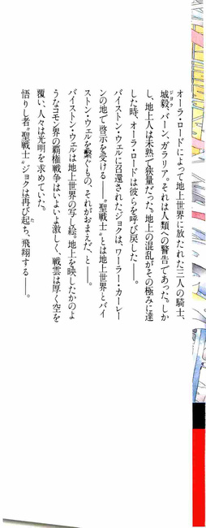
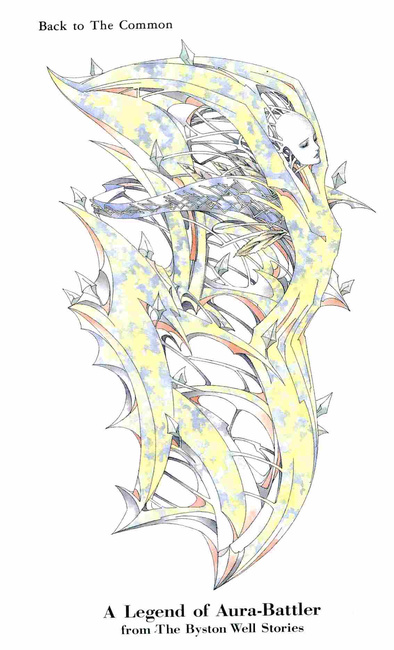
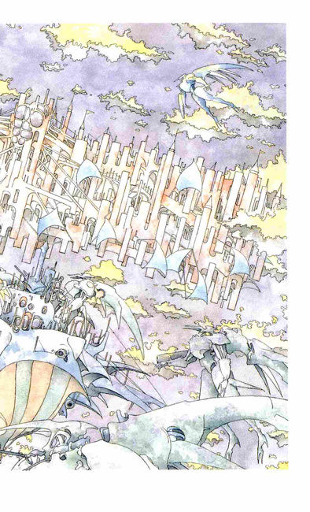
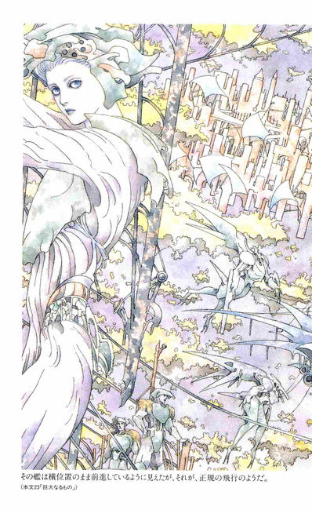
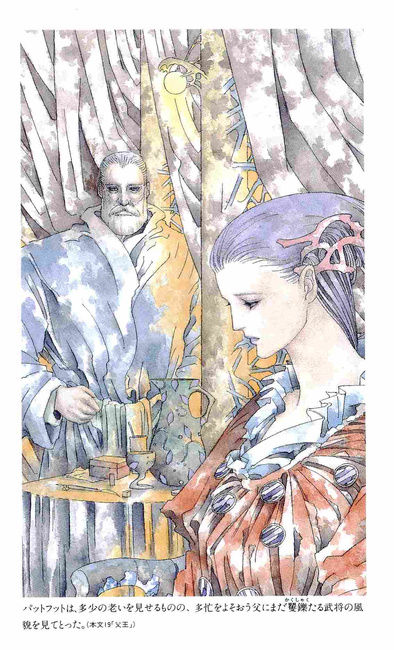
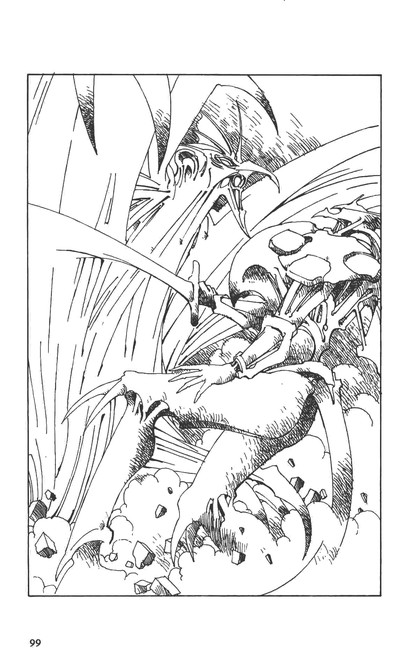
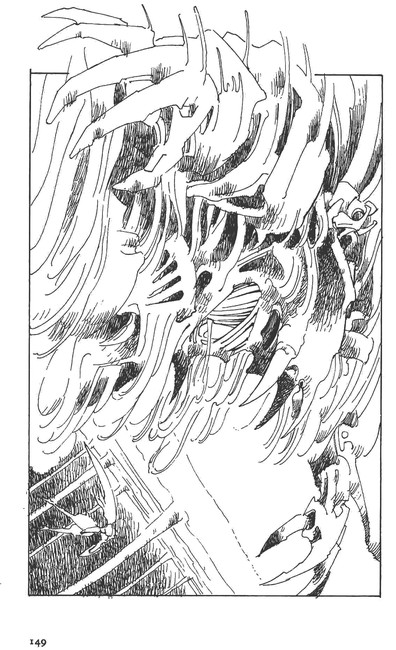
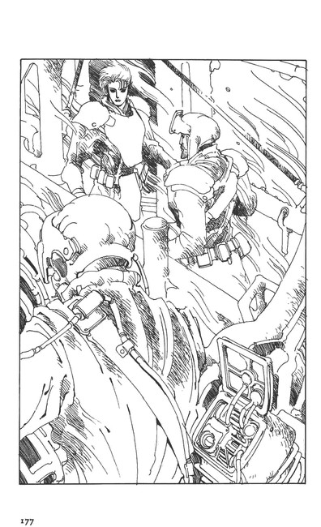
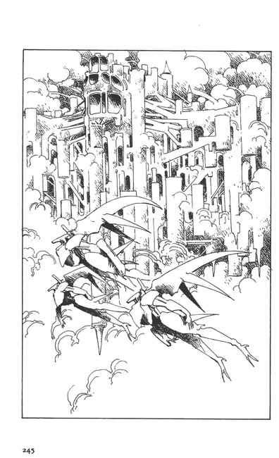
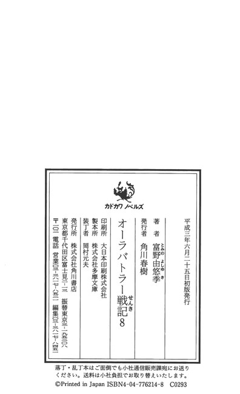

| [富野由悠季] オーラバトラー戦記08 | |
| 富野由悠季 | |
| (2015) | |
|
オーラバトラー戦記８ マシン増殖
富野由悠季
|






オーラバトラー戦記８ 目次
序
１ ワーラー・カーレーン
２ 洪 水
３ フェラリオの薫り
４ ジャコバ・アオン
５ 饐えた味
６ 空ゆく艦隊
７ 世界を照らすもの
８ 剣
９ 強獣の前で
10 再 会
11 女たちの山小屋
12 地上の物語
13 遅い朝
14 パットフット
15 ラース・ワウの午後
16 掛け橋に乗る
17 接 戦
18 ピンクの機体
19 父 王
20 抱 擁
21 本陣の前と上
22 潰されながら
23 巨大なるもの
序
「悲しむべきことは、肉体をもった者は、すべてのものが現れている処にいても、それらの意味を肉の感性によって、裁断することであろうよ......」
落下か!?
それはわからない。
が、自分がすべっていることはわかっていた。そのすべる感覚のなかで、何者かの言葉らしきものが知覚されていた。
イイィィイン......
「......喜ぶべきことは、すべてのものの意味を想像することがないために、その時その時を、何の恐怖も感じることなく生きられることであるよ......」
上昇か？ それもわからない。
その誰のものとも知れない意識だけが知覚されていた。
「生命とは、愚鈍なるものである故に、それを叱ることはない。それをもってして、絶望という死を導く鑑札にすることもない。命とは、その程度のものであるからだ」
横にすべり、前に後ろにすべった。流れた。
すべてが走っている。
シャーワワワワワン！
「命とは、肉の刹那の享楽のために、創られたものであるからであろう......」
その哀れむような言葉は、声になっているのか？ただの音響が、言葉のように聞えるのか？
幻聴か？ 錯覚か？
体内のどこかに記憶されていた知識、認識が、言葉となって浮上しているのか？
すべて、わ、か、ら、な、い......
シュルルルルーン。
「わたし、ジャコバ・アオンも、その肉らしきものを持たされた一人でしかないのが、口惜しい......それでも、世界を垣間見ようとする肉をもった者よ......知るがいい！」
『知れだと!? なにを知れというのだっ！』
反射的にそう絶叫する意識は、ジョクのものだ。
絶叫した意識には、ジョクの色があった。彼の声音だ。
ジョクこと城毅。
バイストン・ウェルのコモン界、アの国では聖戦士と呼ばれていたが、動乱の渦中にあるアの国の覇権主義に危機感を抱いて造反し、ミの国に亡命した。
そして、続く戦いのなかで、聖戦士の力ゆえに、彼は、故郷である地上世界──我々の注む世界──に帰還した。
東京で喚起した混乱......。
その地上世界からまたも、次元の捩れともいうべき世界と世界をつなぐこの域にすべりこんで、い、る。
それが彼の知覚する今、だ。
「......肉が、かくも強欲であるとはな......！」
外からせまる意識は、言葉となって、ジョクの認識域を打った。女性の声のようだ。
『なんだ......!?』
ジョクは反発した。そのような反発心こそ、ジョクという固有の肉体をもった意識が存在する証明だ。
そうでなければ、外部から押し寄せる意識の流れを、女性の声らしいと知覚することはない。
まして、それが、彼の前後左右、そして、上下からめくるめく光のように知覚されることを認識することもない。
「......肉を持つものは、醜いといっている」
『なら、消せよっ！』
そのジョクの反発意識が生んだ意思が、彼の肉体から放たれた瞬間、ジョクは、激動といっていい状況のなかに放り出されたのを知覚した。
全身が激しく揺れていた。
視覚に飛びこむものが、上に上にと流れていた。
それでいて、それがどういうものか識別がつかないほど、視覚は、前後にも上下にも激震していた。
回転していた。
「キャーアァァァァァ......」
細い声の絶叫、しかし、それも知覚したという意識があるだけで、聞えたという確信はなかった。
「ツゥーッ！」
別の呻きが聞えた。激痛にたえる強力な意思をもった肉体が発する呻きがあるとすれば、まさしくこれだろう。苦悶に唾しても遊撃することのできる男の呻きだ。
それが、徐々に遠くなっていった。
しかし、それさえも、あらゆる音響のなかから、ジョクの知覚が識別したからこそ聞えたのだ。
そう、人間の知覚は、このような不確かな領域にあっても、意識したものを取り出すことができる機能をもっていた。
『............!!』
その呻きが遠くなっていくなか、ジョクの意識はもうひとつ別の意識を探ろうとしていた。
『......どこだっ！ ガラリアっ！』
意識が、明確に固有名詞を発した。
ジョクは認識域のなかに、コンブ、泡、水流等のむこうに、カットグラとそのコックピットにすわるガラリア・ニャムヒーの姿をとらえた。
重い印象をあたえる筋のつながりと、陰影がめまぐるしく変化する闇の奔流のなかで、そのオーラバトラー、カットグラは、痙攣するように機体を揺らしながら回転していた。
その動きに機体が耐えられずに、へしゃぎゆがんで、剣が溶解するようにして手から落ち、次にそれぞれの関節が逆に曲り、脚が交差し、腰が捩れていった。
「ツェエッェッ......」
ガラリアの呻きだ。それが、鮮明にジョクの意識を打った。
『なに!?』
ジョクの意識に呼応するように、コックピットにすわるガラリアの姿が、一瞬、拡大したようにジョクの目に映った。
その瞬問、
「ゲヘッ!!」
ガラリアの目がカッと見開かれ、唇が苦悶に歪んだ。きれいな上下の歯がギリッと擦り合わされるのが見えた。
『おいっ！』
「......ゴホッ！」
ガラリアの唇が開き、血と体液の塊が吐き出されて、その姿が後退した。
ぐちゅっ......！
肉を潰す鈍い、生々しい音、つづいて皮を剥ぐ音が、ジョクの耳を打った。
『あああ......』
「ヒーッ！ やだよぉ──」
恐怖に呻くジョクの耳の間近で、チャム・ファウの悲鳴が、現実に聴覚をうつ音響としてこだました。
機体は、ゆったりと四散して、その中央に位置したガラリアの肉体は、散る衣裳を追うように皮がはがれ、赤い肉と筋が、千々に砕け、骨格から剥離していった。
そして、数百の内臓が血と体液を闇の奔流のなかに拡散させ、濡れた骨格もその継ぎ目を乾燥させながら、ただの白い固体となって放散していった。
その過程のすべては、ジョクとチャム・ファウのはるか遠くで起ったことであったが、二人には見えた。
「ジョクよぉー！」
ジョクには、チャムの小さな手が、彼の革鎧の縁を掴むのが知覚できた。
『あ、ああ......!!』
声にならない返事をして、ジョクは、はじめて、ここはどこだ、と自問していた。
１ ワーラー・カーレーン
城毅は、オーラバトラー、カットグラIIのコックピットにすわり、まだ落下感覚のなかにあった。
シートに縛りつけられたような状態で、指さえも動かすことができなかった。
ただ、知覚だけが冴えに冴えていた。
だからであろう。
幻覚を見ているのだと意識しながらも、夢や幻覚よりずっと明瞭なものとして、すなわち、ひょっとしたら現実なのかもしれないという認識をもって、目撃するものを理解していた。
しかし、恐怖と不可解という混沌のなかで知覚されることだから、さだかではないというのが、正解だ。
「水だ！ 海だ。ぜんぶだ」
チャム・ファウは、コックピットの狭い空間のなかを、飛びまわりはじめた。
彼女は、羽根をもった身長三十センチあまりのミ・フェラリオである。
人が想像するものを具現化するバイストン・ウェルの世界が、そのひとつの表現として、生み出した生き物である、といってよいだろう。
「海中だというのか？」
ジョクは、ようやく機体の震動がおさまっていくのと並行して、周囲の光景の移動する速度がゆるやかになっていくのを感じていたが、それでも、新幹線の窓から数メートルほどの処にあるものを見ているような速度感である。
それまでがひどすぎたのだ。
光の陰影だけという印象だった景色のなかに、具体的なものの移動が視覚にとらえられるようになった。しかし、それも、最初は縦につながる波紋の紋様であったり、横に回転する渦巻きであったりした。
やがて、泡の列が右に左に流れる筋になり、海草の列が交差しはじめたりした。
そして、海草のあいだに、くらげや魚類の影が走るようになったが、それらも、方向を意識しているようにはみえず、右に上にと自由に移動していた。
海草についている花の黄、赤、白、青という鮮やかな色が、ジョクの視覚を刺激しはじめた。
「そうだ！ これ、母さんの処だ！」
チャム・ファウの興奮した声が、ジョクの耳を打った。チャムにできる表現はその程度のものである。
「......チャム・ファウの世界の、上位の世界ということか......」
ジョクとチャムの意思伝達は、かならずしも言葉によってなされているのではない。むしろ、テレパシーにちかいものに頼っている。意識を直接感知する伝達方法に、言葉が補完するように機能している。
だからジョクは、そのように理解し、聞いてやった。
「そうだな......そうだ！」
バイストン・ウェルの世界は、いくつかの性格のちがう世界が、重層的になっているといわれている。
ジョクは、バイストン・ウェルのコモン界にあらわれ、チャムは、その世界の一部にある特別なテリトリー、我々の知る言葉でいえば、ワームホールに似た場所で生まれた。その、チャムの生まれたクスタンガの丘が、直接つながっていると考えられている世界が、ウォ・ランドンの最下位の世界、ワーラー・カーレーン。
そこは、コモン界では俗に、水の世界と語られていた。
今、二人の乗るオーラバトラーは、その界にいるというのである。
「............!?」
カットグラの機体の降下速度は、さらに遅くなったようだが、本当に降下しているのかどうかは、はっきりしなかった。
ジョクは、海草の林のような場所に、人の影を見たように思えて、ゾッとした。
が、その第一印象は、次の人の影を見ることで、現実のものだと確信した。
分厚い書籍を抱くようにした、一人の老人が、波にゆれる白髪の頭をあげて、ジョクたちを見たのだ。
彼は、巻貝でつくられた椅子に腰をかけ、肘掛けに肘をのせて、古代ギリシャの哲人のようなまなざしをしていた。彼の袖口の揺れぐあいから、確かに水中であると思えた。
別の集団がいた。
数人の男が、縄を巨大なホラ貝にからげて、カジキに似た魚に引かせていた。
彼等は、エレファント・ノーズに似た小型の魚にまたがって、そのカジキを追いたてているのだ。
ときに、ホラ貝が海草にひっかかったりして、大騒ぎをしている。男たちは、布を胴に巻くようにして、四肢はむきだしにしていた。
闊達に見えた。
「どういうんだ？」
「ワーラー......ワーラーだ。モアイがそう教えてくれてたわよ」
チャム・ファウは、それらの人びとを見つけると、フロント・ガラスに顔を押しあてるようにして、ますます興奮していった。
その間にも、ほかの数組の男たちの姿が観察された。
海草の茎から伸びて先端についている実のようなものを採集したり、岩にこびりついている黴のようなものを採集している者もいた。
「......どういうことか......こちらが見えている者もいるようだが、そうでもないような者もいる......駄目だ！チャム、触るな！」
周囲を見まわしているうちに、ガラスに貼りついていたチャムが妙な動きをしているのが目の端にうつったので、ジョクは慌てた。
彼女は、フロント・ハッチを開こうと、レバーに取りついて押そうとした。
ジョクの手は、その羽根をわし掴みにした。ちょっとぐらい潰すように握っても、彼女の羽根が傷むことはない。
「痛いっ！ なんでだよっ！」
「本当の水なら、コックピットに入ったら、死んじまうぞ」
ジョクはそう言葉にした瞬間、その考えはまちがいだと感じていた。
バイストン・ウェルに関わる世界は、もともと物理的にちがう次元なのだ。ジョクの常識や通念などでは断定できないことの方が多い。
だからといって、カットグラの機体が、水らしいものにつつまれていると感じられる現在、ハッチを開く勇気はなかった。
「放せ！ 大丈夫だって！ お母さんが、子供を苦しめるわけないだろう！ここはコモン界じゃないんだ！」
ジョクに羽根を握られたまま、チャムは、手足を精力的にふりまわした。
「......そうだな......そうかもしれない......」
確かに、機体に水圧がかかっている徴候はなかった。映画などで見た潜水艦のような機体の軋み音はなかった。
「もう少しだけ、静かにしていろ」
ジョクは、チャムを放すと、カットグラの機体のチェックを急いだ。この『場』にはいって、初めての現実的な行動である。
「......ワーラー・カーレーンは、女のフェラリオの国だと聞いたことがあるけど、男だらけじゃないか」
「助平なこと考えて！」
「いつもそれだ」
ジョクは、カットグラの腕を胸元に移動させてみたが、いつものような調子でできた。関節の動きも問題はないようだった。
しかし、その指は溶けていて、剣の跡形もなくなっていた。
地上界にリープする直前、バーン・バニングスとガラリア・ニャムヒーの剣が、同時にそこに激突して、巨大な力が発生した証拠である。
『さっき見た、ガラリアのカットグラの機体が散り、彼女の肉体が砕けた光景は、現実だったのか？』
ジョクは漠然とそう思いながら、もしそうだとしたら、その前に聞いたバーンの雄叫びらしきものは、バーンがこの界を突破したときのものではないか、と思いついた。
『奴ならできるだろう......。国に戻ったか......！』
ジョクは、行きと帰りとオーラ・ロードを二度使ったのである。
とすれば、東京上空から戻るところは、アの国でしかないはずだ。それが、今のオーラ・ロードというものであろう。
そんなことを考えているジョクの視野のなかに、女性たちの泳ぐ姿が入ってきた。彼女たちは、大半が長い髪とスカートを水中になびかせていたが、それは、人が水中で泳ぐ姿とはなにかかけ離れた印象をあたえた。
水中の人間よりはもう少し早い動きで、泳ぐ姿勢をとっていない女性たちの方が多いのだ。
「お姉ちゃんたちだ！ お姉ちゃん！ お姉さまがたっ！」
静かになっていたチャムが、またもフロント・ハッチのガラス面を叩き出した。
「あたしです！ チャム・ファウです！ みんなぁ！ねぇ、ねぇ、見て下さいよぉ」
ジョクは、革兜を脱ぎ、ホッと息をついた。
もうどうなってもいいと覚悟がついた。
理解できない現実を見せられたら、それにしたがうしかない、というのが、コモン界に落ちてからの彼の生き方である。
一人の意思とか気力で、どうなるものでもなかったからだ。
こうもはっきりと違う世界を見せつけられ、たしかにその場にいるという実感もある、となれば、なにをすれば良いのだろう？
『......はっきりしていることは、自分が拒否されている存在ではないということだ......』
ジョクは、この場と自分との関係をそう理解して、気を落ちつけるようにつとめた。
２ 洪 水
ギルルル、ルルルル......
それは、オーラ・マシーンよりも重く、オーラ・シップにちかい音響だった。しかし、バーン・バニングスの知っているオーラ・シップの音はもっとかるく、このように重層的な音響ではなかった。
『なんだ......!?』
視覚に印象づけられているのは、オーラの七色の光が混在し、地上世界の夜明けに見た太陽というもののように莫大な光を放つ星の輝きの乱れだった。
『これがオーラ・ロードかっ！』
バーンの意識が絶叫し、その絶叫によって、自分の意識を覚醒させようとしていた。しかし、それも無駄な格闘なのだ。
バーンの意識は、まだ混乱と驚愕のなかに揺さぶられているだけだったから、その絶叫の連続も光の奔流も、ただ外の現象として知覚されるだけだった。
それでも、次に水の感触が全身を包んだとき、バーンは損傷したはずのガベットゲンガーの姿勢を自分の水平感覚にあわせるように、左右のレバーとフット・ペダルを操作していた。
ドガウッ！
それは、水の流れが起す衝撃、という感触だった。
「なんとっ」
バーンは、戦闘中のいつもの癖で、声を出していた。それは、自分を奮いたたせるものであり、それによって、次の事態に素早く自分の意識を振りむけていくことになる。
『これがでるということは、俺は、生きている！』
そう自覚できた。
が、機体は寝たままの姿勢で半回転し、上に持ち上げられたかと思うと、今度は沈んだ。
水に翻弄されているためだとわかるものの、コックピットから見える光景は、泡のかたまりであり、ときに走る光の列は、オーラの七色の光と地上で見た太陽が発する夜明けの光に似ていた。
『オーラ・ロードか!?』
そう思いながらも、はっきりしない印象にバーンの意識は苛立っていた。
チッ！ バシャッ！
水がはじける音だ。レバーを握る手に、水の感触があった。
バシャーッ！ 上半身が濡れ、顔にも水がかかった。
「なんだと!?」
少なくとも、ガベットゲンガーのコックピットにすわっている限り、水が入りこむことはないはずだ。それが、水！
機体が横に回転して、次に水平のまま流れ、ゴクッと固いものにぶつかる感触がした。
「ええいっ！」
絶叫した。その自分の声が耳を打ち、舌が水を感じた。
『甘い......！』
バーンが知っている水の味だ。
『これで死ねというかっ』
そういう思いが走ったが、それでもいいと思えた。知っているもののなかで死ぬのなら、地上で、あのジェット戦闘機とかいう、観念ではわかっていても生理が受けつけないものにやられて死ぬよりは良い。
『世界よ！ わたしをバイストン・ウェルに帰してくれたのかっ！』
バーンの意識が恐怖に震えながらも、感謝の絶叫を発した。
シートベルトが引きちぎられて、バーンの身体は天井と左右の窓にぶつかり、レバー類に脇腹を突き上げられた。
それでも、彼には、ガベットゲンガーを制御しようという意識は、明確にあった。
『ここまで来たのだ。オーラバトラーのなかにいるよりも、外に出て、死を受けいれよう』
そういう意欲が頭をもたげてきた。
ガベットゲンガーの機体に受ける震動がゆるやかになり、身体が再度シートに落ちた。
バーンは、正面に水面下から空を見上げるような形になった。
水面のすぐ下では水が渦をつくって、流れていた。
大木の影が上から下に流れた。草のかたまりが、蔦状のかたまりが流れた。
その背後では、ひとつの光のかたまりが、千々に乱れてひろがり、またひとつになった。
「ウッ!?」
人の身体が流れているように見えた。
その人の形をしたものはバーンの視界の左に流れ去って、ややあって、右手から上がってきて、正面のハッチのところに来た。ガベットゲンガーの機体が回転しているから、そう見えたのだ。
「なんだ？」
水に流される死体に思えた。
ガベットゲンガーの機体は、激しい水の流れに乗っているらしい。だとすれば、その人間の形をしたものは、溺死体にちがいない、とバーンは思った。
そんなものは、見過したかった。早く行ってくれ、とバーンは願った。
しかし、その人の影は、正面のハッチに貼りつき、動かなくなった。腕が左右にひろがって、ハッチに吸いつくようにした。
ズウッ、ズズズズ......。
柔らかいものにぶつかった衝撃があった。そして、グスッと機体全体が持ち上げられた。同時に、水しぶきがハッチを隠すようにザバザバとあがった。
ガベットゲンガーの機体が停止して、濁流をかぶっているのだ。
ハッチの正面に貼りついたものは、そのしぶきのなかでも動こうとしなかった。
「......!! なんだぁ!!」
バーンの声は、悲鳴にちかかった。
バーンは、激しい飛沫のなかで、ハッチに貼りついたものが目をしばたくのを見たのだ。彼は身をひこうとしたが、シート上に固縛されたように動くことができなかった。
「生きている!?」
グリーンに輝く瞳が、激しくゆらめく藻と飛沫のなかで、今度は瞬きもしないでバーンを凝視していた。
瞳が閃光を発したように、その印象は強烈だった。
ズズッ、ズリッ。
機体がまたすべり、一方がかすかに上下に波うつようになった。流されているのではない。岸に乗りあげてすべっているようだった。
『......女か......!?』
バーンは、ようやくその瞳をもったものが、女性であるらしいとわかった。
藻と見えたのは、女の髪のようだ。
肩と腕が動いた。
飛沫の白さに負けない白い肌だ。バーンは、ガロウ・ランの片割れではないか、と思った。
『そうでなければ、こんなことは......』
バーンの意識が現実にたいして作動しはじめた。彼はシートの後ろ横にある小銃に手を伸した。
それが水をかぶって使いものにならなくなっているのなら、短剣があるとも思った。
バーンは、ガベットゲンガーの両手で足場をさがした。
機体が揺れたはずだが、正面のハッチに貼りついた女性は、上体を下にずらすようにしただけだった。
が、はじめてその顔に緊張が見えた。死に顔ではない。そして、ガロウ・ランのような凶悪な形相でもなかった。
苦痛の色を浮べている。
「............!?」
それでも、バーンは騎士の本能を働かせて、腰の後ろにひそませていた短剣を身体の横において、次にガベットゲンガーの手を立てるようにしながら、機体の上体を起していった。
フロント・ガラスの飛沫が流れおちて、視界がひらけたようだった。
女の表情が大きく変化して、ズズッと上体がさがった。白く長い腕が、天に伸びるようにして、フロント・ガラスに手がかりを求めた。大きく開かれた五本の指。それが、ピッタリとハッチのガラス面に吸いつこうとしていた。
落ちないようにという意思が、その腕の形に歴然とあらわれていた。
必死なふたつの腕......伸びて浮きたった筋肉の筋......。
が、バーンの目は、計器盤のむこうに落ちこんだ女の瞳を追った。なにが起るか、わかるものではないのだ。
女の腕がゆったりと曲って、ハッチの足場にあたるあたりをつかんだようだ。足場が確保できたらしい。
上体が計器盤のむこうに沈んで、むき出しの背中が怯えているような姿勢をとった。
「............!?」
バーンは、揺れる機体のなかから、周囲を見まわした。
風雨が、機体を洗っていた。夜明けか夕方かわからない。周囲は煙っていた。
ガベットゲンガーの大腿部あたりまで黄褐色の濁流がぶちあたって、機体をゆすっているのだ。
すぐ左手には、岩壁のようなものが見えて、その上の方では、風に押された灌木がきしんでいた。
バーンは、ガベットゲンガーの足で足場をさぐり、爪をくいこませて、機体を固定させようとした。関節がギシギシと鳴った。
全体が引きつったような感じがあって、レバーを操作しても十分に働いてくれない。バーンは、コックピットの左右の窓の下にのぞいているマッスルを掴んで引くようにして、腰と足の関節をつかって姿勢を起すようにした。
ガベットゲンガーの右手を伸して、岩場を掴ませた。指は完全ではないものの、腕で機体を固定するように位置させることができた。
ガベットゲンガーの羽根は、動かそうとしても手応えがなかった。用をなさないようだ。
「ウッ！」
ガベットゲンガーの膝に、流されてきた巨木がぶつかって、機体が傾いだ。
「オオッ！」
悲鳴がかすかに聞え、コックピットの床にたまった水が跳ねた。その悲鳴は、ハッチ前に取りついた女のものだろう。細い、おびえた声だ。
一方の腕でハッチの足場の縁を掴んで、緑色の髪を飛沫で重くした女の瞳が、バーンを見上げた。
その瞳には、懇願の色があった。
『助けろというのか？』
バーンは、女のあらわになっている肩の色に胸をつかれた。怪かしではないかと思う。
ガベットゲンガーの膝を、激流にあらがうように屈伸させながら、岩の頂きまでの距離を測ってみた。
バブッ！
オーラ・ノズルが水を吐き出して軋んだ。次の噴射で多少の推力が得られたことがわかると、
「飛ぶぞ！ 掴まっていろ！」
その声が聞えたのかどうか。女の瞳が大きく見開かれた。
バーンは、ガベットゲンガーの左手でハッチの前をかばうようにすると、膝の屈伸とオーラ・ノズルの一噴射で機体をジャンプさせた。
女が視界から消えたが、バーンは、岩場が視界の下にはいるのを見届けてから、ガベットゲンガーの膝を折るようにして、岩場に着地した。
「............!?」
バーンはともかくも機体が安定したとわかると、計器盤を横に押しやって、ハッチの下部を覗いた。
女は、横殴りの雨のなか、ガベットゲンガーの腹部と手のあいだに挟まるようにしていた。
その姿勢なら、ガベットゲンガーは片膝をついた姿勢にしてあるので、一方の大腿部に彼女の足がとどくはずだった。
それでも、女はガベットゲンガーの手の方に身体をもたせかけようとして、肘に力をいれて足を腹部にかけて、ずり上がろうとした。
「............？」
周囲の様子を確かめるよゆうなど女にはまったくないのだ。その挙動は、痴呆に見えないでもない。長い髪の毛が顔に貼りついていくつもの筋をつくり、女が必死の形相をすればするほど、ますますそう見えてしまう。
『......全裸？』
女の恰好が、このように濁流のなすがままになっている場所では、想像もつかないものなので、バーンは唖然とした。
こんなことは、ガロウ・ランかフェラリオにしかできないだろう。
「チッ......」
ガロウ・ランやフェラリオを想像するだけでも、バーンのような騎士には、嫌悪感が湧くのだ。女がどんなに美しく見えても、ガロウ・ランかフェラリオを助けたのなら自己嫌悪に陥る。
しかし、今の場合、女がそのどちらであろうとも、ここはバイストン・ウェルだという証明になった。東京のような処には、獣のように見える女などはいないだろう。
「......コモン界。そうだな......問題はどこか、だが......」
バーンは、すべりやすくなっている床に気をつけながらシートに戻ると、岩場の正面にある窟に機体をつけることにした。
計器盤をそのままにして、バーンはカットグラの左手を少しさげてやった。女は、ようやくその手に腰をひっかけることができたようだ。上体が安定した。
女は乱れる髪を抱くようにして、おのれの胸元を隠すような仕草をする。
バーンは、斜め後ろから、女の広く白い背中から腰、やや開きかげんにして前後に揃えて下にさがった形のよい脚を観察した。
「フェラリオか......」
背中には、ミ・フェラリオの時代についていた羽根の痕跡が残っているという話もきいたが、雨と薄くらがりのなかでは、それを見届けることはできなかった。
浅い窟だったが、風雨をしのげそうな角度に入口があった。
濁流からも、十数メートルの高さにあった。
バーンは、ガベットゲンガーの片膝を折って、女を下ろしていった。
女は、ガベットゲンガーの手から跳ねるようにして、窟の奥に飛びこんでいったが、バーンの視界のなかですぐに立ちどまって、ズルッとしゃがむようにした。女の白い肢体は、闇の底の染のように見えた。
窟の入口付近では、頭上から垂れた蔦の塊が、横殴りの風のなかでワサワサと揺れ、ときに、松の木が根こそぎ転げ落ちてきたりした。
バーンは、ガベットゲンガーの身を引かせると、窟の周囲を見てまわって、その左右が濁流になっていることを確かめた。
ブホッ！
再度、オーラ・ノズルを噴射して上昇してみた。
が、窟をつくる岩場の上にたどりつくのがやっとだった。
シュールルル、嫌な震動がきて、足の爪が背の低い松の木を押しつぶして着地した。
「............」
上流は山の影が闇の壁をつくり、下流は闇のなかに吸いこまれていた。左右の影らしいものが何か見きわめるために、バーンはガベットゲンガーのライトをつけた。
風雨が白い幕になって視界をさえぎっていた。
「崖か......」
かなり深いと読んだ。ガベットゲンガーのオーラ・バッテリーも休ませる必要があると感じた。
「......フッ......」
息をつきコックピット内を懐中電灯で調べてみると漏水はなくなっていたが、嫌な状態である。
下の機関部にしみこんだ水が、まずいことにならなければ良いと思う。
ゴウッ！ 突風に、機体が揺れた。
濁流は、バーンの聴覚を圧するかのように、間断なく吠えつづけていた。
神経に障る。
バーンは、情報が欲しかった。あの得体の知れない女から聴取するしかない。
「......死なばもろとも......か？」
苦笑する。
ここがコモン界らしいとわかったので、バーンは本能的に安心していた。
得体の知れない女であっても、あの若く見える艶やかな肢体をもっと確かめたいという好奇心が湧いてきた。
３ フェラリオの薫り
ガベットゲンガーは、足元の岩を崩して、よろけるようにして窟に降りたった。
「そうか......」
機体を立て直してから、バーンはあのフェラリオらしい女は、見たことがある顔だと思い出していた。
「......あのサラーンに似ている......」
ワーラー・カーレーンで学習をすべき宿命にありながら、コモン界に下ってきたエ・フェラリオである。
バーンは、その種のフェラリオを嫌悪していた。
ことに、サラーンは、地上人を呼べたらしいということが、バーンの癇に障っていた。
バーンの主君、ラース・ワウの城主であるドレイク・ルフトが、地上人を呼んだということでサラーンを優遇したために、彼女は増長していた。
水牢に閉じこめられていながら、牢番の兵を色仕掛けでたぶらかしたことは、二度や三度ではない。その上、バーンたち騎士にもへらず口を叩いたのである。
何人かの騎士は、サラーンにその精を吸い取られて、騎士として役にたたなくなった。
バーンは、彼女がジョク以外にも、トレン・アスベアやマーベル・フローズンという地上人を呼んだとされる事象を目撃しているのだが、それを信じてはいない。
むしろ、その前にアの国に現れた地上人ショット・ウェポンから、バイストン・ウェルの世界の在り様についての科学的な解説をきいて、地上人を呼びこんでいるのは世界そのものの意思であろう、と理解するようになっていた。
しかし、サラーンの力が呼び水になっていたとする説を、全面的に否定できないバーンは、ますます彼女の存在を嫌悪した。
だから、サラーンが、ガロウ・ランの一統に拉致されたときには、溜飲がさがる思いがしたものだった。その後、ガロウ・ランのギィ・グッガの一統がアの国に滅ぼされたときに、ドレイクは、彼女を収容したらしいのだが、その収容場所については、バーンのようなオーラバトラー部隊の前線の兵には、知らされなかった。
ガベットゲンガーを片膝立ちの姿勢にすると、バーンはハッチを開いた。
ヒョゥー。
横からの風がするどい音をたてた。雨が一方のハッチの面を激しくうった。
「フゥーッ......」
全身に打撲の痛みがよみがえった。気が緩んだからだ。バーンは、脇腹の痛みのひどさを堪えながら、短剣を腰につるして、ガベットゲンガーの正面のライトをつけた。
光のむこうに、濃緑色の髪を背中にべったりと貼りつけた白い背中が、窟の奥の壁に転がった毬のように見えた。
「サラーンか」
その白い肩がビクッとして、頭がうなずいたようだった。
「............！」
バーンは胸に嫌悪感がこみあげるのを待ったが、かつてのように、フェラリオと見ると唾を吐きかけたくなるような感情は湧かなかった。
『妙な......』
ガベットゲンガーのライトを消して、懐中電灯で足場を確かめると、バーンは、ガベットゲンガーの膝の上から、風雨に打たれる岩場に降りたった。
この懐中電灯は、東京湾に面したアリスランドから盗み出したものだ。かなりの光量があるのだが、バーンは電池の消耗を恐れて、暗い光度でつかった。
入口にたれさがってユサユサと揺れる蔦類が、窟に風が吹きこむのを防いでいるようだった。
窟の床には、そこここに草が生えていて、奥の岩は乾いてさえいた。しかし、窟の入口からは、濁流と風雨の音が押し寄せて、それが、岩壁に押し殺されて籠った音響になって、バーンの耳を襲った。
薄暗い懐中電灯の光の輪のなかに、サラーンの白く煽情的な丸みのある身体が浮かびあがった。
バーンは、距離を置いて立ちどまった。
そして、苦い思いを吐き出すように、バーンは聞いた。
「......お前が、わたしをこの地に呼び戻したのか？」
背中から押しよせる音響に負けまいと大声を出した。
「............!!」
サラーンの全裸の背中が浮き上がったのではないかと見えるほどに揺れて、頭がバーンにむいた。
「滅相もありません......！ 騎士殿を呼ぶなどと......そんな滅相もない......！」
細い声だったが、バーンにははっきりと聞えた。
その声は、かつてラース・ワウの水牢でへらず口を叩いていたフェラリオとは思えないほど、弱々しいものだった。
「サラーン・マッキではないのか？」
「はい......バーン・バニングス様でいらっしゃることも、覚えております」
ななめに向けた瞳がやや陰をつくり、肩をすくめ、両膝を胸に抱くようにしたサラーンの姿は、信じられないことなのだが、処女のように見えた。
バーンは、手にした懐中電灯を放り出したい衝動に駆られた。
足場は、濁流を受けてかすかに震動しているようにも感じられた。そんな岩場の片隅の、小さな光の輪のなかのサラーンは、はっきりとしたくびれをみせた腰を捩むけて、彼女特有の濃緑色をした髪を白い背中に貼りつけていた。
その広大に見える背中は、かすかに震えていた。
「............!?」
バーンは怪しんだ。
本来、ワーラー・カーレーンで学問を修めなければならないはずなのに、コモン界に下るというのは、規律にしたがえない、ふしだらなフェラリオなのである。
しかし、今、目の前で小さくなっているサラーン・マッキは、コモン界を苦界に感じている人に見えた。
「この洪水らしいものと、自分がここに戻ることができたということ。これは、どういうことか、自分には釈然としないのだ。お前は、ここにどうして来たのだ？」
バーンは、サラーンの背後にひざまずいて、懐中電灯の光を消した。
闇になった。
夕方の光も、風雨をもたらす雲に打ち勝つことができない時間になっていた。
「......ハダウの谷の窪地にある水牢に閉じこめられまして、四年ぐらいにはなりましょう......そのあいだ、ドレイク様からはなんのお沙汰もありませんでした......そして、昨夜でした。数日つづいた大雨のあとに、あたしの水牢の水嵩が増えまして、水牢と川をへだてる壁が壊れてしまったのです......こんなに恐ろしい水の流れなどは、今まで知りませんでした......ですから......あたしは、助けてくれるものはないかと叫びました。何度も何度も、必死でした。長いあいだの水牢暮しで、あたしは力を蓄えるというよりも、ただただ衰弱する自分を感じていました......ですから、助けが必要だったのです」
サラーンは、長い時間をかけて話した。
サラーンがそこまで喋り終えると、闇のなかで待っていたバーンはいった。
「......衰弱？ 男の精を吸うこともできなかったか？」
彼は、弁解に聞えるサラーンの言葉に、昔、彼女に抱いていた嫌悪感を思い出して厭味をいった。
「そんな......殿方の生命を吸うなどと......滅相もない......」
サラーンは、怯えた声を闇のなかに漂わせた。
その声音は、かつてバーンに毒づいたような気性の強さをまったく感じさせない。
「............」
バーンは、全体の状況は了解した。
ハダウの谷といえば、アの国の北、ギィ・グッガさえも侵攻を避けたほどの峻険な山岳地帯である。
ガベットゲンガーの調子が戻ってくれなければ、ラース・ワウに戻るにしても簡単な距離ではなかった。
「ドレイク様の軍は、勢いがあるということか......」
サラーンは、ドレイクに忘れられた存在だったのだ。地上人を無理によばなくても良い状況がつづいている、ということであろう。
そして、辺境の地の水牢に閉じこめられたまま放置されていたのでは、どのようにふしだらであっても、その性を駆使することはできなかっただろう。
『衰弱......あり得る......ここの水も合わなかったのであろう......』
バーンは、窟の入口にむけて懐中電灯をつけ、風雨にさらされているガベットゲンガーをチェックした。思ったほど損傷はないようだった。
バーンは安心して、懐中電灯をサラーンの膝もとに向けていった。
「......ああ......」
光の輪に自分の身体が襲われたのが、真底恐ろしいのか、膝頭を抱いていたサラーンは、脚の爪先をさらに立てるようにして、背中をまるくした。
「これはな、我国で発明された電気というものだ。凄いものだろう。火のように熱くはないのに、これだけ明るく、懐中に入れて持つこともできる」
「テンキ......？」
バーンは、話を簡単にするためにウソをいった。
彼は、ドレイクの居城のラース・ワウが、ギィ・グッガに戦勝したのちに電気を設備したので、電灯も懐中電灯も知っていた。しかし、いま彼が手にしている懐中電灯は、アリスランドで盗んだもので、ラース・ワウのものよりは、強力で長持ちするものだった。
バーンは、懐中電灯を手にしたまま、乾いた岩に腰をおろした。
「ウッ......!?」
息をついた。
光の輪のなかのサラーンの瞳が見開かれて、かすかに膝を崩して乗り出してきた。
「どうなさいました？」
「いや......戦闘が激しくてな......身体中が痛む......」
「............」
バーンは、自分の身体全体を両手で確かめるようにした。懐中電灯の光が揺れた。その照り返しをうけたサラーンは、不安に取りこまれた様子だった。
「......お前は、コモン人の食べ物は食べられたか？」
「少しは......でも、身体にあっている水のなかにおりましたし、良い藻草を口にしていましたから......」
「そうか......」
バーンは、フェラリオについての固定観念に縛られている。ことに、濁流と風雨による騒音のなかの闇ということもあった。彼は、サラーンの衣類について気をまわすことはなかった。
ガベットゲンガーのコックピットにあがって、食料と水を持ってくる気になった。彼女と距離を置くことで、今後のことを考える気にもなっていた。
基本的に、彼は用心深い戦闘者である。
バーンは、腰をあげようとしたが脚に力が入らず、逆に腰が後ろに倒れるようになって、背中を岩床にぶつけてしまった。
『なんだ!?』
意識と身体が、まったくつながらないのだ。
「どうなさいました？」
「いや......」
足をすべらせたという弁解の言葉さえ出ない。
混乱した。
戦闘中でも、こんなことは一度だってなかったことだ。
「疲れがでたか......身体に力がはいらぬ......」
情けなかったが、これもサラーン・マッキの摩詞不思議な力のせいか、とも勘繰った。いまサラーンに襲われたら殺されるだろうと感じた。
本能的にバーンは、腰の短剣に手をやったが、その動きさえも緩慢であったようだ。サラーンが、その手の動きを目にとめて、
「あたし、あたし、なにも考えていませんし、なにもしようと思っていません。できないんです」
「............!?」
バーンは、頭さえも岩床から上げられない脱力感のなかで、サラーンを見上げた。
懐中電灯だけは握っていたが、その光は外に向いていた。
サラーンは、膝を抱いたままバーンを覗くようにした。
「コモン人は、あたしたちが、妖術を使うように思っていらっしゃいますけれど、そんな力はないんです。ただただ、女の形を利用するだけのことで......それを過大に考えているのです......」
「地上人を呼んだ......」
「知りません......」
サラーンは、天を仰ぐようにして、かつてのことを訥々と語った。
「......あのときは、あたしは、ただフェラリオの言葉で、世界を祝福する言葉を並べただけです。そうしたら、オーラ・ロードに乗った地上人がいらっしゃった......どうしてなのかは、わかりません」
バーンは、懐中電灯の光を消した。電池の消耗を恐れたからだ。
再び闇がきた。
「......ただわかることは、偶然だったということです。偶然が二度つづくことはないという考え方もありますけど、二度、三度と偶然が重なることもあるのではないでしょうか？」
バーンは、脱力感にとりつかれた自分の肉体を呪った。
あきらかにオーラ・ロードを通ったためなのだ。
ガラリアは、あの異次元で消失した。そのことを思えば、ともかく、五体満足でコモン界にすべりこめた自分は、フェラリオの前に横になっていたとしてもいい方なのかも知れないのだ。
「......今回のことも偶然だというのか？」
「え......？」
闇の一方から、サラーンの息づかいが聞えた。
「......この広いコモン界で、助けを呼んだ者はよほどの数にのぼろうが、わたしが、お前に近い位置にいたのは偶然ではなかろう......」
「そうで、しょうか？」
「世界が必要とした、とは思える。わたしの意思ではない。お前の意思でもなかった。しかし、ここは、地上以上にオーラに満ちた世界である......」
「............」
嘆息に似たサラーンの息が、闇に色をつけたようだった。
「口にするものが、あの機械にあるのならば、持って参りましょう。あたしが、機械に行ってよろしいでしょうか？」
「............」
バーンは、闇を凝視して、懐中電灯をつけた。
「これをもって行くがいい。シートの下に物入れがある。それを持ってきてくれ」
バーンは、この直後に自分に不利なことが起ることも想定した。短剣の柄は左である。サラーン側だ。
「その光を消して下さい。そうしたら、あたしがそれを持っていって、使います」
「......わたしの指が動くのが見えるな？ この出っぱりをこうずらすのだ」
「はい......」
サラーンが覗きこんでから、バーンは懐中電灯を消し、それを自分の脇に置いて、その手を腹部に持ちあげていった。
その動きさえもひどくだるく感じた。
バーンの足の方にサラーンが動く気配があった。
バーンの右脇にまわったサラーンは、懐中電灯を拾ったようだった。かすかに電灯と岩が接触する音がしたが、それっきりサラーンの気配は消えた。
ややあって、風雨のなかに、彼女のシルエットが浮きあがったのを、バーンは視野の下部に捕えたが、無理に視線をおろしておくことも辛かった。
闇をつくる天井を見る。
『......俺の行く先も、闇か......』
バーンは、コックピットに小銃を置き忘れていることを思い出したが、心配することはやめた。
「あの......」
懐中電灯の光がちかづいて、サラーンが呼びかけてきた。
「ン......？」
「機械のなかに、衣類のようなものがありました。ひとつお貸し願えませんか？」
「衣類？」
バーンは、米軍のメカニック・マンたちから貰った衣類のことを思い出した。珍しい地上の文物である。バーンにすれば、フェラリオごときに触って欲しくはなかった。
それらは、艶々とした、ひどく薄い丈夫な袋にはいっていた。ビニール袋であるが、勿論、バーンもサラーンもその名称は知らない。
サラーンは懐中電灯の光を消してから、バーンの傍らに物入れと、衣類のはいったビニール袋を置いた。
「はしたない恰好をしておりますから」
闇のなかで、サラーンはいった。
「......毛布があったろう。それを使え」
「あれは、バーンさまがお使いになりますから......」
「ン......。中のものを出してみせてくれ」
「はい......」
全裸のまま居ずまいを正したのだろう。懐中電灯がつくと、サラーンは、バーンにたいして横座りをして、髪で胸元をかくし、ビニール袋を二人の間に置いていた。

『このフェラリオ、人がちがったか......』
バーンは、アロハ・シャツを示し、それからジーンズのスラックスをはくよう指示したが、サラーンはジーンズを膝の上に置いて、モジモジした。
「どうした？ それは厭か？」
「こんな強い布を身につけるのは......申し訳ございません。そのシャツというもの、使わせていただきます」
「勝手にするがいい。しまっておいてくれ」
「は、はい......申し訳ございません」
サラーンは、アロハ・シャツをふわと背中にまわして、小さなボタンをかけるのに手間をかけた。そのようなボタン掛けは、初めてのことらしかったが、派手な色彩のシャツが、彼女に生気をよみがえらせたようだった。
「物入れのなかに飲みものがある」
「はい......」
バーンは上体をずらして、頭を高いところに上げようとしたが、それも難しかった。
「あ......」
サラーンは、バーンの身じろぎに気づくと立ち上がった。アロハ・シャツが腰まで覆って、全裸の異様さを隠してくれたので、サラーンの身のこなしも伸びやかになった。
「............？」
サラーンは、窟の片隅にたまっている枯草をかきあつめると、バーンの頭の後ろに積み上げるようにして、その上に衣類のはいったビニール袋をのせて枕をつくった。
「よろしいでしょうか？」
サラーンは、バーンの傍らにひざまずいた。
「ン？」
サラーンの手がバーンの腕の下にはいり、背中を支えるようにした。彼女の豊饒な肉体が、バーンの革鎧をとおしても感じられた。
『これがフェラリオの魅力か......』
一瞬、そう思ったが、バーンは身体を動かすことに集中した。一方の肘をたてて、上体をずりあげるようにする。それをサラーンが手伝ってくれた。
シャツ一枚をとおして、彼女の堅締まりした胸をバーンの肩がなぞるようにした。
ピッと尖ったものの抵抗感もあった。堅い乳首だ。頭がサラーンのつくった枕にのった。
「すまない。なぜこのようになったか......情けないことだ」
「あまりにお疲れなのでありましょう」
サラーンは、素早く身をひいて、物入れから水筒を取り出して、水を蓋に注いでから、
「お手は使えましょうか？」
「やってみよう......」
結局、バーンは手をあげることができずに、サラーンが捧げるカップに口をつけざるをえなかった。そして、パイロット用の乾パンと米軍からもらった栄養剤を飲んだ。
濁流の勢いは、弱くなっていくように思えた。
「寝かせてもらう......お前も寝るがいい......もっとも、睡眠が必要ならばの話だが......」
バーンは、サラーンにも乾パンと水を摂ることを許してからいった。
「ありがとうございます」
「他人の目はあるまい。あとは明るくなってから、考えることにしよう。生き延びていたらの話だが......」
「はい」
闇と湿気はますます激しさの度合いを増しているようだ。サラーンは毛布をかけてくれた。
「お前、寒くないのか？」
「これで十分です。草もありますから......」
「そうか」
４ ジャコバ・アオン
やや深くなっていると思える水中には、どこからともなく湧き出るようなオーラに似たやさしい光がほのかに射して、透明な青の膜に、水色を雲のように浮きたたせていた。
そのことが、水をより透明に感じさせて、どこからともなく上がってくる泡の筋さえも、見えにくくしていた。
サナダグサやカジメに似た海草が密生する所では、女たちが遊泳し笑いさざめいていた。ホンダワラに似た細い茎や葉をもった海草の林は、大小さまざまの魚に、群がる場所を提供していた。
「あれ......家だ！」
正面のハッチに貼りついたチャム・ファウの全身に、水面を透過して射しこむ光がゆらめいて紋様をなしていたが、その光がどこからくるのか、まったく想像がつかなかった。
頭上には、どこまでも深い青がつづいているだけで、水面は見えなかった。
ジョクは、チャム・ファウの指さす方向を見おろした。
「ホウ......！」
平常心にちかい状態で、ジョクは、眼下にひろがる景色を見ることができた。
色とりどりというほどではないものの、赤にちかいものややや深い黄色の珊瑚の林がひろがっていて、その林の手前のゆるやかな丘陵地帯に、貝のシルエットをもった数個の塔が見えた。
それは、教会を中心にした村のような構造をもっていた。日本でいえば、小さな盆地の数戸の村という風情だ。
そして、特異なのは、その塔のように見える貝のあいだに、岩にとりついた海綿動物がゆれる柱のように林立していることだった。
「......人がいるのか？ あの泳いでいたり、魚を操っていた人間たちが？」
「人間じゃないよ。お姉さんたちやお兄さんたちじゃないか」
振り向いたチャムの目には、ジョクの無知を呆れるような表情があった。そんな表情を見せるのは初めてのことだ。
カットグラは、あきらかにその村らしい処に引かれるように降下していた。
ジョクは、チャムのしかつめらしい表情を見て苦笑するよゆうがでてきた。すると、猛烈な咽喉の渇きをおぼえた。
シートの下から水筒を取りだしながら、ジョクはこの世界の物の大きさが、コモン界や地上界の物と比べて、どのような関係にあるのか気になりだした。
「あのサザエの貝みたいなものもそうだが、海草らしいものも、一体、カットグラの大きさと比べてどういうことなんだ？」
水筒の水に咽喉が鳴った。
ジョクが知っている貝の名前は、シジミやハマグリ、アワビなど日常の食卓にのるものぐらいだ。
眼下に迫ってくる建物らしく配列されている貝が、アクキガイ科の貝やクモガイ（なかにはサザエもあるのだが）、そういったもののシルエットにちかいものだとは知らない。
そして、それらのものが、建物のようなボリュームをもっていると知覚できるのは、ジョクの感覚が、目の前の環境に順応しはじめて、それを現実として受けいれられるようになっているからだ。
「......村か......」
「ジョク！ 人がいる！」
チャムは、もう我慢できないという風に、ハッチを叩き出した。
周囲の状況を観察し、生きているらしい実感を手に入れた安心感から、ジョクはコックピットのハッチを開くことには抵抗があった。
しかし、ハッチを叩くチャムのゆれる羽根を見ているうちに、こんな動物と一緒にいられたのだから、この水中らしい世界でも、自分は生きていけるのではないかと思った。
『......できるのか？』
あいかわらず、水圧のようなものを機体が感じている気配はなかった。ジョクは、水筒をシートの下にしまいながら、自衛隊から調達したレーダー・スクリーンが、消えていることに気づいた。
「電源が、上がっている？」
が、そうではない。電源は生きているのに、計器として作動している手応えがないのだ。
「......やってみるか......」
ジョクは、貝のシルエットのように見える塔の左右に張り出している横木も、貝らしく歪んでいるのに納得しながら、
「チャム、開いてみる。水が入ってきても知らないぞ」
「ン!?」
ジョクは、ハッチを開くレバーを押した。力はいつもより必要だったが、機体が歪んだりしたとき、しょっちゅう感じるような抵抗感だった。
ハッチは開いた。
なにか、見えないもの、重い空気といった感じのものが、開いたハッチの方から流れこんだように感じられた。それが膝から胸、そして、顔面に押し寄せてきた。
『酸素マスクもない！』
それは絶望的な認識だったが、それっきり何事も起らなかった。
「............!?」
深く息を吸っていた。
甘ずっぱい感じの、濃度の濃い空気を吸ったように思えた。咽喉から肺にかけて、濃い空気が流れこんだという感触があった。
「しゃべれるのか？」
そう声に出したとき、チャムが、羽根をいつもよりはゆっくりと動かしながら、カットグラから離れていくのが見えた。
チャムが飛んでゆく先には、砂を掃いたような地面があった。
その、村とおぼしき処にある一番大きな貝のシルエットをもった建物の前の広場に、カットグラは降下していた。その降下速度は、たしかに、水中で物が落ちていく速度よりは少しは早い、という感じだ。
貝の建物の陰から、数人の人影が流れるように現れてきて、降下するカットグラを見上げていた。
しかし、その人びとの挙動には、不思議なものを見るという反応はなかった。ただ、待ち受けている......。
チャムは、それらの人びとの頭上を流れるように飛んで、人びとの反応を嬉しがっているようだった。
チャムは、人びとの頭上でクルッと舞ったり、ひれ伏すように砂地に膝を折るようにして、それらの人びとと言葉をかわしていた。
ズッ！
軽い震動があって、カットグラが着地した。
ジョクは、ハッチを開いたときに感じた軽い胸苦しさを忘れた。
正面には、十数階建ての規模に見えるアクキガイのシルエットをもった建物があったが、高く見えるのは、その大半を占める細い塔のようなもので、建物そのものは、数階の階層をもっているだけだ。
建物の正面のエントランスというべき空間にも、数階にわかれた階層が認められた。
「............」
ジョクは、正面の広場らしいところに、ゆったりとながれて来る数人の影を見下ろした。
彼等は、足を隠すようなワンピース状の衣裳を身につけていたので、足がどのように動いているのかわからなかったが、まるでベルトコンベアにでも乗っているかのように、前進してきた。
立ったまま泳いでいるように見える、というのが正確だろう。
ジョクは立ちあがって、開いたハッチの方に身を乗りだしてみた。空間を占めているものは、たしかに空気よりもかなりの抵抗感を感じさせるものだが、水ではない。
『ぼくの感覚が、この環境に順応させられているんだ』
そう思うしかなかった。
カットグラの前に立ちどまった数人の人びとは、ゆったりとした身のこなしで、ジョクの方を見上げた。
その表情には、緊張はみられなかった。
『敵ではない』
ジョクは、東京で出会った人びとの反応を思い出していた。世界の在り様を知っている人ならば、カットグラを見たとしても驚きはしない。
しかし、なにがあってもおかしくはない世界であっても、異常な状況というものはあるはずだった。
バイストン・ウェルであっても、各界の在り様には、節度があった。その節度が破られれば、それは異常な状況なのである。今、カットグラがこの界、ワーラー・カーレーンに出現したのは、まさに異様な状況のはずだった。
しかし、カットグラの前に現れた人びとには、そのような反応はなかった。
『どういうことか？』
チャム・ファウが、人びとの足下を飛んで、彼等の中央に立つ女性に、彼女なりの最敬礼をしていた。
その女性は、両手をチャムの頭上にかざすようにして、何事かいった。
チャムは、その女性を見上げて、パタパタと羽根をふるわせてから、スッとその女性から離れていった。その女性にしたがっていた老人が、もっと遠くに行くようにという風に、チャムに手を振った。
チャムは、さすがに不服だったのだろう。老人の周囲を少し飛んでみせてから、正面の建物の左右にある巨大な柱状になっている海綿の方に飛んでいった。
その間も、泰然として待っている女性に、ジョクは挨拶に行かなければならないと感じた。
ハッチの脇にあるロープを引き出すと、そのロープの足掛けに体重をのせて降りていった。
思ったとおりゆったりとした落下速度だったが、水中をゆくほどではない。それでも、泳こうと思えば泳げそうな抵抗感がその空間にはあった。
地上数メートルの高さで、ロープから手をはなしてみた。
数呼吸をおいて、足が地についた。
「よく来られた」
正面の女性の左に立つ男がいった。微笑はなかった。どちらかといえば、苦衷がうかがえる表情だった。
ジョクは、その男の表情と、正面の女性の感情をおさえた表情、そして、その背後に立つ老人の当惑気味の表情、さらには、したがう男女の無表情をよそおった様を読み取ってから、正面の女性を見上げた。
「............」
彼女の顎が、かすかに頷いたようだ。
ジョクは、自分の革鎧姿がむさ苦しくないかと気になって、ベルトを上げて襟を正した。
そして、彼等が、自分を呼んだ理由を考えようとした。
「......なにを語っていただけるのでしょうか？いや、無断でこの世界に飛びこんだ自分が、罰せられるのでしょうか？」
ジョクは、そう切り出した。
「ジャコバ・アオンである。ジョー・タケシ殿」
その挨拶の言葉が、正面の女性から発せられたことはわかる。
「はい、ただちに死に至ることもなく、このような刻をいただけたことを感謝いたします。ジャコバ・アオン様......あらためて、自己紹介させていただきます。コモン界では地上世界と呼ばれている地球の表面に生を得、なにがしかの因縁をもって、バイストン・ウェルのコモン界、アの国にて、オーラ・マシーンを操る聖戦士としての立居振舞いを許されましたジョクこと、城毅であります」
「よき認識である。ジョク」
中年のおば様そのものという風貌をもったジャコバ・アオンの存在感は、周囲を圧倒するものがあった。
強いオーラを放つ婦人であろうと想像するのは簡単なのだが、もっとすさまじいものを放っているのではないか、とジョクは感じた。
ジョクがそう直感したということは、ジャコバにも感知されたようだ。
「......よき認識である......」
同じようなジャコバの意思が、ジョクの脳をつらぬいていた。
ジョクは、なにもいわず、なんの意思も発しなかったはずなのに、である。
「ああ！ 世界そのもの、もっとわかりやすく表現すると、オーラ世界そのものを支えるのが、あなたであると理解してよろしいのでしょうか？」
「それほどのものではないが、このウォ・ランドン界のワーラー・カーレーンを司るほどのものではある。世界はもっと巨大であるし、変化自在でもある」
ジャコバの意思が、ジョクの認識域に飛びこむ。
「世界が変化自在、であるならば、自分をこのような形でお呼びいただいてお教えいただくこととは、なんでありましよう？」
「多少の説明が必要だ」
ジャコバは、広い袖口に手をいれて、軽く腕を組んだ。
その問にも、彼女の意識がジョクに投入された。
それは、枕詞のようなものであろう。
「......その世界を構築し支えるものは、生物の生体力ともいうべきオーラであったからだ。地上世界の人びとは、宇宙の生成について、いろいろな論を展開しているようだが、真理が己れのなかにあるという単純なことに気づいていないのは、悲しむべきことである」
「気づいている人びともいます。現在の地上の宇宙学にしても、宇宙論は認識論だという考え方が定着しつつあります」
「そうだが、それをもっとすすめて内なる宇宙についての洞察にまですすむのを、世界は待てない時代になってしまった」
「それが、自分のような存在だということでしょうか？」
「貴公には、この世界が危機に直面していることを地上世界に伝えて欲しいのだ。そのために、地上人をバイストン・ウェルに呼んだ」
「世界の理を無視して地上人を呼んでまで、伝えなければならないほど、危機的ということでしょうか？」
「愚問だな」
「......世界の破滅があり得ると？」
「想像はついているのであろう？」
異常体験の渦中にいるジョクには、ジャコバのいわんとすることはわかるが、どこかフィクションのように感じられるのである。
中臣杏耶子とさえ、よくは話していないことだ。
現在までのジョクの体験は、所詮、ヒロイック・ファンタジーの体現でしかなく、その面白さにジョクが酔っていたという方がちかい。
当事者のジョクでさえも、地上世界の、自分が属する世代の通念に縛られているのだ。
ジョクの住む東京シチュエーションは、高度経済成長をバックにした飽食の時代であり、ジョクの世代は、本当の意味での貧乏や、戦争に代表される苦しい生活の経験がないのだ。
世界の危機などは、安手のフィクションのなかのシチュエーションでしかなく、現実的な危機意識を喚起するものではない。
だから、ジョクは自分の体験さえも、現実から切り取られた特別な現象、という認識しかないのである。
もちろん、バイストン・ウェルでの経験を切迫感をもって受けとめてはいるから、ジャコバにいわれるまでもなく、自分の知った環境と自分自身の関係を考えていけば、その異常さの意味することは想像がついた。
が、それは、所詮、ジョク一人の生死の問題でしかないとたかをくくっていたのだ。
悪くて、ジョクと一緒にコモン界に落ちた後輩の田村美井奈が、ガロウ・ランにとり憑かれて崩壊していった、あの程度の陰惨さである。
それでも、世界の捩れの中に取りこまれたら、肉体をもったものなどは、どうにかなってしまう、という覚悟はある。
それ以上は、考えたくはなかった、というのが正直なところである。
「......ジャコバ・アオンのいうような可能性があるのを認めるのは、苦しい......」
そういってみた。
そして、ジョクは、自分の経験してきた苛酷な現実と対決しなければならない、今、ここから、それがはじまるのではないかと思った。
「だからこそ、急いで地上人にバイストン・ウェルの世界を告知するしかなかったのだが、その作業は、あまりに強大な地上世界の力にゆがめられてしまった」
「ショット・ウェポンを容認しすぎたからでしょう？」
ジョクは、そういってしまった。
ジャコバにたいして、ロジックを使う必要はないと思えたからだ。
「いや、地上界のオーラが強大すぎたのだ。それも、急速にな。それは、貴公等を地上世界に送ってみてわかったことだ」
「......意思して、僕を東京に帰したのか!?」
ジョクは、カッとなった。
と、ジャコバの手が、反対側の袖口から出て、その掌がジョクにむけられた。
「待て。若い人よ。世界の意思は、わたしにも自在にできることではないのだ。アウフル......この若者を接待しなければならない」
ジャコバは、初めてジョクに微笑を見せた。
５ 饐えた味
バーンは、なんどか夢をみたようだった。そして、最後はオーラ・ロードを落下する恐怖の夢だった。
「ハゥ......！」
息をついて目が覚めた。胸の上にかたまっていた毛布をはねのけていた。
まだ、闇のなかだった。濁流の音が、そんな夢を見させたのだと思った。
気がつくと右手が額の汗を拭っていた。
『手が動いた!?』
闇のなかで、バーンは右腕が肩のところから動かせるとわかると、左腕も動かしてみて、安心した。
眠る前のあの脱力感はどういうことだったのか、と疑わざるを得ないほどに普通なのだ。
「............!?」
身じろぎをして、サラーンがつくってくれた枕の上で頭の位置をかえてみた。それもできる。全身が枯れ草の布団をザワッと鳴らした。
いつのまにか、バーンは枯れ草の上に寝かされていた。サラーンがそんなことをやってくれたのも気づかずに眠っていたのだ。
『どうしたものか......』
それは、そんなことをされながらも気づかなかった、騎士としての口惜しさの表現である。フェラリオに身体をいじられてしまって、堕落したのではないかと恐れてもいた。
しかし、革鎧のまま横になっていたのに、くつろげたのは、サラーンがそうしてくれたおかげであった。それはわかる。
「............」
息がした。
「サラーンか？」
「はい......。まだ夜明けには、間がございます」
「そのようだ......。水、あるか？」
濁流の音が充満している窟で、飲み水を要求しなければならない現実にも、バーンは皮肉なものを感じた。
「はい。ございます」
サラーンの立つ気配がした。
彼女は懐中電灯もつけずに、バーンの頭の上にまわって水筒を取りあげたようだった。
「......見えるのか？」
バーンは見上げるようにしたが、かすかにサラーンの肌の白い色が浮いているのが感じられただけだ。
「コモン人よりは、少しは夜目が利くようです」
「そうか......」
濁流の音にまじって、窟の入口ちかくで打つ水音も聞えた。
「............？」
バーンは用心深く上体を起していった。身体の調子をみながら、ガベットゲンガーを確かめたかったのだが、機体の影を識別できる明るさはなかった。
「川の水嵩が増えているのか？」
「どうぞ......」
サラーンが、水を差し出してくれたようだ。
バーンは、まだ重くかんじる腕をあげていったが、昨夜のように、筋肉に力をつたえるのにどうしたら良いかという困惑はなかった。
サラーンの手が、バーンの手の動きにあわせてくれた。バーンは水筒の蓋を掴めた。
ちょっと臭みのある地上の水の味を感じることができた。
「懐中電灯で機械を照らしてくれないか？」
「はい」
蓋を水筒にもどしたサラーンは、懐中電灯をガベットゲンガーに向けてつけてくれた。
「光をあてて欲しい。向うにいって」
バーンは歩く勇気がなかった。サラーンにガベットゲンガーの足場を照らし出してもらった。
その背後には、雨はなく、濁流の白い波が見えた。
「いつ頃から降っていたのだ？」
洪水のときには、雨がやんだあとでも増水するのが常識である。バーンはそれを心配した。
「それはわかりませんが、わたしが入れられていた水牢の壁を壊すなど、はじめてでしたから......」
「そうか」
波が寄せているところから機体までは数メートルあったが、水面からの高さは十分とは思えなかった。
「左右の谷は、狭いのか？」
「はい......でも、これ以上は心配ないでしょう」
「なぜそういえる？」
「理由は......あたしは、もともと水の世界の者ですから、なんといいますか、水の表面が、雨そのものになっていると感じます」
サラーンは濁流の方に懐中電灯を差し出したまま、バーンの方に歩み寄ってきた。
電灯の光のなかに、アロハ・シャツ一枚をはおっただけの彼女の肢体が、鮮やかな影を生んだ。
それは、バーンにとっても、幻想的な光景に見えた。
「............」
彼の生理に、キリッとした筋が走った。それは、力を感じさせる欲望である。
『女か......』
思わず、その言葉が走った。
「フッ！」
バーンは自分の生理を呪った。あれは女ではなくフェラリオなのだと断定して、自分の内奥に蘇生しつつある男性を唾棄し、上体を横たえた。
「......なにか、欲しいものは......？」
懐中電灯を背中にまわしたサラーンが、バーンのかたわらに立って彼の顔を覗くようにした。
「いや......今は十分だ」
「では......？」
電灯を消したサラーンは、しゃがんだようだった。
どういう薫りといえばよいのだろう。バーンの鼻腔を打ったそれは、バーンがうかつに感じた己れの欲望をより刺激するものだった。
『これがフェラリオだ。この魔力にコモン人は狂うのだ......』
バーンの意思が、はっきりと絶叫した。捕えられたら抜け出せなくなる色情地獄。
それが、バーンの認識であり、そう感じる律義さがバーンにはあった。
しかし、闇のなかで目を閉じると、バーンの網膜に、あの全裸同然のサラーンの肢体がゆらめき、踊るのが映った。
バーンの右手の甲にサラーンの膝が触れた。
「あ......」
サラーンは低い声を出すと膝をスッと引いた。
その膝がどのように自分から離れていったのか、バーンはわかっていた。
バーンは、手を伸ばし枯れ草を押しやるようにして、サラーンの膝にふれた。
人肌のぬくもりがあった。
『そうか......寒かったのだ......』
バーンは、サラーンの膝の筋肉がビクッと痙攣したように感じた。それが彼には新鮮だった。人としての共感と納得があった。
「すまない......気持ちの良い暖かさに無礼をした。元気が手にはいるようだった......」
バーンは手を引きながら、モソッといった。
「お力になれますのなら、どうぞ......。助けていただいたお礼に、なにもできないあたしですから、それでよろしければ」
サラーンの言葉を、バーンはフェラリオの誘いとは思わなかった。
「そうか......」
バーンは、にじり寄る空気を感じて、手を伸ばしてみた。サラーンの膝がするっと触れて、大腿部の曲線が、掌にふっくらと収まっていった。その肌には、吸いつくようななめらかさがあった。
「............？」
そのとき、バーンは、サラーンの身体全体が、蛍光色に浮き立ったように見えたが、奇怪とは感じなかった。
感性がするどくなっているために、闇のなかに彼女を見ることができたと錯覚した、と思った。
バーンの手が、ゆるゆるとサラーンの脚を愛撫するのを助けるように、サラーンの膝がにじりより、彼女の息がちかくにそよいだ。
「サラーンか」
「はい、騎士バーン」
パラッと湿り気をおびた髪がバーンに触れた。
バーンの右手が、彼女の深奥に触れるのは造作のないことだった。その熱をおびた湿りは、バーンの指から背骨を突き上げて、熱気そのものを走らせていた。
「ウッッ!?」
全身が痙攣して、カッと熱くなった。
バーンは、オーラ・ロードを走るあいだに、生気を吸い取られていたのだと初めて気づいたのだ。
背筋から身体の四方にむけて、生体の熱が拡散していくのがわかった。
「......そうか。このために、サラーンに会わなければならなかったのか」
「騎士殿!?」
「欲しい。お前の生気の何分の一でも良い。わたしに分けてくれい」
呻くようにいった。
「......ああ、おのぞみならば、どうぞ。騎士殿に分け与えられるものが、まだこのあたしにあるなら、この生命が泡になりましょうとも......！」
バーンは、その言葉に天啓を受けた。
右手の指がサラーンそのものをまさぐり、左手が彼女の頭を抱いて、その唇におのれの唇を押し当てていた。
サラーンの肉厚な唇が、バーンに肉体そのものの律動を思い出させ、その唾液のもつ熱が神経を刺激し、そのねばりが細胞をぬらして、蠢くことを思い出させる。
サラーンのあえいで開いた口腔のなかでのたうつ舌は、肉の内奥にある強欲な命の証明であった。
それとバーンの舌がからむことは、生きているという生命同士の歓喜である。
息は......吐き出される熱をおびた息は、その生命が躍動していることの証しであり、気そのものなのだ。
バーンは、吸った。
なんども、サラーンのあえぐ息を吸い、右手は、サラーンの女をえぐるようにして、その熱のみなもとをさぐろうとした。サラーンの腰もそれを迎えいれるようにひらいて、そこの息遣いを大きくしていった。
「......むっ......！」
これが敗北か？ 一瞬、理性がそう叫ぶものの、すでにバーンの男性は目覚めていた。左手がサラーンの頭から下にすべって、シャツの下を、下腹部の広大な平野から豊かな隆起にむかってさかのぼっていった。それは、生命の水をふくんだ山々ではないのか!?
それに圧倒されて、押し潰されても良い。
バーンの肉がそう求めた。
バリッ、ビチッ！ シャツのボタンが引きちぎられたようだった。バーンの唇が、その固い隆起を確かめずにはいられないというように求め、吸い、噛んでいた。熱気をおびた肉の厚みは、まさに、女の証明で、男を天に突きあげる機能をもっていた。
「ウッ......」
サラーンの呻きがバーンの頭上で波打って、濁流の音を打ち消していた。
バーンは、サラーンにすべてを求め、サラーンがもつ女性そのものを吸いつくしていった。彼女もそれに応えて、バーンを愛撫して力づけ、そして、男と女の交合をした。
ドウッ！
バーンは、その瞬間、腰の中心から己れの肉体と神経ともてる感性のすべてが、サラーンの股間に埋没して、彼女の四肢が、バーンそのものを押しつつんだのではないかと感じた。
いや、バーンが、サラーンの皮膚を着たのだ。
バーンは、呻きひとつ発しなかった。サラーンも全身を硬直させ、皮膚を痙攣させた。
バーンは、赤子のように無防備なまま、フェラリオに吸い取られ、その胎内に彼の意識のすべてを貼りつかせた。
バーンの感性の在り様としては、そうであったのだ。
しかし、結果は、逆であった。
包むものは、それが呑みこむものが、その許容量以上であれば破けるのだ。
何度かのオーガスムの果てに、サラーンは十分以上に、バーンにその肉体を預けていった。
歓喜の熱気がとおのいていったのちに、バーンは、皮膚に冷気を感じて目覚めた。
革鎧の前はととのえられていたものの、汗のひいた全身は、どこか冷気を直接つたえる役を果していた。
ブルッと震えてから、バーンは、そこに一人でいることを知った。
「......サラーン？ どこにいった？」
窟の入口の飛沫が、バーンのところに届くまでになっていた。懐中電灯の光がなくとも、ガベットゲンガーの足下が水に洗われているのが見えた。
夜が明けていたのだ。
サラーンが身につけていたアロハ・シャツは、ボタンが引きちぎられた状態で、かたわらにまるく置いてあった。
「............!?」
身体は、はっきりと記憶していたが、激しいセックスをした直後の気怠さはなかった。
むしろ、サラーンを抱いているときに、感じ、口走ったとおりである。
壮健である、と実感する。
立ってみた。
「............」
短剣をさげた腰のベルトをしめ直して、バーンは、水が打ち寄せるところまで歩んでみた。
「......確かに、あのフェラリオは、わたしに力をくれた。あれが錯覚とは思えないが、後で、悪いことが起るのか？」
疫病のようなことを思ってみたが、そんなこともないように感じる。サラーンの肉の薫りを身にまとった自分であっても、堕落しているとは感じられない。
頭は、目にした現実を理解できている。
バーンは、窟のなかに運ばれた品物をまとめると、膝まで濡れながら、ガベットゲンガーのコックピットに這い上がっていった。
「サラーン！ サラーン！ どこかっ！」
バーンは、猛烈な勢いで走る雲にむかって、腹の底から呼んだ。
しかし、なにも返ってこない。雲を運ぶ風だけがバーンの顔を叩いていた。
ググルルルルーオ。
低い音響が、腹の肉をゆすった。バーンは低く走る雲を切り裂いて降下してきた飛行物体を見つけた。
「............!?」
それが、ミの国で使われているオーラバトラーであることは、瞬時にしてわかった。
「わたしの頭は狂っていない」
バーンは、濁流の音を押し潰すようにして接近する音響が、オーラ・シップのものであることもわかった。
「上昇したか？」
いま見えたばかりのオーラバトラー、ドウミーロックは、またも雲の中に消えてしまった。
「こんな狭い谷のあいだで、なんで操縦できるのだ!?」
そんな疑問がわくのも、バーンが明晰であるということだ。サラーンに吸い取られ、汚染されたものはない。
６ 空ゆく艦隊
バーンは、ガベットゲンガーに歩行運動をさせて、ドウミーロックが消えていった方角を仰いだ。
ガベットゲンガーの初動は、昨夜より数段良くなっていた。まさに、バーンのよみがえった生気をエナジーにして、機動能力を復活していると感じられた。
オーラバトラーである。
が、物性的な不都合さまでカバーするものではない。
羽根もないのである。
ジャンプの大きなものができる程度、と覚悟する必要があった。
低い雲の流れは早く、その上の雲は、時折、青い空をのぞかせはするが、この狭隘な谷間に意識して降下できるものではない。
タンタンタン！
機銃音は、こだましてはじめてバーンの耳に達するものになった。
「............!?」
それもひとつではない。かなりの数が、こだまして重なりあって、濁流の面を叩いた。
ドウッン！ ザザザッ！
オーラ・シップが山に激突したのか、爆発か？
それは知れない。
雲を割って、瓦礫がバラバラと落下し、茶色の水が飛沫をあげた。と、そのいくつかがガベットゲンガーの立っている窟の上の灌木の上にも落ちた。
『艦隊戦か？』
空中での戦闘にも、『艦隊戦』という言葉を使うのは、オーラ・シップがまさに船そのものの形であって、爆撃機のような形態をしていないからである。
まだ明確に状況が見えないので、バーンは、ガベットゲンガーを動かすことはしなかった。
しかし、ドヴドウと、オーラ・シップを支えるオーラ・ノズルの咆哮は、濁流の音響を圧するようになっていた。
走る雲のむこうに閃光が湧き、消えた。
と、ブワッ！ と左右に雲をわって黒い影が現れ、ガベットゲンガーの頭上をふさいだ。ザウーッ！それは、まさに雲を巻いて降下し、濁流の面をすべて霧のように泡立てて、すべった。
「無茶なっ！」
窟の上の灌木がなぎ倒され、岩くれがガベットゲンガーを襲った。が、バーンは、窟のなかにガベットゲンガーの機体を押しこむようにして、その岩場から離れなかった。
状況がわからないからだ。
低空を艦底が走り、艦体が上昇していく。
ブワワワッ！ 機銃が吠え、フレイ・ボンムの筋がその艦体から左右に走った。
『どこに敵がいるのか？ だいたい、これはどこの艦だ』
辺境とはいえ、アの国の領内である。
今がどういう時であるかわからないが、まさか、アの国に侵攻する敵艦隊があるとは思えなかった。
アの国の周辺には、そのような強力なオーラ・シップの艦隊をもつ国などはないからだ。
『十年経っていれば話は別だが、サラーンの話からも、そうではない。トーキョに行っていた間は、五日とない。時間経過のズレがあったとしてもコモン界で一年になることもなかろう。どこの艦だ？』
高度を取った艦の左右に瞬時切れた雲間から、同型艦らしいシルエットが三つ現れた。
『なんという......!?』
高空には雲がないとしても、その艦隊の身の寄せようは尋常ではなかった。
バフッ！
赤い閃光が、はっきりと一艦を直撃するのが見えた。
が、背後から聞える艦の音に、バーンはガベットゲンガーを前に出した。
今度は、前の艦よりはより意図的に、濁流の面をかすめるように接近する艦艇があった。これも同型艦だ。ゼナー・タイプの艦型と見た。
「クの国の艦隊？」
バーンは、窟の横手をすべっていく艦の横腹に、クの国の紋章を見て唖然とした。
『噂にはきいていたが、クの国も艦隊を整備していたのか？』
多少は納得がいった。ゼナー・タイプの改良型で、シルエットがもう少しずんぐりとしたそれは、アの国が輸出した経緯があったから、同盟国のクの国が、アの国に倣ってオーラ・シップ艦隊の整備をしていても不思議ではない。
敵の攻撃に翻弄されているのも、クの国の艦隊ならば納得できたが、
『ミの国のオーラバトラー、盛んなものだ。こんな天候で、攻撃をかけるのか？』
バーンは、驚嘆した。
「............!?」
バウッ！ ズボウッ！ バシャ！
最後尾の艦が行きすぎる間もなく、フレイ・ボンムがバーンの窟の左右に降った。
バーンはガベットゲンガーの足下に、サラーンの姿をもう一度捜して、
「サラーン。忘れないぞ。今朝のようなお前ならば、また会うも良い」
ミの国のオーラバトラーの動きを目で追いながらも、心は、あの窟のなかの枯れ草のベッドのなかにあった。
しかし、バーンは復活したのである。
その言葉を最後に、彼の意識は、谷を離脱しようとしている一機のドウミーロックにむけられた。
『奴は甘い！』
右手は使えず武器もない不調のガベットゲンガーでも、なんとかなると踏んだ。バーンは、雲に隠れたドウミーロックが、もう一度、戻ってくると計算していた。
そのドウミーロックは、もう一度最後尾のオーラ・シップに攻撃をかけたがっているという挙動を見せたのだ。
最後尾のクの国のオーラ・シップは疾風のような雲に無駄な火線を引いて、艦の所在をむざむざ敵に知らせるようなことをしていた。
「............」
バーンは、ガベットゲンガーの左手を低く構えて、音のアイドリングをあげた。完璧ではないが使えるオーラ・エンジン音だ。
サッと走る雲の底をなぞるようにして、ドウミーロックが現れた。窟のある濁流のなかの岩場に、敵が伏せているなどとは思いもしないミの国のオーラバトラーは、濁流に飛沫の筋をつくって、フレイ・ランチャーを連射した。
「ンッ！」
息を吐く。
ガベットゲンガーがバーンの息吹きに呼応して、ジャンプした。ドウッ！指の焼けた右腕がドウミーロックに絡んだ。
「チック！」
左手がフレイ・ランチャーを撥ねあげて返るところを掴み、右腕がドウミーロックの腹部を数回殴りつけていた。
そして、機体を離しながら、足の爪がドウミーロックを肩口から蹴りおろした。
バシャ！ 飛沫がその機体を呑みこむや、ガベットゲンガーは、最後尾の艦に向って飛翔していた。
「うっ！」
地上から戻ってはじめてのオーラバトラー戦である。バーンはガベットゲンガーの機体は軽くなっていると感じたが、それは世界のオーラの在り様が異なるからであろう。
それでも、推力の激減は疑いようもなかった。
そのオーラ・シップはガベットゲンガーを味方と識別してくれなかった。火線がガベットゲンガーにむけられた。
しかし、バーンはかまわずに、オーラ・シップの甲板を目指した。
ゼナー・タイプにちかい艦の甲板は狭く、ブリッジの前にある。ガベットゲンガーに最後の推力をあたえながら、バーンは、横すべりにオープン・デッキに飛びこんでいった。
「フンッ！ わたしの方が腕は上だな？」
機銃座の射手の下手さかげんに呆れながらも、それが幸いした自分の立場にバーンは失笑した。
視界が利かないことと、あまりに間近にガベットゲンガーがあらわれたことが、機銃座の兵たちに狙いをつけさせなかったのだろう。
オープン・デッキの脇からブリッジを見上げたが、戦闘状態のブリッジには、人影はなかった。
装甲の陰に伏せているのだ。
「バーン・バニングスである。合流させていただく」
外部のスピーカーでどなってみた。
「しかし、この艦隊のオーラバトラーはどうしたのだ？」
それが不思議だった。
艦体が上昇した。雲につつまれた。
バーンはガベットゲンガーをかがませると、奪ったフレイ・ランチャーを構えて、左右上下と目を走らせた。
「そこかっ！」
戦闘時の勘が、肚の底からフツフツと湧くのが感じられた。直感とは頭で感じるものではないのだ。全身で外界の気を受けて、肚から発する己れの気である。
フレイ・ランチャーが火を噴いた。
雲のなかに吸いこまれていく。フレイ・ボンムの筋の横に影が浮いた。そこに第二射。
バガッ！ ドウッ！
爆発が雲を裂いた。直撃したのである。
「おおうっ」
どこからか将兵の喚声があがるのが聞えた。
「よし！」
艦がパッと青空に浮かんだ。
「......なんだと？」
周囲にあるのは、クの国の艦だけである。敵艦の影はなかった。狐につままれた、というのはこのことであろう。
バーンは、遠く山の頂きを浮かせる雲海に五隻のナームワン・タイプの艦を見届けると、ガベットゲンガーをオープン・デッキにいれて、ハッチを開いた。
艦内には、対空戦闘体制解除の命令が走り、そこごこのデッキから将兵が姿をみせ、各階層からあらわれた整備兵は、ガベットゲンガーに歓声を投げかけてきた。
「............？」
妙だと感じる。
ハッチを開く間に、整備用のクレーンがせり出してきて、ステップをかけてくれた。
「......アの国の聖戦士であり、騎士であるバーン・バニングス!?確かでありますか？」
出迎えにたった士官の顔は、緊張と驚きに引きつっていた。
「そうだが、許可もなく着艦したことはお許しいただきたい」
「いえ、そのようなことは......本当にバーン様でありますか？」
「本物だ。わたしがオーラに取りこまれて、消えたという噂があるのか？」
「は、はい。ミの国のキロン城侵攻の際、空中戦の途中で行方不明になったという事件は、クの国でも知らない者はありません」
ブリッジから駆けつけた士官がいった。
「それで、貴官等が驚いているのか......自分は、ただいま、この戦闘の渦中、将官等の戦闘の意気を感知して、オーラ・ロードから抜けだし、地上世界から帰還したものであります」
バーンは、あらためてそう報告し、挨拶をした。
「地上世界から!?」
「そうだ」
「そうでありますならば、我がビショット・ハッタ様とルーザ・ルフト様にご報告を。ただちに！」
「ビショット様にルーザ様？」
「ハッ、この艦は、我が第一艦隊の旗艦でありまして、王とアの国のお妃様がご同乗なさっておいでなのです」
「......？ どういうことか？」
わからない話だった。
「説明は後ほど......この一カ月ちかくの戦況につきましても、ご説明しなければなりませんが、ともかくブリッジに！さっ」
バーンと士官たちのやりとりを聞いていた周囲の兵たちも、ようやく、感嘆の声をあげて、地上世界から帰還したガベットゲンガーの機体とバーンに拍手を送った。
「誇れることではないが、異なる世界の土産話は、諸士等に、のちほど物語ろう。少々待っていただきたい。お見せするものを用意しなければ、自分が地上世界に行ったことの証明にはならん」
バーンは、東京郊外の家でもらった携帯テレビはコックピットに残して、米軍の基地でもらった小型ビデオのセットと衣類、それにいくばくかの雑貨品を手にすると、士官にしたがって、ブリッジにあがっていった。
案内されたのは、ブリッジの下のデッキにあるガン・ルームであった。そこにビショット・ハッタ王とルーザ・ルフトその人がいた。
「............!?」
「いやぁ、確かに、騎士バーン・バニングスである」
ビショットが、高い声をあげた。白く細い顎がよく動く。
「まちがいなく。バーン、よくぞ帰還された」
暖炉を象った壁を背にして椅子にすわったルーザは、バーンを見上げていった。
「ハッ。このような場所でおめもじできるとは恐悦至極でございます。なにからお話しして良いか迷いますが、騎士としまして、まずお尋ねいたしますことをお許しいただきたい。この艦隊を襲った敵は、ミの国のどういう部隊でありましょうか？」
「ニー・ギブンのミィゼナーだよ。ゲリラ戦法とやらが巧妙になった。この艦隊はビショット様が、ラース・ワウで、ドレイク・ルフト王の観閲をうけるために、移動させているものであったが、それをニーがミィゼナー一隻で襲った」
ルーザの口調は、憎々し気であった。
バーンは、たった一隻にあのように翻弄されたかという驚きは、表情にも出さずに、
「オーラバトラーがなければ、当然でありましょう」
「ン......！ ドレイク・ルフト様のご命令でな。オーラバトラー部隊は、先発させたのだ。まさか、ニーのミィゼナーが、我が艦隊を襲うとは思ってもいなかったからな。一隻が撃沈された。貴公の帰還がもうすこしばかり早かったら、こうはならなかったのにな......」
「ハッ！」
ビショットの説明は、なにやら奥歯にものがはさまった言い方である。バーンは、頭を下げるしかなかった。
「いや、良い良い。ニーのオーラバトラーを三機撃墜したはずだ。それでも奴は尻尾を巻いて逃げてくれた。これもガベットゲンガーの掩護があったればこそだ。艦長。低空でも、あんな場所に逃げるのは得策ではないと了解したな？わたしの命令は、実戦ではまちがうこともあるのだ。よろしいか？」
「ハッ！ 王にそのように申されましては、我が身では、答えようがございません」
ドアの脇に立った艦長が、最敬礼した。
ビショットは、ようやく鷹揚な態度をバーンにみせた。
「......アの国とクの国とは、このところ誤解があってな。ドレイク様の心をいためてしまった。わたしの不徳のいたすところだ。そのために、こうしてルーザ様に、この艦隊の視察をお願いいたして、クの国として誠意を見せなければならないと考えたのだよ」
ビショットは、かってにしゃべってくれた。
バーンは、ようやく両国の問題に想像をめぐらせることができた。彼は、ドレイク・ルフトが、ビショットと連合しながらも、けっして心を許していないことは知っている。
その原因のひとつに、この艦隊の存在があったとすれば、艦隊のオーラバトラー部隊を剥ぎ取っておいて、みずから観閲式を行い、アの国に恭順の意をしめさせようとするドレイクの魂胆はわからないでもない。
王たちは、軍ひとつ動かすにも、政治を配慮し、連合・反目のドラマを延々とつづけなければならないのである。
そのため、どんな姑息な手段をこうじてでも肚をさぐりあうのである。
しかし、バーンは、ルーザの場合は、単純にドレイクの道具として動いているのではないのではないか、という感触を得た。
ビショットとルーザ。どこか馴れ合っている風があるのだ。
「地上世界に行ったというが、本当でありますか？騎士バーン？」
「はい......かつては、我が国の聖戦士でありましたジョクの国に行き、その他の国の存在も垣間見てまいりました」
バーンは、メイド・イン・アメリカの雑貨品のいくつかを披露して、その上で、ビデオ・セットをしめした。
「......放送されている電波があれば、それを受信して、この枠のなかに映しだすのが本来の役目でありますが、このテープには、動く絵と音がはいっております。それをここに映すこともできるのです」
横田基地では、バーンにアメリカ本国に行くことを納得してもらうために、バーンの欲しがるものを提供して、歓心を買ったのである。
バーンは、電池の消耗を恐れながらも、一本のテープに収録した横田基地の光景をビショットとルーザに見せてやった。
「この映像は、自分が映したものであります」
小さな画面に、鮮やかな色彩で、バーンに笑いかける米軍将兵やら、ジェット輸送機が映っていた。
二人が驚嘆したのは、言うまでもない。
７ 世界を照らすもの
ジョクは、貝殻のシルエットをもつジャコバの宮殿にすすみながら、髪に指をいれて掻きあげてみた。この場の空気の感触を、確かめたつもりだった。
大気中よりは、ゴワッという手応えと湿気があるように感じられるものの、それ以上のものではない。湿気にたいする感覚が麻痺するように、感覚が操作されているのだろうと思うしかなかった。
前を行くジャコバたちの髪は、大気中よりは大きくなびいているようにはみえる。
「............」
しかし、この場と自分の関係などに心をくばる必要はなかった。
ジャコバがジョクに語った問題の重大さを思うと、このような現象を不思議と考えている暇はないようなのだ。
『......時間はいいのか？』
ジョクは、ジャコバの背中を見上げるようにして思った。
「なに、この一刻、世界にとっては、瞬きするほどの時間でしかない」
ジャコバは、背中を向けたままいった。
宮殿の入口の広間の壁は、鮮やかなぬめりをもったカーブで構成され、十数の柱が上の階層をささえていた。そのすべての面が、真珠の輝きに似た光を発し、ゆったりとしたカーブは、貝殻の外側をまねた紋様で飾ってあった。
それほど変化がないように見えながらも、壁は壁なりに、柱は柱なりに微妙に色がちがっていて、飽きるということはなかった。
案内された広間の右の部屋は、床も天井も色の濃淡がおだやかに変化する面で構成され、外からの光を採りいれる開口部があった。ガラスなどはない。
椅子とテーブルも、材質は貝殻から削り出したもののように見えた。特異な形はしていなかったので、いつの時代のデザインか特定できるものはなかった。
ジョクが座りごこちも普通にみえる椅子に腰をおろすと、別のドアから手に盆をもった若い女性が現れた。
『サラーン・マッキ......!?』
一瞬そう勘違いするほど、その若い女姓は、ジョクが初めてみたフェラリオに似ていた。緑色の髪がそう思わせるのだ。
「知っているのか？」
ジョクの正面にすわったジャコバ・アオンの瞳が曇った。
「はい。ドレイク・ルフトの水牢のなかで......。それも、コモン界に降りた直後でしたので、水中に押し込められている女性の姿に、驚いたのです」
「好奇心の強い娘だった。それで、ああいうことになった」
そう語るジャコバを見るジョクの視野のなかで、お茶のセットをテーブルに置く若いエ・フェラリオの白磁のような腕がきらめいていた。
「ケーキか！」
チャム・ファウのするどい声が、窓にあたる方向からしたと思うと、無遠慮に部屋のなかに飛びこんできた。
「おばあさま。おばあさま。あたくしには、いただけないのですか？」
さすがに、ジョクとジャコバのあいだには入らず、給仕していたエ・フェラリオが身をひいた位置に滞空するようにして、尋ねた。
「この方は、わたしたちにとっては、お客さまです。あなたにはどうということもない方であっても、わたしには、お客さまです。あなたは、そのエイシャーに頼んで、隣りのお部屋でいただきなさい」
「はい、おばあさま。エイシャーお姉さま。お相伴させていただけますか？」
チャムは行儀良くエイシャーと呼ばれるエ・フェラリオに尋ね、エイシャーは、ジャコバに目で問うた。
「いえ、これから大切な話が客人とはありますから、ここでは駄目です。呼ぶまではチャムは、ここに来てはなりません」
そのきびしい言葉を受けると、チャムもさすがに、それ以上のことは言えないようだった。
「ジョク、あとでね？ お姉さま！」
エイシャーは、ジャコバとジョクに軽い挨拶をすると、チャムを盆の上にとまらせて退出していった。
その間に、ジャコバの左右につき従っていた男女もいなくなっていた。
「......世界が、表と裏にあることによって、知的生命体の生かされている世界は、豊かなものになりました。ことに、地上世界の魂の救済には役立ったものでした」
「はい。人が従容として死につけるのも、そのためでありましょう」
「そうだ。ボケたから死を恐れないというのではないな」
ジョクは、口にしたカップをちょっととめて、彼女は現代医学を批判しているのではないかと思った。
「オーラ力が衰退すれば、死に至る。それが自然のことですか？」
「そうだ。死が本当に恐ろしいことならば、生物は生まれはしない。なによりも、人は、生まれるときには肉体的な苦しみを感じているのだが、それは忘れてしまって、想像もできないがゆえに死の恐怖に慄く。おかしなことだな」
「知恵の錯誤とでも申せばよいのですか？」
「そうだな。人はもともと自己欺隔の能力を授けられているのだが、どうしても、そのことに気づこうとはしない。そして、人がそのことに気づかないということが、オーラ世界を含めた我々の世界を破壊に導いている」
「世界を破壊しつくすまで、人類は知らぬ顔をして地球を食いつくすと......？」
「それは結果だ。わたしがいいたいことは、少しちがう。生物が産み出されていった過程では、増殖そのものは、自然淘汰によってバランスがとれるように仕組まれていた。それは、細菌やウイルスをはじめとするすべての生物や、さらには、自然現象そのものまで、すべてのもののバランスをとるように按配されていたのだ。人も自然にたいして武装するまでは、自然淘汰のなかに組み入れられていた。だから、人は、生き延びるために、必死に生体力、オーラを蓄えていくことに専念した。それが、このバイストン・ウェルが生成する源となった」
「しかし、オーラの力は、世界をつくれるほどのものであった、ということがわかりませんが？」
「フン......それは、貴公が物に縛られているから見えないだけのことだ。精神波が物を構築する世界もあるという。オーラが世界を構築するという理が見えないのは、貴公の狭い料簡のせいだ」
「なるほど......」
「宇宙の果てを見ていなくとも、地獄というものや天国というものを見たという者はいるだろう？」
「はい......」
「それがその者の錯誤か妄想であろうとも、少なくとも、それらのものを見たという人びとは、その視覚体験によって人生を左右されることがある。だから、あるのだよ。まして、貴公はバイストン・ウェルに降りて、再び地上世界にもどり、そして、今また、ここにある」
「はい......あるものは、そのまま信じろときこえますが......」
「そうだ。人の遺伝子は、遺伝子そのものが永遠に生き延びるために、細胞を作り、単細胞の脆弱さゆえに、多細胞の生物を作り出し、脊椎動物まで作った。それは、遺伝子が生き延びるためであったが、その遺伝子たちが、自分たちの防波堤や乗り物にした多細胞の生物体を彼等の視点から認識できるか？」
「遺伝子に目があったとして、ということでしょうか？」
「そうだ」
「あり得ないでしょう。遺伝子に認識力があったとしても、彼等にとっては、ひとつの人体さえ、膨大な量と広がりをもったものとして感じられるはずで、外から見ることはできないからです」
「遺伝子同士は鎖状のつながりのなかに、自分たちの存在のすべてがあると信じるのが精一杯であろう」
ジョクは、テーブルの上のケーキがどのような味がするのか気になった。が、
「......人の認識力などは、その鎖状のＤＮＡの鎖の一部分ていどの認識力であると？」
「それは、このわたしでもそうだ。ともかく、そうであっても、今日までは、人のオーラ力によってつくられるバイストン・ウェルも含めて、まあ、それほど悪い結果ではなかった。そして、人の夢と妄想の体現であるバイストン・ウェルと隣接する地上世界もたおやかであった」
「そうでしょう、としか申し上げられませんが......そうだ。遺伝子のお話ですが、ＤＮＡの鎖がほどけたりすると、もとの鎖が鋳型になって、ほどけた部分に鎖が再生されるという現象があるということです。その性質が、地上世界とバイストン・ウェルという表と裏の世界があるということと、関係があるのでしょうか？」
「関係というよりは、そういうものだろう。乗り物が使える世界がなければ、乗り物は不要であろう」
「生体とオーラと世界......そういうつながりですか？」
「存在するということは、そのものだけでは存在できないということだな。人は、科学技術を使って、自然から独立して生存できるようになったと考えたときから、自然から搾取することしか考えなくなった。その結果がどうなるかは、自明であるということだ」
「ですが、自己増殖をするためには、愚鈍でなければならないという原則もあると想像できますが......」
「しかし、生物にもたされた愚鈍さは、己れのコピーしか考えない単純な存在だということだ。その生物が、本質的に遺伝子のなかにもっている強欲さとか愚直さによって、世界が浸蝕され併呑されることを恐れて、自然界は自然淘汰というバランスの取り方を発明し、生物の存続を許したのだ。バイストン・ウェルの成立には、この自然世界の大きな摂理が荷担しているが......それは、オーラ力だけではない。遺伝子のなかにある絶対欲望を個の世界のなかで終息させれば、ひとつの個体が世界を浸蝕することなどはないであろう、という予定のもとに、オーラ世界が発現されたのだ。知的生物の自己収束というか、自己完結させられる、と考えたのだな」
「............」
ジョクに返答できるレベルではなかった。
バイストン・ウェルと地上世界の因果関係については、人の妄想とオーラ世界の存在が関係あるのではないかと、ショット・ウェポンをはじめとするバイストン・ウェルに落ちた地上人や、中臣杏耶子とも話しあったことがあった。
が、今、ジャコバの話していることは、もっと根源的な問題なのだ。
ジョクは、ただ彼女の言葉を呑みこむしかなかった。
「不幸なことに、人の意思ではなく、遺伝子にもたされた本能的な自己保存のカリキュラムの上に、人類は科学技術で武装した。そのために、過大な自己保存のシステムをこの狭い惑星上に行使しすぎたのだ」
「それは......わかります」
「これがすすめばどうなる？」
「過大すぎる人口は、地球など呑みつくします」
「そうだ。それを知っていても、人は、増殖をやめることができない。それは生物としての宿業だな」
「はい......自然淘汰も遮断して、自己粛正もできないのですから......どうなります」
結局、ジョクは、避けていた質問、行き着く先についてきいてしまった。
「簡単である。増大したオーラは、バイストン・ウェルを肥大させて、地上世界にまで現れる」
「はい。現に、今回、自分は地上でカットグラを使いました。地上世界にもオーラが拡大していると実感できます」
「その事象を憂うのだ」
「行き着く先は......？」
ジョクは、ゆったりとしていられる気分ではなかった。が、ジャコバは答えずに、ジョクにきいた。
「バイストン・ウェルと地上界が融合したらどうなるか？」
「世界の混乱の終局は、破壊でありましょうが......両世界の融合は、なにか底知れない力を発揮して、地球を破壊するように作用するのでしょう」
ジョクは初めにいおうとした言葉をのみこんで、蓋然的な表現にした。具体的な想像は、安手の占い師みたいになってしまうからだ。
「フン......わたしにできることは、バイストン・ウェル世界だけが、地球圏から脱出することもあろうという空想だ」
「............？」
ジョクは、ジャコバの暗い表情を下からちょっと見上げるようにした。
「ま、それは夢物語だよ。人はすさび、共食いをするような事態が地上界に引き起されような。その上、地上世界とバイストン・ウェル世界の間での覇権争いだ。その結果は、共食いを越えた自己崩壊だろうな。これこそ、バイストン・ウェル的な表現だが」
「この惑星全体が砂漠化するというような現象が累積して、チャム・ファウのような娘も地上人に犯される光景が連綿とつづく。民族とか家族とかいう概念も喪失して、遺伝子そのものは、どうなります？」
「いったろう？ オーラ世界そのものだけを取り出して、虚空に飛ぶ」
「それでなんの解決です？」
「オーラが、知恵を放棄する種を創出すればよい。それで、遺伝子が困ることはない」
「そのとき、自然界はその存在を許しますか？」
「知恵が自然界のガンであるならば、治癒に向うのだから、いいだろうな」
「......人にとっては、悲惨な終局ですね......」
「そうだ。これは言葉遊びではない。でなければ、このようにワーラー・カーレーンに地上人を呼びこむことなど、我々の世界が許すわけがない」
「はい......ジャコバ・アオンにしても、絶対者ではないのですね」
「わたしは、ここにいるエ・フェラリオたちの修行に立ちあっている長でしかない。それも穏当か順位があって、それにしたがってやっているだけだ。にもかかわらず、貴公に会うことができたのはなぜかと考えてみた。その結果がここで語ったようなことだ。だから、まちがいはない」
「......とすれば、どうしろと？」
「バイストン・ウェルの存在を地上人に認識させて欲しい。そして、これほどの世界を共有していることの素晴しさを認識すれば、遺伝子的な拘束から離れて、ゆったりと暮さない限り人類は自滅する、ということが了解できるだろう」
「できましょうか？」
「間に合うと思いたい。でなければ、我々の存在は無に帰する。遺伝子たちは、そのことは想像できない愚鈍なる存在だ」
「今日の地上人は、オーラバトラーや我々にただ驚嘆するだけで、世界の在り様を考察するところまでは行っていない、というのが実感でした」
「真の驚きがあれば、その驚きがなんであったのかと考える感性はあろう。それを喚起するのだ。オーラ・マシーンを使ってでも」
「自己矛盾的な方法です」
「そんなことはわかっているが、議論をするつもりはない。わたしがこのままの姿で地上世界に現れてもなんの説得になる？それは、地上人の貴公が一番よく知っている地上人の性癖であろう？」
「それはもう」
ジャコバは手を上げて、ジョクに起立をうながした。
「試行錯誤はつづくであろうが、急ぐぞ。聖戦士殿」
「はい......その解決の道が見つかるまで、身体を張りましょう、といいたいのですが、コモン界がどうなってしまうかもわかりませんし、カットグラも十分な性能が発揮できるとは思えません。それに、自分が、自分の無思慮、他人の無思慮の前に死ぬこともありましょう。そのときは、次なるものにこの言葉を広く伝えていただきたいのです」
「気弱なことを。いやしくも聖戦士であろう？言葉を伝えるのも貴公の役目だ」
ジャコバは、冷淡だった。
そして、前に話したことと照らし合わせれば、矛盾もある。しかし、ジャコバも一人の個体であると了解すれば、その態度もまたやむを得ないことなのだろう。
『人は、現実にある限りは、孤独でしかないか......』
ジョクは、ジャコバにしたがった。
そのジョクに、ジャコバの意識が、水のながれのように染みこんできた。
「世界が、肉たちが作りだす汚濁のなかにまみれることはないのだ。すなわち、わたしも貴公も世界のためには、無に転化せざるを得ないのが現実だ。にもかかわらず、生命の悲しいところは、自身が、世界をも呑みつくすまでに巨大であるということを知らないことだ。生命が世界を支配することはできないのに......」
オーラ世界のバイストン・ウェルでさえも、このジャコバのいうとおりであるならば、人は、たえず世界に膝を屈する生物であるということになる。
そういう認識がもたらす謙虚さこそが、人が生きつづけてゆくために最低限度もたねばならぬ態度であるのだろう。
８ 剣
「どこに行く！ ジョク！ おばあさま！」
チャム・ファウがちかづくにしたがって、姿を消していたジャコパ・アオンの左右にしたがっていた男女たちも、宮殿の入口の広間に面するドアから現れてきた。
「ご帰還なさるのか？」
老人がいった。
「そうさせます」
ジャコバは、もうジョクに意識を投入することなく、左右のものにいった。ジョクは、出入口の階段に立って、広場のむこうに立つカットグラに、十数名の男女が取りついているのを見て、慌てた。
「おいっ！」
ジョクは、肩にとまろうとしたチャムを無視して、広場に駆け出していた。
「聖戦士殿、ご案じあるな」
ジャコバの傍らに立った老人が、足を速めながらジョクを追った。彼が手にしている杖は、まるで飾りである。
「あんたたち！ なにやっているのっ！」
チャムは元気よくカットグラに飛んでいって、男女のフェラリオたちを叱りつけていた。
杖を持つ老人は、長い顎髭をゆったりとなびかせてちかづきながら、
「装甲の補修をさせております。もともとが強獣の甲羅を利用したものでありましょう」
「ああ......!?」
応じながらも、ジョクには不安があった。カットグラに取りついているフェラリオたちの手もとを見上げて、いった。
「......気がたっていましたので、大きな声を出してしまいまして、申し訳ありません。ご配慮には感謝いたします」
「いやいや、どこまで役立つかは、ちと心もとないが......」
老人の正直な言葉に、ジョクはドキッとした。
「ま、コモン界でお使いになるには、なんとかなりましょう。飛び道具については、わたしどもにはいかんともし難いのですが、ジャコバ様が剣の代用品を用意なさるとか......」
「そんなものがあるのか？ あのオーラバトラー用に？」
「はい......」
ジョクは、カットグラの足下に立った老人の瞳に、遠目にみるより炯々と輝くものがあるのを知って、納得せざるを得なかった。
「しばしお待ちを」
「はい......」
カットグラに取りついた男女は、ロープを機体の肩にかけて板状のものを渡し、足場にしていたが、それは彼等の足を固定するていどのものでしかなかった。
彼等は、空に浮くことができるのだ。つまり、泳ぐのである。が、それでは手元がしっかりしないので、足場が必要なのであろう。
そうして、装甲の損傷した部分に、ペースト状のものを塗り重ねていた。
「ただのペンキじゃない。ミィ！ ぺーストに触ると手も羽根も貼りついて離れなくなるぞ」
文句をいいに行ったはずのチャムは、仕事をする男女にうるさがられ、脅かされていた。
ミィというのは、この界のフェラリオたちが、チャムのような種類のフェラリオを呼ぶ通称なのだろう。
「このような巨大な道具をコモン界の人びとが造るようになるとは、つくづく知恵のあさましさを感じるな」
ジャコバだった。
両袖に手をいれ腕組みをした姿勢で、カットグラを見上げて嘆息する。
「............」
ジョクも同感だった。
「地上人も、今や行きすぎの道具や商品にうずまって暮しています。それがゴミになって、我々の星を汚染し、破壊するのではないかと恐れています。しかし、ジャコバ・アオン......建物だって人間にとっては、生きるために必要な道具でしたし、もともと、必要最小限度の道具というものを発明しなければ、人間は、この惑星上で生き残ることはできませんでした」
「自然淘汰の輪廻のなかで許される範囲の道具というものは、あったかもしれぬ。そんな道具しか持たなかった時代こそ、バイストン・ウェルが醸成される善き時代であった」
「......火薬の発明からでしょうか？ 人類は、行きすぎた道具を発明して、それを駆使するようになり、道具を使うことになんの疑問も抱かなくなり、意識も変りました。より秀れた道具の発明は、人類の叡智の証明であり、発達であると信じてしまったのです」
「道具の発明は、人そのものの向上には寄与していないから、そういう錯誤が生まれてしまったのだ」
「オーラ・マシーンが行きすぎの道具であるのは、発明者のショット・ウェポン自身、承知していて、不思議がっていました。なぜこのようなマシンがつくれたのか、自分でよく分らないと」
「そうか？」
ジャコバは、ジロッとジョクを見下ろすようにした。
「そのことが、先程の世界の話とも関係するのです......ですから、ショットはその問題について考えをすすめるうちに、コモン界がオーラで構成されているゆえに必然的に、オーラ・マシーンが生まれたのならば、これを発明したのは、自分ではなく、世界がショットに発明させた......もっといえば、バイストン・ウェル世界が、オーラ・マシーンを必要としたから、自分を呼んだのではないか、といっていました」
「それでまちがいはない」
ジョクは、宮殿でのジャコバとの対話から、彼女はこの世界の支配者ではないと了解していた。
それなのに、このように断定するところをみると、所詮、彼女も人間と同じ、生身の個体でしかないとわかった。
「ということは、今回は、世界そのものも、人と同じようにあさましいことをやったとおっしゃるので？」
「理屈ではそうだが、それはちがう。世界は、道具をつかってみせるしか、人に分らせる方法はないと断じたのであろう」
「............」
ジョクは、返す言葉がなかった。激しい納得があった。
ＵＦＯの噂と同じなのだ。人間は、物証がなければ、なにも信じないようになってしまっているのだ。それは、近代思想がつちかった人間の狭さなのかもしれない。
人類そのものは、棍棒を手の延長線上で使うようになり、火を使うようになったときから、種としての進化の必要がなくなったのである。
その意味では、道具はすさまじい威力をもったものだったのだが、そのことのもつ真の意味を考えることはしなかったのである。
火を使った時点から、人は、この惑星を破壊する歴史をつづけてきたのである。
「......だからなのですか？ 人類が、生物として進化を望まなくなったために、人の生体力は、その方向を、バイストン・ウェルの構築に向けた、ということなのですね」
「そうだとは思いたくないが、人が道具を発明したときから、滅びの道を歩んできたとすれば、別の、生き延びる方法を模索したであろう。それがバイストン・ウェルかもしれない」
「複製を造ることに狂奔した遺伝子たちならしそうなことです」
「しかし、それ以上の物理的な問題があった、ということだな」
「はい。一方で、生命の土壌であるこの星そのものを破壊してしまえば、自分の首を絞めることになります」
「知恵は......遺伝子たちのために、遺伝子たちの支配下にあるのではなく、生体力を持った己れを生き延びさせるために、人類の精神と生体力が手にいれたものだと思いたいな。その知恵が、自己保存のためにバイストン・ウェルを構築したと......」
それは生臭く、ジャコバというよりも、知恵を持った種の呻きにきこえた。
「ジャコバ・アオンは、この界で、なにを教えていらっしゃるのでしょうか？」
「コモン界、ボッブ・レスで過した魂たちが、次に再生するまでの、魂の修養のために、世を見よと教えている」
「どのように？」
「心眼をもって、と......」
言葉でいえばそうであろうが、それをどのようにやっているというのだろうか？これでは、まるで禅の問答である。それこそ、現代的な、具象性・客観性を価値あるものとするジョクには、了解できない対話であった。
ジョクは、まだまだ形而上的なロジックに生理を定着させることなどはできない青年である。
なによりも、ジョクはオーラ・マシーンという『もの』に取りこまれて、世界との関係を具体的に垣間見ることを強要されている立場なのだ。
彼が見ているものは、観念世界ではなく、現実なのである。
ジャコバの立場は、ジョクには、観念的な逃げ場しか見せていないと思えた。
「ジャコバ様、あれに......」
「おお、ご苦労だった」
老人の声に、ジャコバは一方を見やった。ジョクも見た。
深海魚のアンコウに似た魚が、数匹流れてきた。
その先頭のアンコウの背には、二人のエ・フェラリオが横座りになって、紫の布を巻いた細長いものを捧げ持っていた。
人が使う通常の剣の長さに見える。
その左右とうしろには、アンコウの額に丸い楯を置いて、槍を手にした男たちが、胴巻きのような簡単な鎧を身につけ、脚半を巻いた両足を鐙状のものにかけて、誇らし気に胸を張っていた。
その光景は、ジョクには、まるで童話の世界を再現したＳＦＸ映画の画面のようにしか見えなかった。
「なんだよ。なんだ!?」
チャムは、強獣のような形相をした巨大な魚の姿に、ジョクの背中に隠れるようにした。
アンコウの巨大な顔が、ジャコバとジョクの前で停止したものの、そのヒレは、まるで水中にいるかのようにヒラヒラと蠢き、エラも水中で呼吸するように波打っていた。
ニ人のエ・フェラリオは、長いスカートの裾を両膝のあいだにはさんで、アンコウの背中からスルリとすベり降りて、大腿部が露出するような不躾なことはしなかった。
「ご苦労であった。この剣は、かつての聖戦士が使ったものであると伝えられる」
「はい......」
ジョクは、さっきの老人の言葉をききちがえたと思った。
ジャコバが、二人のエ・フェラリオが捧げる包みから、鞘ごと剣を抜き出していくのを見つめながら、ジョクは、その剣を自分に使えということなのだろうと思っていた。
ジャコバの口元がへの字になったので、剣の重量が想像できた。
贅沢なつくりではない。中世ヨーロッパ的な直刀で、装飾らしいものといえば、柄頭が円くなっているくらいのもので、鍔も左右に直線的に伸び、その先端が丸くなっているだけの無愛想なものだ。
鞘にも彫りひとつなく、中心に筋状の浮き彫りがふっくらとあって、その鞘尻を真鍮らしい別の金属で包んであった。その上、煤か緑青のようなものが浮き出て、鞘の表面はまだらになっていた。
「............」
ジョクは、映画に登場する伝説の剣のように、もっと絵になるものかと想像していたので、裏切られた感じがした。
ジャコバは鞘を老人に支えさせ、留め金を外して、刀身を引き抜いた。
「凄い......」
音もなく抜き放たれていく刀身は、まるで研ぎ上げた直後の日本刀の刃そのものといった輝きを放っていた。上質なステンレスの光沢である。
「ホウ......！」
ジャコバも老人もその刀身の冷たい輝きに息を呑んだ。
ジャコバは両手で柄を握ると、その刃を空に屹立させた。
ジョクたちの周囲を游泳していたアンコウたちがザワと身じろぎした。男たちの恐れる声が走り、女たちは顔を伏せて、後ずさりした。
「そのような刀は突き刺すもので、鋭利な刃はついていないと思っていましたが、ちがうようですね......」
ジョクも最後の方の言葉は呑みこんでいた。
「このようなものだとはな......！」
ジャコバは、持っていることが恐ろしくなったように、その柄をジョクの方に差し出した。
「はい......」
持ってみた。
両腕にズシッとした重さが感じられて、次に背骨に悪寒に似たものが走った。
剣には妖気があるというようなコミックを読んだ覚えがあるが、これがそういうものなのか、とジョクは思い知った。
それでも、ジョクは自分を叱るようにして、刀身を鍔からズィーッと見上げていった。刃の表がオーラの光をうつして、七色の輝きをふくんで、ジトッと表情を変えた。
「剣のことはよく知りませんが、凄いものです」
「事実、聖戦士が使ったという伝説があるものだ。これをあのマシンに使わせよ」
ジャコバは、剣のむこうでジョクにそういった。
「カットグラに持たせろと？」
ジョクは、老人がささえる鞘に用心深く剣を納めていきながら、ジャコバに尋ねた。
「そうだ。留め金を締めよ。そして、貴公はカットグラに跨るがよい」
カットグラを補修していた男女は、すでに機体の周辺から消えていた。彼等は海綿の柱のほうに身をひそめるようにしていた。
「はい......？」
納得しかねたが、ジョクは、足掛かりのロープを使ってコックピットに上った。そのとき、ジョクは、はっきりと水中で感じるような浮力に気づいた。
「............！」
ジャコバの様子を確認して、ジョクは、カットグラのエンジンをスタートさせた。
「ジョク！」
チャムの姿が、パッとハッチ前に現れた。
「受けよ！ 聖戦士殿っ！」
ジャコバの声が上がった。
「は？」
ジャコバは、両手にもった剣を投げた。その動作は、それほど勢いがあるものではなかったが、剣は流れるように上ってきた。
『カットグラの手で取れというのか？』
ジョクは迷いながらも、指が損傷していないカットグラの左手を剣に差し出していった。
カチンッ！
カットグラの手が剣を握ったときには、その剣は、カットグラに合う長さになっているように見えた。
「ヒャー！ なんだ？ あの刀は!?」
「聖戦士の剣だそうだ」
「そうか、そうか！ さすが、おばあさまだ」
チャムは、クルクルルとジョクの前で、からだを一回転させた。
このようなことができる世界に住みながら、あのジャコバが、世界の問題をジョクに語ったという事実に、ジョクは打ちのめされるようなものを感じた。
『魔法とか呪術では、世界はどうしようもないということなのだ』
それらのものは、確かに、狭い範囲にしか作用しないもののようだった。どのような歴史をひもといてみても、霊能者や予言者、占い師や超能力者が、歴史をつくったという事実はない。
宗教者に多少の例外があったが、それらは、政治とくっついて宗教を利用しただけのことである。長いあいだ政権を堅持して、歴史を震憾させたという例はない。
それに、霊能者や予言者は、形而上的なフィールドでその能力を発露することで充足してしまうから、歴史に現れる間はなかったのであろう。
「チャム！」
ジョクは、剣を捧げ持ったカットグラの腕を前に差し出し、本能的にチャムを呼んでいた。
「え!?」
チャムが振りむくのと、下で、ジャコバが、声を発したのは同時だった。
すべての会見がおわったのである。
とすれば、ジョクは、帰されるのである。
「貴公の知る場へ！ 世界の生命の鼓動が、いまだ熱い血を世界の隅々に届けている間に、聖戦士の使命をもって、人に伝えよ。この世界の終未を呼ぶことはなかれ！とっ！」
最後の言葉は、気合であった。
チャムが、ジョクの肩にしがみつくようにして、
「ここにいた方がいいよっ」
「いや、まだ、やることがある」
一瞬、ジョクは、チャムはこの界に残すべきだと思ったが、そのときにはもう機体が揺れていた。
「クッ！」
ジョクは命じられているとは感じなかったものの、ハッチを閉じていく自分の行動をどこか他人事のように感じていた。
「............！」
支配されている、と頭のどこかで感じたが、そんな感じを忘れさせるように、周囲の景色が移動しはじめた。
カットグラの機体が、上方に流れ出したようだ。
そして、また、ここにたどりついた時のような光景が展開されていった。違っていることがあるとすれば、周囲にバーン・バニングスとガラリア・ニャムヒーの気配がないことだった。
渦の奔流が、カットグラを揉みしだきはじめた。
９ 強獣の前で
サヴッ！
流れる視野のなかに、巨大な船のようなものがあった。オーラ・マシーンが、風のように飛びかっていた。
人の死が連続した。それは、コモン界のものだけではないとわかった。
ガロウ・ランの跳梁があり、強獣が組み合い、敵の腕をひき千切り、肉を貪り血を啜りあった。
それがそれぞれの個体が生きるためだけに行われたことであれば、それは自然淘汰の一場面にすぎない。
一見、残酷に見えることも摂理である。世界が許容したものだ。
『この残酷さはあってはならないと考えてしまう現代人は、スーパーマーケットのラップフィルムに包まれた肉や魚がどのようにして供給されているのか、チキンのベルトコンベアによるマスプロ生産が、どのように過酷なものであるかは想像しない』
ジョクの思惟は、圧縮した現象をうつす時空のなかをすべった。
『現代人のやることは、峻烈すぎるのに、それを覆い隠す技術があるために、感性の根本を狂わせているのだ』
バイストン・ウェルの宇宙を見、黒い染が黴のようにこびりついた惑星を見た。青いはずの水の惑星が、赤潮に浸蝕されている以上に、黒くなっていた。
その膜が拡大されていって、バクテリアとウイルスの核が拡大する。そこにあるものは、次の生命を生むことも知らない瀕死の状態だった。細胞膜は硬化して、ただ物体としてあるだけだった。
その重い物質をとおして数条の光が舞い上がっていた。
それを目指す。
「おばあさまーっ！」
遠く近く、チャム・ファウの泣き声が、波のようにこだましていた。
グンッ！ 一方の力。
世界の鼓動。
それが、ジョクを現実に呼び戻す。
「うっ!?」
コックピット全体が、回転するように感じた。
「あああーっ！」
チャム・ファウの甲高い声が、ジョクの足下から頭上に移動した。
ガザザザサッ！ ボギッ！ 木がおれ、枝々が払われるような生々しい音響が、ジョクの耳をうった。
ザバザバッ！
蔓草にまざって、熱帯樹のような大きな葉のかたまりが、コックピット前のハッチにかぶさってきた。さらに、左右の窓には、木の葉の雨がふりかかった。
ズンッ！
カットグラの機体が静止した。
背後でパタパタと羽根の音がし、
「バイストン・ウェルだ！ コモン界だ」
チャムははじけるようにいうと、ジョクにハッチを開けと催促した。が、ジョクは全身の痛みに、すぐには身体が動かせなかった。
「大丈夫か？」
「そんなことない。全部、痛い」
口ではそういうものの、チャムはハッチの前から離れようとはしない。葉の隙間から外を覗くようにした。
「どこかわかるとありがたいな」
ジョクはハッチを開くレバーに手を伸すようにして、興奮しているチャムの足をパッと掴んだ。
「なんだよ！ コモン界だ。おばあさまが、連れてきてくれたんだ」
「どんな敵がいるか知れないんだ。うかつに姿を見られないようにするんだ。場所によっては、地上世界より怖いところだというのは、わかっているだろう」
「わかってる！ 足をはなせっ！」
「いいな」
ジョクは、チャムを放し、機体を前傾させるようにしてハッチの前の葉を落すと、ハッチを開いた。
「うっ......」
上半身の神経がビリビリするような刺激を感じて、息もつまりそうだった。しかし、気力も神経も外界にむけて開かれている、という感触はあった。
森のなか特有の腐った植物の匂いがムッと押し寄せるなかを、チャムは勢いよく飛び出していった。
グルロロウッ！
『......強獣!?』
気のせいではない。森林の香りがジョクの感性を喚起し、現実に対応する準備を促していた。
ジョクは、身体の痛みを忘れられた。
強獣の咽喉を鳴らすような音というより、その息遣いそのものを直感したのだ。
だから、ガリューッ！ という咆哮が木々をふるわせても、ジョクは、接近する強獣のいる地点を承知していた。
ハッチのむこうの葉がザワッとなって、地響きがカットグラの機体を揺すった。
「ヒーッ！」
チャムは木を一本まわるようにしただけで、コックピットに飛び込んできた。
「あっちぃ！」
チャムはジョクの革兜に手をかけてとまりながら、右方を指さした。
ズズッという音響につづいて、ガラガラと岩が崩れるような音がした。
「............!?」
ジョクがカットグラを右方に向け、木々の梢のむこうに空が見えたとき、カットグラは足場を崩していた。機体がすべった。
機体が尻餅をついて、左右を苔むした岩の塊と土砂が転げ落ち、数本の木が大きく傾いだ。
ハッチを閉じながら、ジョクは足下に人の影を見た。カットグラの足を踏んばらせて、機体をとめようとした。
「アウッ！」
するどい女性の悲鳴が、ジョクの意識に鮮烈に飛びこんできた。
「ふんづけたか!?」
そんなことはないはずだ。機体を右によせた。
右手に強獣の影が見えた。ズバダらしいとわかった。
地上でいえば、駝鳥と鶏の中間というシルエットで、空は飛べないものの、その巨大な嘴が象徴するように肉食である。ここが、どのていどの山か知れないものの、荒野に棲むほうが普通である。
ジョクは、実物を見るのは初めてなのだが、その特異なシルエットは図鑑類で見知っていた。
カットグラよりも背丈があった。その太い二本の脚が、巨体を俊敏に動かすのだ。
ジョクはカットグラを、跳ねさせたが、頭上を木々の枝が押さえた。かまわずに機体を落下させた。
と、ズバダは飛ぶには役にたたない翼をはばたかせながら、素早く後退して、身を低くした。
嘴がカットグラの足を突いた。
「ウッ！」
機体がよろけ、ジョクは計器盤にまたも胸を打ちつけていた。カットグラの右手がさかさまになりそうになった機体をくいとめてくれた。
「ヒーッ！」
地面を向いたハッチの窓に、チャムの身体が転げた。
ズバダの足がカキカキと音をたてるようにして、カットグラの足と腰を踏んだ。
「ええいっ！」
ジョクは、カットグラの左手に聖戦士の剣の柄を掴ませると、鞘から抜きざまに刀身を払う。
グンッ！ ズバダの脚に当ったが、切断はされない。嘴が、カットグラの肩を襲った。
「チッ！」
地に落ちた鞘を飛ばしてズバダを目くらましにし、機体を横跳びにさせながら、剣を振りあげた。

ズバダの頭がカットグラに向いた。
「斬るっ！」
カットグラの剣がズバダの頭を真向から斬りおろした。嘴の付け根を殺ぐようにしていた。すさまじい斬れようである。
ブハウッ！
濃赤色の液体が噴出し、二本の脚が大きくふらついて、翼が苦悶の動きをみせた。
「やったか!?」
「ああ......いいだろう......」
ジョクは、チャムにこたえ、痛む胸をさすってゆっくりと息をしてみた。骨が折れたような感じはなかった。
ズバダの身体が左に傾いて落ちていった。そして、傾斜面をすべりながら、数本の巨木を押し倒してとまった。
カットグラを正立させ、ズバダが蘇生しないのを確かめてから、ジョクは傾斜面の横手を見た。
二つの影があった。
そのひとつが、木々のあいだをカットグラの方に小走りにくると、そのうしろから小さい影が追ってきた。
「............!?」
ジョクはジャコバ・アオンに会ったとき以上に驚いて、素早くハッチを開き、カットグラに片膝をつかせた。
「......パットフット様？ エレ様と......!?」
その二人は、ジョクがドレイク・ルフトのアの国から逃亡して、ドレイク軍と戦うために身を投じたミの国の女王とその娘である。
ドレイク軍の本格的な侵攻を受けるに際し、ミの国の王ピネガン・ハンムは、母娘の身の安全をはかって、山に隠したのである。
ジョクもアの国からともなってきたアリサ・ルフトを母娘に託したのである。
一挙に、東京に行く前のコモン界の記憶が、ジョクによみがえってきた。
「聖戦士殿！ ご帰還でありましたか!?」
興奮をおさえたパットフットが、カットグラを見上げて立ちどまった。その前には、ズバダの血が筋になっていた。
「はい......」
ジョクはカットグラの膝から跳びおりるようにして、彼女の前にひざまずいた。
「堅苦しい挨拶は良い。聖戦士殿」
「戦況はいかがでありましょうか？ 今は、どういう刻でありましょうか？」
ジョクは、籠を手にしたエレが、パットフットの背後に駆けよるのを見ながら尋ねた。
まだ十歳にならない上に、多少神経質な性格のエレは、まだ引きつった顔をしていたが、騎士らしい態度をみせるジョクにきちんとした挨拶をした。
「姫様にも、ご無事で、おめでとうございます」
「いえ、聖戦士様のおかげです。聖戦士様のいらっしゃるのがほんの少し遅かったら、わたくしも母も、あの強獣の餌食になっていましたでしょう」
エレは肩で息をしながらも、そういった。
「......アリサ様もお元気です。わたくしたちをなにかと助けてくださいます。それに、そう、リムル様も良いお手をしていらっしゃって......」
手助けになるという意味である。
「リムル？」
「ドレイク様の新しい姫様も、ここにいらっしゃったのです」
「リムル・ルフト様？ ルーザ様がお連れになったという？」
「はい......いろいろございます。まずは、小屋にいらっしゃって......それからです」
「しかし......」
ジョクは立ちあがって「キロン城は？」と短くきいた。
「落ちました。ドレイク軍の前進基地として、アの国の前線の拠点になっております」
想像したとおりであった。
ここの時間がすすんでいなくて、キロン城の攻防戦の翌日であったとしても、そうなっているだろうことはわかっていた。
「............」
ジョクは、声をつまらせた。
そして、この短い会話のなかから、東京にいるあいだはまったく忘れていた事実が、津波のように思いおこされた。
ことに、アリサのことまで忘れていたという自覚は、ジョクに後ろめたさを感じさせた。彼女との関係は、そんなにも稀薄だったのかという自責の念である。
ジョクは、動揺する自分をごまかすために、パットフットからエレ、ズバダの血の香りが立ちこめる崖下からカットグラへと視線を移していった。
チャム・ファウの姿がなかった。
自分の世界にもどってきてはしゃいで良いはずの彼女がいないのである。
「............？」
動揺を忘れた。
「聖戦士様」
エレだった。パットフットの腕に手をまわすようにして、ジョクを見上げていた。
「はい？」
「聖戦士様は、世界に翻弄されている難しいお立場にいらっしゃいます。ですから......」
「エレ......」
パットフットが、そっとたしなめた。
「でも、お母様、聖戦士様は、ご心痛がおありになって......」
「それはそうです。ですから、今は、聖戦士殿にはお休みいただくことが、先でありましょう？」
パットフットは、ジョクに微笑を向けて、
「わたくしたちの小屋は、この近くにあります。この機械は？」
「はい。空を飛ぶためには、いちど整備する必要がありましょうが、大丈夫です」
ジョクは、パットフット母娘の会話、ことにエレの大人びたという以上に、他人のこころを見抜くような発言が気になったものの、頭上に黒い小型の鳥ガズが、うるさく群れ飛ぶようになったのを気にした。
「このボンヤーの山にはいったことは、正しかったのですね。お母様？」
「お父様のご采配には、感謝しなければ......」
ジョクは、その母娘の会話から、ジョクがオーラ・ロードから出現した直後であると彼女等が信じているらしいことを不思議に感じた。
「パットフット様とエレ様は、カットグラがオーラ・ロードから出てくる瞬間をご覧になったのでしようか？」
「いえ、あの強獣から逃げるだけで精一杯でありましたが？」
そのパットフットの返答とは裏腹に、エレがかすかに微笑を見せた。
「エレ様？」
「わたくし......聖戦士様が、大きなお口をあけてクルクルまわっているようなお姿を見ました」
「そんな戯れを......」
「でも、白昼夢というのはありましょう？......でも、強獣から逃げて走っている間に見たような気がしております」
涼しい表情を見せた。元気が出てきたようだった。
エレのいうことが嘘であったとしても、今、ここにジョクが居ることで安心をして良いと感じてくれたのならぼ、それは、ジョクにとってもありがたいことだ。
「もし、お嫌でなければ、カットグラで小屋までお送りいたしましょう」
「そう願えれば......オーラもかげってくるようですから......」
「機械に乗れるのですか」
「はい、お席はありませんが」
「一度、乗って見たかったんです」
エレは、母のパットフットに小声でいった。
「ジョク」
カットグラの陰から、チャムの声がした。
ジョクはズバダの血の筋をまたいで、カットグラの膝頭に取りつきながら、舞いおりるチャムを見上げた。
「どうしたんだよ？」
「怖いんだよ。あの人たちさ」
「どういう風に？ 優しい人たちだよ。どこに行っていた？」
「ちゃんと偵察をしてきた。ガズがうるさいから逃げてきた。この山、静かだ」
「そうか......わかった。あのパットフット様が、モアイみたいに怖いんだろう？」
「ああ、そうだ。あの大人の女はそうだ」
ハッチの前の縁に腰をおろしたチャムは、パットフット母娘がカットグラに歩み寄ってくるのを見て、
「乗せるのか？」
「お前が、コモン人にそんなに緊張するのを、初めて見たよ」
ジョクは、苦笑した。
「あの、聖戦士様とご一緒に戦っていらっしゃるミ・フェラリオというのは、あなただったんですか」
エレがきいた。
「エ？ そんなに有名ですか？」
「それはそうであります。勇敢な方ときいておりましたが、こんなに愛らしい方とは思ってもみませんでした」
「まあ、お上手ですこと......」
チャムがお愛想をいったので、ついに、ジョクは、声を出して笑ってしまった。
気分が、この世界に順応した安心感がある。
ジョクは、鞘をカットグラに拾わせて剣をもたせた。
パットフット母娘に、コックピットの席の左右に立ってもらうと、ズバダの血肉をもとめて騒ぐガズの群の舞う傾斜地をあとにした。
10 再 会
「あれですか......？」
「いえ。正面に岩が見えましょう？ その奥にあるのですが......」
「はい」
林を抜けた前方には、切り立った崖が口をあけていたが、深くもないし幅も広くない。
谷底は低木におおわれ、ちょっとよじ登ることは難しいとみえたが、足場が取れないでもない。
パットフットは、その対岸に彼女たちが隠れている山小屋があるというのだ。
左にはかなり切り立った岩山を背負って、右方には反対側の山並が遠望できる高台に位置していた。
どこからか激しい水の流れの音もした。
「あの岩のむこうの......あの真直ぐに見える木越しに、なにか水平のものが見えますが、あれですか？」
「はい。下に降ろしていただけませんか？ むこうに知らせなければなりませんから」
「はい......」
ジョクは、カットグラに持たせていた剣を地に下ろしてから、その掌をハッチの前に持ってきた。
「右手の岩陰に馬車を隠してあります」
「ホウ？」
「ズバダがこの辺りに姿をみせるのはよほど珍しいのですが、他にも強獣はいるようですし、なによりも、人の目が怖いものですから」
パットフットはそう説明して地に降り立つと、胸元に手をやり、笛らしいものを取り出してそれを口にした。
チュッチュッチーッ！
鳥笛らしかった。
『なんだろう？』
ジョクは、正面に見える木にからんでいる蔦が、ひどく直立しているのに気づいた。それが何本も並んでいるように見えるのだ。
「おお......！」
人影は見えないのに、歓声が対岸の木の陰からして、低木をわけるようにして一人の男が走り出してきた。
「カットグラが!? 聖戦士殿がご帰還であらせられますか！」
男は感嘆のあまり、その場でクルクルとまわるようにしてから、「セバスト・ファン！女王様と聖戦士殿がお帰りだぞ」と叫びながら、木々のあいだにひっこんでいった。
「おやおや、トアンラに忘れられてしまいました」
パットフットは振り仰いで、ジョクに苦笑してみせた。
「チャム、跳ね橋がある。あれだ」
「ホウッ！ 橋か!? 橋!?」
ジョクは、妙に真直ぐな蔦を、それと見たのだ。チャムには、ジョクのいうものが何かわかりはしなかったが、コックピットから飛び出していった。
「よくおわかりで......」
エレが感心してくれた。
パットフットは谷のむこうといったが、幅は七、八メートルといったところで、彼女の足下にある岩にはよく使われている跡があった。その位置関係を考えれば、跳ね橋を用意していることは想像がつく。
「アハハハァ......！」
チャム・ファウの声が、対岸の木々のあいだに消えていった。
「チャムッ！」
突然、遠くにチャムを呼びかける声があがった。
「............!?」
懐しくジョクの胸を打つ声だ。ドキッとした。
そして、ジョクがひと息つくと、対岸の木々のあいだに、アリサが姿を見せた。
彼女は、カットグラの姿に感嘆の表情を見せてから、叫んだ。
「聖戦士！ 戻っていらっしゃいましたかっ！」
「アリサ......!!」
ジョクはハッチから乗り出したものの、その声は、咽喉にひっかかってしまった。後ろめたさが残っていたからか、嬉しさに声が出なかったのか、それはわからなかった。
「よくもまあ......」
両手を上げて振ろうとしたアリサも、声をつまらせてしまった。
「地上世界から戻ってきました。只今、戻ってまいりました」
パットフットとエレを意識して、ジョクの言葉遣いは他人行儀になっていた。
アリサの左右に、さっき姿を見せた男トアンラと、別の二人の男、それに一人の少女が現れた。
「しばしお待ちを！ 橋を下ろしますから」
男たちは興奮して、蔦のからんだものを立てかけるようにしてある大木の陰に消えていった。
ジョクは、アリサの姿を見て興奮している自分を、子供のエレに間近に見られたことが気になって、彼女に振りむいてしまった。
「エレ様にも、下に降りていただきます」
「よい。聖戦士様が、お先に。アリサ様は、未来の奥様でありましょう？」
エレの率直な瞳が、ジョクを打った。
「しかし、自分はカットグラを隠すためにどうするか、彼等と相談をしなければなりません。ですから、姫様にはお先に」
子供に気圧された照れを隠すために、毅然とした態度を見せてシートに座った。
「そうか......」
エレはようやく幼い姫の顔にもどると、ジョクが上げてくれたカットグラの掌にすわって、地に下りていった。
その間に、対岸では、水音が変り、キリキリとロープが滑車を鳴らす音が聞えてきた。
ジョクが想像した通りに、大木二本を柱にして、四本のロープを支えにした跳ね橋が下りてきた。
板の足場といっても、たいした幅があるものではない。手摺もロープを編んだものである。その気になれば、男手二人もあれば、上げ下げはできると思えた。
「アリサ様、お先にいらっしゃって下さい」
橋が下りきらないあいだに、パットフットが対岸のアリサに声をかけた。
アリサは、遠慮をしてみせたが、再度のパットフットの言葉にうなずいて、橋の先端が岩の足場に下りると、スルスルと橋の上を走り出した。
「............!?」
カットグラのコックピットからその姿を俯瞰していたジョクは、さすがに泰然とはしていられなかった。
小鳥のように走りくるその乙女は、ジョクを見上げるようにして、丸太一本の足場を走っているのである。
しかも、山のなかでの労働もあるのだろう。身につけているものは、木綿の胴着のようなもので、脚には脚半のようなものを巻きつけ、手首にも布を巻いていた。ひどく質素である。
痛々しく見えた。
ジョクは、中臣杏耶子のことを忘れた。コックピットからカットグラの膝の上に飛び下り、そして、地に下りた。
目の前にパットフットとエレという新しい主が居ることなども忘れて、両腕をひらいた。
「ジョク！」
ジョクの正面に、アリサは涙に濡れた顔を見せて飛びこんできた。ジョクはたいして大きくもない彼女の身体を受けとめた。
「ああっ......！」
胸に飛びこんだアリサは声をつまらせて、ジョクの革鎧の胸元を噛むようにした。ジョクは両腕に力をこめて、彼女の頭から肩、脇腹、腰と抱いていった。
「ああ......アリサ......よくも......！」
ジョク自身、嬉しさと安心に十分に声が出なかった。なによりも〝よくも無事で〟という表現は、アリサがジョクにいってこそ正確なもので、ジョクが口にするものではないと気づいた。
冷静になれた。
自分の腕と胸と腰が、アリサの若い肉体を感じるにまかせたまま、ジョクはきいた。
「......アリサ......パットフット様とエレ様に、お邪魔ではなかったか？」
冷静すぎる質問だったが、アリサは嬉しさに泣きじゃくりながらも、ジョクの胸に埋めていた顔をあげた。
「......十分にできているとは思えませんが、頑張っています」
実母でいまは亡きアリシア・ルフトの厳しい躾のおかげで、アリサは、ジョクがなぜそんなことをきくのか理解できたし、ジョクの胸のなかに居るということで、彼の愛情のなかに戻れたと信じてもいたのだろう。そう答えると、アリサは涙をあふれさせながらも、微笑をみせた。
「心配をかけてすまなかった。本当にすまなかった。地上界に引かれ、そこでバーンとガラリアと戦ってきた」
「......!? パットフット様と噂しあっておりましたが、本当にそうでしたか......ご苦労様でした。よくもご無事で......」
いったんは身体を離して健気にいったものの、最後の言葉はまたも涙声のなかでくぐもって、アリサはジョクの胸のなかで肩をふるわせた。
ジョクは、その肩を抱きしめながら、跳ね橋を渡っていくパットフットとエレを見送った。
振り返る少女エレの瞳には、ジョクにたいする非難の色はなかった。
『ぼくの卑劣さや浅はかさを許してくれているのだ。あの娘は......』
ジョクは、そう自覚した。
それは、アリサを抱いている感動を乗り越えるほどの深い刺激だった。
『なぜだ？ ぼくが聖戦士ゆえか？......ではなく、世界に翻弄される運命を背負った哀れなパイロットだからか？それで許してくれるのか？』
一瞬、そんな思いにかられて、ジョクはあわてて、アリサの髪のなかに唇を埋めて、より一層、力強く彼女を抱擁した。
パットフットにしたがう騎士セバスト・ファンは、騎士としてはそれほどの男ではないが、器用でマメな男だった。
御者から執事、賄い全般に気配りの利く男で、このような場所でお妃と王女の面倒をみるのには、もっとも適任であった。
「よぶんな幌はございませんが、蔓草で上をおおうことはできますから、ここにカットグラを隠して下さい」
セバスト・ファンは、馬車を隠している岩陰からかなり森に寄ったところに頭を出している岩の間をしめした。
「なるほど、岩のあいだに蔦をかぶせるか？」
「はい。あの木からわたせましょうから。トアンラ、メウドー。そこらあたりから蔦を集めて、いいな！足場はわたしが作るから」
「自分は何をやったら良いか？」
「機械のことはわかりませんが、この場については、自分に任せて下さい。聖戦士殿は、しばらくお休み下さい」
「ン......夜になって、ここに出てくるのは難しいのか」
「あまりすすめられません。光もつかうでしょう。虫も激しく鳴くでしょう。人の目......」
「わかった。機体のチェックだけは、暗くなるまでにやっておきたい。覆いをつくる仕事はやっていただきたい」
「そうでありますか......そうで......」
セバスト・ファンは、ちょっと対岸の方を気にしたが、それ以上ジョクを制止することはなかった。
ジョクは、彼の指定する岩の間に機体をよせると、片膝をつく姿勢にして、機体チェックの足場にするために、両腕を脇腹によせるようにした。
「......なんだなんだ。お風呂につきあわないのか？」
チャム・ファウが、コックピットに飛びこんで、文句をいった。
「風呂？」
この場にはふさわしくないすっとんきょうな単語だった。
「ウン！ 姫様が入れって。そしたら、よく寝られるって。ジョクは、疲れていないのか？」
「それどころじゃない」
ジョクは、革鎧を脱ぎ、Ｔシャツ姿になった。
「あたしと入るのが嫌なんだろ？ アリサと入るんだ！」
「あのな。山小屋に、二人が一緒に入れるような風呂などあるものか」
「あるんだよ。岩風呂が」
ジョクは、シートの下の救急箱とは別の物入れから、ハンガーを取り出して、革鎧の上の方をひっかけた。
「ウッ！ 汗臭いー！」
「仕方ないだろう。どのくらいの時間、オーラ・ロードにいたのか知れないんだ。いつもより汗を吸っている」
ジョクは、革鎧を携帯用のハンガーにかけて、ズボンの方も脱いでいった。
「フン......アリサとリムルと入ればいい」
チャムは、ジョクに捨て科白を残して、対岸に飛んでいってしまった。
「疲れているな」
ジョクは、チャム・ファウの飛び方が気になった。
ジョクは、革鎧の下に履いていたジーンズも脱いで、木綿のパンツに穿きかえた。
東京にいるあいだに、彼は、シートの背後の隙間に、アタッシェケースひとつ分の品物を積みこんでおいたのだ。いつコモン界に帰るかもしれないという期待もあったし、なによりも、パイロットの習性がさせたことである。
身体が少し楽になった。空気が少し肌に冷たかったが、持ち込んだウインド・ブレーカーを着込むほどではない。装甲補修用の接着剤を手にして、ハッチに吊るした革鎧の下をくぐって、機体のチェックに出ていった。
11 女たちの山小屋
パットフット母娘の山小屋は、キロン城の狩り小屋のひとつなのだが、不便すぎるために忘れられていたものである。
ピネガン・ハンム王は、ミの国がアの国の侵攻をうけざるを得ないと覚悟したとき、その戦争は、機械を主力とする未曾有のものになると理解していた。
だから、妻子を隠すために、用心に用心を重ねた。
ピネガン王にとっては、パットフット母娘を絶対安全な状況におくことは、ただ単に家族の身の安全をはかるためではなく、アの国との戦争を勝利にみちびくための絶対条件であった。
政治的な意味がある。
問題は、王とパットフットとの結婚にまでさかのぼる。
ミの国の北にラウという大国があり、パットフットは、そのゴウ王家の長女であった。
両国の関係は、歴代、友好的につづいていたために、ミの国の王子であったピネガンは、幼い頃からラウの国のタータラ城の催事にも参加して、パットフットを見知っていた。
二人は、お互いに心を寄せあう関係になっていたが、パットフットの父、フォイゾン・ゴウは、ピネガンとパットフットの婚姻を許さなかった。
パットフットは、フォイゾンの数少ない子供のうちでも才気ある娘として知られ、王は、彼女に婿を迎えさせて、跡を継がせる心づもりであったからだ。
しかし、恋人たちというものは、拒否されればそれだけ恋心を燃えあがらせるものである。ピネガンはパットフットを拉致するようにして、ミの国に連れてきてしまった。
駆け落ちである。
そのため、ピネガンはフォイゾン王の不興を買い、いまだに許しを得ていないのである。
だから、ミの国の王でありながら、ピネガンは正式な結婚式をしないまま、パットフットをキロン城にいれて、エレをもうけた。
キロン城でも、パットフットは、フォイゾンに愛された才能と器量を発揮して、女主としての地位を獲得していった。
彼女は城内だけでなく、国民からも愛されて、ミの国の国民のあいだには、いつしか、ラウの国王フォイゾン・ゴウが、この夫婦を認知してくれるのなら、ラウに併呑されても良い、というような運動まで起っていた。
そこに、アの国が侵略の手をのぼしてきたのである。
ラウの国は国力があり、国王フォイゾンは国を十分に掌握し、傑出した統治能力をみせていた。
その上、アの国に倣って、オーラ・マシーンを開発し、独自のオーラバトラーの開発にも成功していた。
その裏には、オーラ・マシーンの発明者であるショット・ウェポンとの接触があったという噂もある。クの国について囁かれた噂とおなじである。
ミの国は、独自に飛行機型のフラッタラの開発にこぎつけたが、オーラバトラーについては、ラゲッサのような試作機の開発が限界であった。そのため、ラウの国からオーラバトラーの供与を受けざるを得なかったのである。
だからといって、フォイゾン王に、ピネガン王とパットフットとの関係を認知させることにはならなかった。
「儂は、ミの国がアの国に蹂躪されたとしてもなんの痛痒も感じない。それほど、ピネガン王の為したことに怒りを感じている。しかし、ミの国がつぶれては、アの国を助けることになる。これはできない。だから、オーラバトラーを供与する。しかし、万一、パットフットの身になにかが起るようであれば、今度は儂がパットフットを拉致しよう。パットフットは、それほどの宝なのだ。そのときは、ミの国という防波堤を見捨てることになるが、それはそれで良い。ラウはパットフットとともに、火中の栗をひろうつもりである。そうピネガンに伝えよ」
自己矛盾を承知で、フォイゾン王は、ミの国にオーラバトラーを供与する条約の調印式の席上、ミの国の使者にそう語った。
だから、ピネガンは、パットフットの安全を絶対に守らなければならなかったのである。
パットフット母娘の丸太小屋は、崖を背にした雑木林のなかにあったが、その崖の一角から水が段をなして、雑木林の一方に流れこんでいた。
その流れの中には水車があって、跳ね橋の上げ下げを助ける仕掛けになっていた。
「たいした細工だ。こんなものをわざわざ下から運んだのか？」
「いえ、パットフット様が、お輿入れなさった年に、この小屋をととのえる命令をうけまして......自分ひとりで作ったのです」
セバスト・ファンは、得意そうに胸をはった。
「ホウ......このような使い方があることを、王は想像なさっていたのか？」
「ご用心の良いかたでありますからな」
「あの湯気は？」
水の流れが段をなしている一角、丸太小屋の背後に、ちょっとした芝の囲いがあって、そこから白い湯気が走っていた。
「ああ、温泉です」
ジョクは、まだまだ十分にコモン人の言葉を理解することはできない。
どちらかというとテレパシーのように、直接相手の意思を読みとるほうに力点がいっていたので、セバスト・ファンの言葉が、地上世界の『温泉』のことを指しているのだと理解するのに時間がかかった。
チャムがいっていた風呂とは、このことだったのだ。
「近くに火山があるのか」
「ありますが、大丈夫です。地形的には、この場所が心配ということはありません」
「ならいいが」
ジョクは、小さいながらも激しい勢いをみせる流れの上の橋を渡りながら、あらためて、ここは理想的な隠れ場所であると思った。
「小屋のむこう、反対側はどうなっているのだ？」
丸太小屋から、女たちのいきいきとした笑い声が聞える。中をのぞいてみたい衝動にかられながら、ジョクはセバストをうながした。
「はい......林がつづいておりますが、かなりの傾斜であります。軍が登ってくるのは、むずかしいでしょう」
「うむ......」
母屋の奥には渡り廊下があって、もうひとつの棟につづいていた。
「騎士殿がお使いか」
「はい。傾斜の方に向いて、厩もあります」
「騎士殿が、厩と同じ棟に？」
ジョクは聞きながら、渡り廊下の手前につきでた岩の上に置かれた、かなり大きな箱をのぞいた。
箱の奥で、数羽の鳩がとまり木にうずくまっていた。
「普段からそういう生活をしていましたから、気にもなりません。......それらの鳩はここで訓練して、わたしが下山したときに、それぞれの陣においてもらうようにしております」
「本当に、騎士殿のやり様には感服します」
心からそういうと、ジョクは厩にまわって、さらに雑木林をくだっていった。
セバストのいうとおり、岩の頭がそこここに出た、かなりの傾斜地である。雑草が、多すぎる気がするが、手をいれるわけにはいかない。なるべく人の気配を消す必要があるからだ。
「お気をつけ下さい。その次の段からは、罠を仕掛けてあります......そこです！上の木の枝が折れていましょう。その下に罠があります。もっと下には、鳴子も張ってあります」
「騎士セバストの用心には、怖いものがある」
ジョクは苦笑してみせた。
「忍耐の必要な任務です。それぐらいしかできることはございません」
「それができる人間が少ないのが現実だ......が、どうだろう？守りが堅すぎて、いざというときに、脱出する方法がないようにみえるが」
「跳ね橋の下に、ひとつだけ狭いルートがございます。そこには、いくつか落し穴を仕掛けてございます。確かに、堅固すぎて......」
セバストも、問題点は承知していた。それでジョクは、安心した。
「その道を使うとき、ご婦人方は、落し穴を越えられるのか？」
「渡り板を隠してあります」
ジョクはセバストを追って、丸太小屋の前にもどっていった。
丸太小屋の低い屋根には土がかぶせられて、草が生い繁っていた。もともと薄い石板を敷いた上に土をかぶせて、雨や風から屋根を守ったのである。オーラ・マシーンの出現を予想して、空からの偵察を警戒したものではない。
小さな窓も最小限度の数しかなく、ドアも低いものだった。
リビングにある暖炉が、かまどの役も果しているようである。右奥には、流し場と別に小さなかまどがあった。
リビングの奥の廊下は、温泉に渡る廊下につながっていて、その手前にはひとつの部屋がある。
リビングの左手には、ふたつのドアが並んでいて、それが女性たちの部屋になっていた。
パットフットの指図のもと、少女たちは甲斐甲斐しく夕食のしたくをしていた。
ジョクとチャムの出現は、この小屋にとっては、久しぶりの変化であるために、女たちが興奮するのも当然のことなのだ。
「そう、セバスト。聖戦士殿には、温泉にはいっていただいてから、食事にいたしましょう。それでよろしいですね？」
「しかし......チャム、あのフェラリオはどうしました」
「あちらのあたしたちの部屋です」
暖炉の前で鍋のようすをみていたアリサが教えてくれた。
「よろしいんですか？ あのような者を部屋にいれて」
「エレ様が、離さないのです。温泉にいれるのも手伝ったのです」
テーブルに食器を並べるリムルが答えた。たまたま入口ちかくにいたからだ。
リムルは、いってしまってから、馴れ馴れしくしすぎたという風にフッと顔を伏せた。
ジョクは、ラース・ワウでも、彼女とはあまりなじみがなかった。
ドレイク・ルフトの前妻のアリシアは、パットフットとおなじく、ラース・ワウにあっては、女たちの陣頭にたって潰け物の樽や瓶を洗うことから、季節ごとの城内の内装の変更までやった。
アリサは、その母親の薫陶をうけていたから、パットフットのもとでも、苦労は少ないだろう。
しかし、リムルは、ドレイクの後妻でアリシアとは正反対の暮しぶりをするルーザの連れ娘で、典型的なお姫様育ちである。
本来なら、ドレイクもルーザも、リムル一人の我儘ぐらい許容できるのである。
彼女が望むなら、姫としてふさわしい王子の出現を待って、結婚をし、子を生むだけで良いのである。
ところが、母親のルーザに似ることのなかったリムルは、ドレイクの覇権主義に不安を抱き、母親の打算的な考え方にも同調できなかった。
リムルは、ミの国とアの国の軍がぶつかったとき、その混乱に乗じて、むかしジョクの城にいた若者たちの操縦するオーラ・マシーンにひそんで、アの国を逃亡したのである。彼女の本当の動機は不明である。
リムルの性格の不思議さは、エレに似ているといえる。だから、彼女は、まだジョクに対しては緊張していた。
アリサが、左の奥のドアをノックした。
「はい？」
エレの愛くるしい顔がのぞいて、チャムは眠ったといった。
「......エレ様、本当によろしいのですか？」
ジョクはきいた。
「どうして、そのような心配をなさるのです」
「ミ・フェラリオは、コモン人に好かれておりませんし、姫様方にもご迷惑かと」
「わたくしの我儘で、アリサ様とリムル様の部屋を使わせていただいております。リムル様もそれで良いとおっしゃいます」
「ベッドをひとつ取られるなら、困りますけれど......」
アリサがつけくわえた。
ジョクは、少女たち連合軍の調和の良さに、それ以上の遠慮は彼女たちに失礼にあたるとみて、口をつぐんだ。
ジョクは、セバストに裏の温泉なるものに案内してもらった。
本物の露天風呂である。温泉は谷からの流れの方向を押しもどすように、泡を噴き出していた。
「岩が黄色のところはすべりますから、この囲いのほうに身体を沈めてください。お国の風呂と同じだとおもいますが」
「アの国の温泉？」
「いえ、聖戦士殿の地上界の温泉のことです。アリサ様が毎夜、聖戦士殿のお国の話をなさいます」
「そんなに？」
「ああ......！ ご心配なく。アリサ様は、パットフット様に遠慮をなさって、アの国のことをお話しになるのはひかえていらっしゃいますので、そのかわり聖戦士殿の......」
「そうか」
ジョクは納得したが、同時にアリサの心痛をおもわざるを得ない。
「着替えと申しましても、私どものものしかございませんが、ご勘弁下さいませ」
「世話をかける」
ジョクが温泉からあがる頃には、周囲のオーラ光はとっぷりと暮れて、セバストの用意してくれたガスのカンテラだけが、足場を浮きあがらせてくれた。
「こんなに暗くなっても、ご婦人方は、温泉をお使いになるのか？」
「明るいうちにお使いいただくようにしておりますが、なかなかそうはまいりません」
「パットフット様のための風呂は、どこなのだ？」
「ハッ......。恐れ多いことでございますが、ここをわたくしどもも使わせていただいております。ですから、我々は夜中にカンテラも使わずに」
「恐ろしくないか？」
「慣れました」
セバストは、カンテラの光のなかで、微笑した。
「......本当に良い方なのだな」
「それはもう。フォイゾン王のご訓育には、敬意を抱くだけであります。これで、ご結婚の事実を認めていただければ、ミの国はラウの国になっても良いのですが......」
セバストは裏口をひらいて、部屋に案内してくれた。
「こちらのお部屋で、お休み下さい」
リビングに面する右手の部屋である。ジョクは、したくのおわったテーブルの傍に立つパットフットに振りむいて、
「この部屋は、王のためのものでありましょう。自分には使えません」
「聖戦士のような方のための部屋です。今夜だけは、そこでお休み下さい」
パットフットは、セバストから借りた衣裳に身をつつんでくつろいだジョクに微笑をみせ、テーブルにつくようにとうながしてくれた。
セバストとトアンラ、メウドーは、さすがに暖炉脇の小さいテーブルについたが、食事は一緒にする習慣になっているようだった。
そういった習慣に感激する感覚がもどっている自分を意識して、ジョクは、この世界になじめたらしいと安心した。
12 地上の物語
食事は、温かいものだった。
リムルとエレは、ジョクが履いているコットンのパンツの材質に興味をみせたりしながら、東京での経験話に聞き耳をたてた。
「......聖戦士のご出身の土地の方々は、カットグラを見ても、バイストン・ウェルのような世界があるとは、信じてくれなかったのですか？」
パットフットがきいた。
「カットグラは信じ、それが別世界からきたことも信じるのですが、それを扱うのが同じ世界のぼくであるということを信じないのです。まして、バイストン・ウェルが、自分たちと関係のある世界とは、とうてい......」
「別世界であることはまちがいないのですのにねぇ。わたくしたちは、地上世界は、頭の上にあるものと信じていますのに」
「我々の世界には、異世界の物語がいっぱいあるせいでしょうね。別世界は別世界と割り切って考えすぎて、現実にあると、納得したくないのでしょう」
ジョクは、ジャコバと話したことを思い出していた。
こんな風に自分の世界の話をしているときに、ジャコバの話とあわせて地上での体験を思い出すと、身の毛がよだつ。
現実的な危機は切迫しているらしいのに、自衛隊の連中も警察も、映画の撮影に立ちあっているような行動しかとらなかったのである。
「......地上人には、本当の意味での想像力がないのですね。安易なフィクションによって、充足される想像力しかないのです......地上界には、精神とか生体のもつ力を、科学的に説明する力がないことも原因しているのでしょうが......。それでいて、科学的な説明をよそおえば、それがまちがった説でも信じてしまうのが、地上人なのです」
「すべてが矛盾のかたまりですね」
パットフットの言葉に、少女たちもうなずく。
「そうですね」
「......科学的ということは、どういうことでありましょう？」
エレであった。
ジョクにとっては、とんでもなく難しい質問である。
「......？ そうですねぇ......たとえば、この蝋燭がなぜ燃えるのか、を例にしましょう。空気のなかにある燃えやすい気体の成分と、熱によって蝋から浮きたった成分が、化学的な反応を起して燃えるのですが、固体の蝋燭が燃えつづけていられるのは、この炎の下の蝋が、きれいなカップをつくって溶けているからです。が、その理由は、重力と空気の流れの関係によって、蝋に熱い部分と冷たい部分ができるからなのです。こういう説明に、さらに、蝋そのものの性質とか、重力とはなにか、というような説明をつけくわえていきますと、科学的な説明ということになります」
「ハア......」
「大変なものですね」
「でも、それでは、世界のことはバラバラにしか理解できませんね」
それもエレの言葉だった。
七、八歳のはずだと思いながら、ジョクは、彼女のまっすぐ見つめる瞳をおもわず正視してしまった。
「そうです。そのことは、最近になって科学者たちも感じて反省していますが、それまでは、科学的な考え方というのは、普遍的な真理、法則を発見するものとして、絶対的なものと信じられていました」
「どうしてです」
「科学的な発見、発明によって、今まで治せなかった悪い病気が治せるようになり、交通や農業が発達して、暮しは便利になりました。この三百年間は、そういう時代がつづいたのです。そして、科学的な考え方とか成果が支持されるようになってしまったのです」
「はい......」
「つまり、物事の根本を調べれば、その全体の性格がより一層わかることがあります。炎の性格がわかれば、どう利用するかということもわかって、新しい道具が発明されますから......」
「わかるような気がします」
リムルが、そっと答えた。
「でも、エレ様の感想もわかります。科学は、物事を合理的に理解することだけを人びとに強いましたから、人びとは、経験的に知った知識を忘れてしまうようなことも起りました」
「でも、普遍的な真理をもとめようとした科学は、森羅万象のすべてを説明したのでありましょう？」
リムルが、おずおずと尋ねた。
「残念ながら、世界には、わからないことのほうが多いということがわかったというのが、科学の現状でしょうね。現在わかっている範囲での説明でしかない、というのが、科学なのです」
「それでも信じられたのでありましょう？ まちがった説明でも、信じてしまうともおっしゃいましたね？」
パットフットの不思議そうな顔に、ジョクは、自分の常識自体が、確かに怪しいと感じるのだった。
「科学は絶対だと、盲目的に信仰された時代がつい最近まであったのです。ですから、その考え方のうえに生活してきた我々は、今になって、環境を破壊していることに気がついたりするのです」
エレとリムルは、顔を見合わせてから、またゆっくりとジョクの顔を見上げた。
アリサが話に加わってくれた。
「......前々からわたしが、ここでお話ししていました地上界のことは、表面的な現象なのです。あの便利な社会の裏側には、実は、物を生産したあとのゴミが、山のようにあるのです。そうですよね？聖戦士殿？」
「あ、アリサ様。わたくしの前でも、聖戦士にはいつもの言葉遣いで、どうぞ......」
「ありがとうございます。パットフット様」
ジョクもおもわず軽く頭をさげてから、
「そのゴミのなかにも、危険な物質が一杯あるのです。腐って土になってしまうようなゴミならば、死体のようなものでも問題はありません」
「鉄ですか？」
「いえ、鉄は錆びてくれます。千年もすれば分解してくれます。しかし、現代の我々の世界には、それ以上に危険なゴミが山ほどあるのです。これは比喩ではなくて、本当のことなのです。いつまでも、人の身体に危険な化学物質から放射能まで......」
「地上人がいっぱい使う電気は、問題ないのでしょう？」
アリサが、例として持ち出してくれた電気は、この世界でも、オーラ・マシーンをとおして開発されていたので、少女たちもよく知っているからである。
「水力、火力、地熱、波浪と発電の仕方はいろいろありますが、大量の安定した電力を確保することはできません。ですから、新しい科学技術である、原子力による発電も行います。これが、とても特別な熱を利用しているのですが、人を殺してしまうような危険な熱なのです。しかし、電力の需要が莫大すぎて、使わざるを得ないのです」
「火と同じではない熱？」
パットフットがきいてきた。
「はい。火とは、性質が根本的にちがいます。鉄のような丈夫な物のむこうに置いておいても、その特別な熱は人を殺すことができるのです。科学は、そういうものを発見し、利用してしまうのです」
「藁でかまどを作って火を使うようなことでありましょうか？」
飛躍してはいたが、エレのすさまじい譬えに、ジョクはうなってしまった。
「そう......そうなのでしょう......」
エレのいう藁のかまどを、地球だと考えれば、環境汚染の問題は、わかりやすくなる。
かまどに藁をつかいながら、藁で大丈夫だといいきる科学者と政治力学が密着した世界が、地上界なのだ。
「しかし、暮しはとても楽になっています。ですから、人びとは、つい、安易な方向に解答をもとめてしまって、目の前の便利さに走って、その危険性には目をつぶるという、バランスを欠いた考え方に取りつかれているようです」
「それが、地上人の物質至上主義という考え方ね？」
アリサが、いつもの言葉遣いにもどってくれた。
「教えてくださいませ。今までの説明と物質至上主義という考え方の関係が、まだよくわかりません」
リムルが口をはさんだ。
「......想像はむずかしいでしょうが、たとえば、こんなジーンズを三本も四本も持っていれば、そのうちのひとつの膝の部分を破いて穿くのが、恰好が良いことだと思ったりします。新しい家具でも、わざとよごして売る方が高く売れたり、きれいに洗った野菜を売ることが一般的になりますと、こんどはドロをつけたままの方が高く売れたりするのです。こういうこと、おわかりになりますか？」
リムルもエレもパットフットも眉をひそめて、お互いの顔を見合わせるだけだった。
「なんとまあ......それが本当のお話ならば、失礼ですが、ガロウ・ラン以上にすさまじいことに思えます」
パットフットが、ようやく意見をいった。
「そう思います。残念ですが、それが地上世界です」
「でも、その譬えは、適切ではないわ。ジーンズが大量に生産できる社会という説明が抜けおちています」
アリサが助け船を出してくれた。
「では、こういうのはどうでしょう？ 馬車が、誰にでも買えるように安く生産できたとします」
「誰にでも？」
「はい、商人のみならず、お城に出勤する役人の半分ほどが、毎朝、馬車で出勤したとします。地上世界では、馬車のかわりに自動車というものをつかって、そのような現象が起っています」
と、ジョクは、馬車を例に引いて車公害の問題を説明してやった。
「......そういった道具をつかえることが、生活の価値観の基準になってしまいますと、自分たちの考えの基準が狂っていることに気づかなくなってしまうということです。国家経済が、車を生産しつづけていかないと成り立たなけれぼ、どんなゴミが出ても、車を作りつづけなければならないということなのです」
「足をつかうだけでは、間にあわないほど広い場所で、人びとが暮してしまっているのですね？」
リムルは、一所懸命に自分の言葉で咀囑しようとした。
「ええ、交通機関の発達は便利さを提供しましたが、人びとの心を蝕んだ点もあるのです」
「道が、自分たちの知らない厄介なものや疫病を運ぶものだと考えることがなくなったのは、世界が清潔になったということ。ですから、交通機関の発達をうながした。すべてが、つながってしまっていますね......」
パットフットは嘆息した。
彼女の意見は、地上界の中世の『道』にたいする考え方と同じである。
昔、村々の入口に、小さな神を祭ったのは、外の世界から疫病をはじめとするいろいろな災厄が入らないようにという願掛けであり、それらの災厄を、守護神でガードするという意味があったのだ。
「同じように、人びとに心理的な変化をあたえたものに、食べ物があります。一人分の食事が、すべてオーブンで温めるだけで食べられる状態で売っていますと、人びとは、家でなにもしなくなります。洗濯だって機械任せになっていますから、労働することが苦痛になってしまうのも当然でしょう？」
このように話していきながら、ジョクは、コンビニエンス・ストアの商品のすべてが、現代人の堕落の象徴のように感じるのだった。
リムルとエレは、お湯をかけるだけで食べられるヌードルの話を、気持ち悪がりながらも、面白がってきいてくれた。
「さて......聖戦士殿は、お疲れです。さあ！」
パットフットが、ついに大きな声を出して、少女たちを寝室に引き下らせたのは、いつもよりずっと遅い時間であった。
「......わたくしだって、もっとお話をききたいのですが、その機会は、明日のために取っておきましょう。戦乱の時代です。将来に残すものをつくっておくことが、無事でいられるという諺もありますから」
「はい。ですが、戦況が気になります」
「そのお話も明日にしましょう。今夜は何事もないでしょうから......。セバスト、明日は、そのお話を聖戦士殿に」
「はい。パットフット様......」
13 遅い朝
アの国のドレイク・ルフトが、前妻のアリシアとはあまりにもちがう後妻を娶ったことは、アの国の将兵たちにも想像がつかないことだった。
が、ギィ・グッガの戦乱以後、急速に覇権主義に転換していくためには、ルーザのような権勢欲のある女の方が似合っているのだ、とラース・ワウの人びとは納得していった。
その経緯は、ジョクも知っていた。
ジョクが不思議だったのは、アの国の覇権主義が、軍のみならず国民にも受けいれられて、積極的な支持を得ていることだった。
ジョクの領地であるハンダノの隣りにいたニー・ギブンのように、アの国の覇権主義に反対する騎士もいた。そのことが、ジョクに、国民の心理を疑わせることになったのだが、ニーと事実上結婚した地上人、マーベル・フローズンの意見は簡単だった。
『統治者も統治の方法も、歴史を積み重ねることによって変るものでしょう？コモン界は、地上界でいえば、中世そのもののレベルだから、覇権主義がいいものにみえるのよ。民度の問題ね。それと、ドレイクの意思とかルーザの意思というよりは、オーラ・マシーンという圧倒的に珍しい物を手にいれれば、そりゃ、誰だってはしゃぐわよ』
『圧倒的な武力だものな......』
『ドレイクにはそれしか見えていないわ。でも、それでは、あたしたちがなんで、この国にだけ呼びこまれたの？ショットの発明を補強するため？ちがうでしょうね』
『世界はそれほど単純ではない、か？』
『ええ、この点についてはね......。あたしたちは、ショットと拮抗するような位置にいたほうが、オーラ・マシーン現象のなんたるかがよく理解できそうだとおもわない？......だから、試してみるのよ。それで、ニーといっしょに亡命することにしたのよ』
マーベルの考え方が了解できたから、ジョクもアの国を離反する意思をかためて、アリサに告げた。
そのとき、アリサはいったものだ。
『あのオーラ・マシーンという機械の力が、機械を持たない国との格差を拡げすぎて、父を覇権主義の虜にしてしまった......それはわかるのです、王ですもの......』
そのうえに、もうひとつ、彼女を嫌悪させるものがあった。
敗北したギィ・グッガの霊が、ドレイクに憑依した、という噂である。これは、アリサにとっては、耐え難いものだった。
ギィ・グッガは、ガロウ・ラン、地に住むもの、である。人の形をしているだけに、獣以上に、忌み嫌われている存在である。
地上界の感覚でいえば、地獄の使者という感じであろう。
アリサにとっては、この噂は、ルーザが後妻にきた以上に手酷い負担になって、国をすてさせたのである。
それでも、ジョクは、彼女の亡命について、一半の責任を感じていた。
東京にいるあいだは、アリサを忘れていたが、今こうして、彼女のちかくで寝ていると、すまない、と思うのだった。
東京では東京の現実に対応することで精一杯だったのだ。地上界の巨大な組織に、オーラバトラーを知らしめるということが、どのくらい難しいものであるか、思い知らされた。
そんな状況にあるときに、中臣杏耶子が現れ忘れた。
アリサを忘れ去っていたのではないのだが、杏耶子に心を引かれたのだ。
『......エレとリムル、アリサという三人の感性をみんなもっているのが杏耶子か......』
ジョクは、ベッドの上で暗い天井の梁を見つめながらそうおもいついて、杏耶子を忘れられない自分を知った。
『......ここに直接くるのではなくて、もっと遠いところに現れたかった......そうすれば、楽だったはずだ......』
部屋の中は、まったくの闇ではない。
ドアの下のすきまから、暖炉の残り火の赤い光が忍びこんでいたから、低い天井の梁をまちかに見ることができた。
『ジャコバは、地上界から俺を呼び戻すほどの力はないといっていたが......』
ワーラー・カーレーンの世界をのぞいたジョクには、彼女が、そのような力をもっているとは思えなかった。
『アリサだってドレイクに意見を具申したのだ......が、勢力拡大の作戦を指揮しているドレイクに、アリサの言葉をきくよゆうなどあるわけはない......』
ジョクは、身体の芯に渦巻いていた興奮が、ゆっくりと冷めていくのを感じていた。
そうなればアリサにたいして、不誠実な自分を見いださないわけにはいかなかった。
『次元がちがうのだから......あの時は、またこちらに戻れるとおもえなかった......杏耶子に傾斜したって仕方がなかった......』
杏耶子とアリサの姿をおもえば、苦しくなる。
だから、意識して他のこと、リムルのことを考えようとしたが、残念なことに、ジョクは、リムルについては、ラース・ワウで噂されているぐらいのことしか知らなかった。
『両親の愛をいっぱいに受けて生まれて、率直に育っていらっしゃるエレ様か......あの娘は、そうだな......霊能者とかな......』
そちらに、頭を振るしかなかった。
『そうか......ここの女たちが、みんなで俺を呼んでくれたんだ。それに、チャムも作用しているかもしれない......きっとそうだろうな......』
ジョクは眠りについた。それは健やかで、オーラ・ロードの夢さえみることはなかった。
「......ジョク......ジョク」
遠く近くアリサの声がした。
それが杏耶子の声であって欲しいと思う心も働いていたが、ジョクは、今はアリサで良いのだと十分にわかっていた。
「............!?」
レースのカーテンのかかった窓から射し込む、暖かいオーラの光が、部屋にはっきりと陰影をつくっていた。
窓を背にしてベッドの脇にかがんだアリサが、ジョクにゆったりとした微笑を見せた。
「お目が動いていましたから、もう声をかけても良いだろうとおもいました」
彼女が、ひどく大人になったという感じがした。
「すみません......みっともない恰好をしていませんでしたか？」
「いいえ......かえって、お行儀がよすぎて、起して良いものかと迷いました」
「あ、いけね......すみません。そのシャツをとって下さい」
ジョクは、上体が裸なのを忘れて起きてしまって、あわてた。
「いいですよ。ご迷惑？」
「え？ いや......アリサにそうしてもらえるのは嬉しいけど、悪いなって......」
ジョクは、Ｔシャツを着ると、ジーンズをとってもらい、毛布の下で穿いた。
その間、アリサは、なにげない様子で背中を見せて、窓のカーテンを開いた。
ジョクは、ベッドを軽くととのえながら、時間をたずねた。昼ちかくだときくと、
「どうしたものだろう......パットフット様には？」
「いいのですよ。ジョクの立場を、王妃はよく理解しておいでです」
「そうですか......」
ジョクは、アリサの手を取って、抱きよせた。
「ぼくがいるおかげで、よけいな苦労をかけてしまっている。すまない」
「......いえ......」
ジョクの胸のなかで、アリサの頭がかすかに揺れた。
「しかし、どうしようもないんだ。ここに来れば、アリサがいることが助けになるし、地上にもどったときには、救援をしてくれる人たちが必要になる。ひとりではなにもできない自分というものを痛感している」
「こうしてご一緒していられるだけで良いのです。ですから、せめて、一緒にいられるあいだは、優しくして下さい」
男にとって一番つごうのよい女の言葉である。
が、いやしくも、一国の王の娘であったアリサが、そのような言葉を口にしなければならないというのは、不幸なことなのだ。
「それはもう......！」
抱擁の腕に力がはいり、二人の唇が触れあった。
ジョクにもアリサにも優しい接吻だった。
ドン！
ノックよりは強く、なにかがぶつかったにしては小さい音が、ドアにした。
ドスン！
「こらっ！ アリサー！ いつまでジョクと一緒なんだ！コラッ！」
チャム・ファウがドアを蹴飛ばしているのだ。
「もうっ！」
アリサは苦笑すると、もう一度ジョクと短く唇をあわせてから、身体をはなしてグイッと背筋を伸した。
「ここは、あたしの好きにやらせて下さいね。あの娘には思い知っておいてもらわないといけないから。いいですね？」
「あ？ ああ......ぼくには、人形好みはないから」
「結構よ。それで......」
アリサは、パッとドアを開いた。
チャムは次の蹴りをドアにいれるつもりでいながらも、ドアがひらくことも予期していたので、いきなりドアのなくなった空間でも、グイッとホバリングしてみせた。
「なんだ!?」
「チャム。ジョクは、あたしのものですからね。どう取り入ったって、チャムの色仕掛けをジョクには受け入れさせないから！」
下賤な言い方をするアリサを、チャムは呆れたという風に見つめてから、グルーッと彼女の周囲を飛んでみせた。
「なにいってんだ、アリサ？」
ジョクにきいた。
「ン？ アリサは、お前を大人のフェラリオとおもっているんだろう？」
「ジョク、それはちょっと違うでしょ」
アリサが抗議した。
「そうかな？」
「ヒステリーか？」
これはチャム。
「それは、お前の方が多いんだよ」
ジョクは、チャムのお尻をはたこうとしたが、チャムはヒョイと避けてしまった。
「そういう手つきが、いけないのですよ」
アリサは、お姉さんらしい顔を見せていった。
ジョクは弁解ができない。
「すみません。お恥かしいところをみせてしまいました」
アリサは、リビングでお茶のしたくをはじめたパットフットに気づいて謝った。ジョクも遅い朝の挨拶をした。
「お若い方はうらやましいですね」
パットフットは、無遠慮すぎるジョクたちのやりとりが、エレの耳に届いているのを気にしていたのだが、そんなことはおくびにも出さなかった。
「気をつけないとな？」
ジョクは、アリサから洗面道具を受け取りながらいった。
「そう......はしゃぎすぎてしまった。フェラリオには気をつけないと」
湧き出る温泉の脇で洗面をすませて、ジョクは、昨日、ここに来たときに気づいていたことを思い出した。
この丸太小屋には、煙突がないのである。
「どうなっているのでしょうか？」
ジョクは、遅い朝食前のお茶をもらいながら、パットフットにきいた。
「煙管は床を通って、雑木林のほうに延びているのです。煙を見られないように拡散させるしくみになっていて、煙は外の風で吸い出されるようになっているのです」
「ホウ......？」
「たまには、煙が逆流することがあるとききましたが、まだそういう経験はございません」
食事は、ジョク一人だけだった。
アリサをはじめ、少女たちはチャムを引き連れて、山いちごと山菜を摘みにでかけて、パットフットとジョクの邪魔にならないように気をつかってくれたのだ。
14 パットフット
パットフットが、食後の口直しのパイをジョクの前においたとき、ようやくジョクは、本論を切り出した。
「昨夜は、皆様のお顔を拝見しているあいだ嬉しさにかまけまして、なにもお聞きできませんでしたが......自分は、ここの時間にして、どのくらい地上世界にいっていたのでしょう？」
カタ、と紅茶茶碗の冴えた音が、ジョクとパットフットのあいだでした。小窓から射しこむオーラ光が、ジョクの足元を明るくしていた。
「一カ月ほどでしょうか？ 事件のことが、わたくしのところに聞えて参りましたのは、三、四日後のことでありましたが、そのくらいです」
『ジャコバの世界が、おれの時間を操作したか......』
パットフットの言葉に、ジョクは、そう考えて納得するしかなかった。
口にしたパイの甘さに、ジョクは、現実的な力が湧き上がるのを実感しながら聞いた。
「リムル・ルフト様は、どうしてここにいらっしゃったのでしょう？」
問題の核心を知りたければ、周辺のことからきいていくという方法も、この世界にきて知ったことである。
「アの国のオーラ・マシーン部隊には、聖戦士殿の家に仕えていた若い方々がいらっしゃいますそうで、その方々の操縦なさる機械にひそんで、ラース・ワウから逃げ出されたそうでございます」
「それは凄い......」
「はい、勇敢で、広く世界のことをお考えになれる方です」
パットフットの説明で、見かけはか細いのに、積極的に質問をしてきた昨夜のリムルが理解できた。
「戦闘中にもかかわらず、ニー・ギブン殿の指揮なさっている軍艦、ミィゼナーと合流されて......そうです、その際、聖戦士殿が消えるときに起ったという大変な光の渦があって、皆様がびっくりなさったそうでございます」
「ということは、ミィゼナーが、ここに彼女を連れてきたのでしょうか？」
「いえ。味方の軍といえども、ここには近づかせておりません。いろいろな事情がございまして......」
「ああ！ 申し訳ありません」
「セバストが定期的に山をおりてくれます。いろいろな情報は、鳩をつかって......山をおりれば、軍の馬も調達できますし、フラッタラを使える場合もございますので、わたくしもここから、父のフォイゾン王と通信いたしました」
「ほう......？」
ジョクは、最後のパイを口にするのをとめた。
パットフットは、秘密めいた微笑をチラッとみせて立ちあがると、暖炉と厨房のあいだの梁からぶらさがっている紐をなんどか引いた。
遠くで、鈴が鳴った。
「......あの聖戦士殿とバーンとガラリアとの空中戦は、わたしどもミの国にとりましても、ドレイク軍にとっても衝撃的な事件でした。その後のキロン城での攻防戦にも影響をあたえたようです。城は、十日ちかく持ちこたえたようですから」
「............？」
ジョクは、暖炉を背にしてオーラの陰のなかにすわったパットフットを見やった。
「ドレイクの艦隊は、キロン城攻撃の際には、集中力をなくしていた、怯えているようであった、ということでございます。聖戦士殿の消失事件は、我が軍よりも、敵軍に大きな動揺をあたえたようでした」
「ピネガン王は？」
「はい、落城後は、ラウの国との国境線を背にして、踏み止まっております。その後は、なぜでありましょうか......アの国は、ラウとの国境に一気に押し寄せることはしないで、主要な戦線では、膠着状態がつづいているということでございます」
「キロン城攻防戦で、ドレイク軍の消耗が激しかったのでありましょうか？」
「それなりには......でも、我が軍も同じでありますから、戦術的に考えれば、アの国がちょっと消極的になった、という評価でございます」
「補給も問題でしょう。キロン城を要塞化するのに時間がかかっているということもありましょう」
「戦争は、騎士と機械だけでは、できないようですね？」
「はい」
「よろしいでしょうか？」
渡り廊下につづく暗がりに、セバスト・ファンが、紙挟みを小脇に立っていた。
「ご苦労です。お前から、説明してやっておくれ」
「はい......」
セバスト・ファンは、窓ぎわの小テーブルに、紙挟みのなかから取りだした手描きの地図をひろげた。ミの国の軍が後退したあとの配置がしめされていた。
「ご説明するために急いで描きましたので、乱雑なのはご容赦のほどを」
「わかれば良い」
ジョクは、セバストが、この種のメモを残さないことを知った。
「局部的な戦闘は精力的に行われています。ことに、ニー・ギブン様のミィゼナーは各地で奮戦して、我が軍に機械によるゲリラ戦を教えてくださっています。マーベル・フローズン様も、第二の聖戦士ではないかという戦いぶりをみせられまして、功名を立てておられます」
「それほど強力なオーラバトラーがあるとは思えないが」
「ラウの国から供与されましたドウミーロックというオーラバトラーは、マーベル様と相性が良いと評判です。他の騎士とは、まったくちがう働きをみせてくださいまして、かくも違うものかという羨望にまじって嫉妬と怨嵯の声もあがっております」
セバストは苦笑した。
「そうか......それは良かった。ミの国にとって力になればいいのだが......」
地上人同士の仲間意識がつい働いてしまう。
「お力はおしめし下さっていますが......なにぶん、我が軍そのものが非力でございますから」
「そうか......」
いわずもがなである。
セバストは、略図で軍の展開を説明してくれた。
ジョクは、パットフットがいうように、アの軍の展開がひどく薄いのを奇妙に感じた。
戦争継続中で消耗はしていよう。が、それにしても、アの国は、コモン界でもっとも長くオーラ・マシーンを運用している軍事国家なのだ。
「アの国が、海から侵攻するとか、他の国に侵攻するとかの情報はないのか？」
「それはありません。ただ、聖戦士殿のご不審に答えられる要素があります。クの国との連合がうまくいっていないのではないかという噂です」
「そうか。内側の不都合か。クの国の王ビショット・ハッタ。騎士仲聞のあいだでは、評判が良くなかった......概略は了解したが、最新の情報は、いつのものだ？」
「一昨日であります。まだ大きな変化はないという判断がございまして、それで、本深更には、迎えの艦がきてくれることになっております」
「え？」
ジョクは、自分の迎えの手配がすでにすんでいるのかと思った。
「あ、いや、パットフット様が、ラウの国へいらっしゃる計画が、ようやく実行できることになりまして、それで......」
「............!?」
ジョクは、厨房で背中をむけているパットフットを見やった。
「......!? なにか？」
パットフットが、洗い物を手にしたまま、振りむいた。
「ラウの国にいらっしゃると？」
「話しましたか」
「申し訳ございません。つい、お話のついでに......」
「よい......父が、ようやく会ってくれると......それで、わたくしがピネガン王の親書を携えて、参ることになりました」
「ということは、開戦後ラウからの支援はなかったのですか？」
「いえ。ですが、わたくしには、父はミの国の戦線については、余所事のように感じているのではないかと思えまして、それで、直接、積極的な協力を頼みに参るのです」
「そうでありますか......」
ジョクは、ラウのフォイゾン王がパットフットを手元に引きとれば、ミの国を見放すこともあり得ると思ったが、別のことをいった。
「......フォイゾン王は、ミの国を支援する態勢を強化してくださるのですね？」
「わたくしの願いをきくといってくれました。キロン落城は、すでにミの国だけの問題ではなくなっていますし、ピネガン王を防波堤にして、時間稼ぎをするにしても、その限界は越えているはずですから」
「フォイゾン王が積極的にミの国を守ろうとなさらなかったのは、ミの国に勝算があるとお考えだったからでありましょう」
ジョクは、フォイゾンを悪くいうことを避けた。
「孫まで生まれているのですから、わたくしもそう思いたかったのですが、ちがいます。父は、まだ、ピネガン王が死んでくれることを望んでいるのです」
ジョクが避けた言葉を、王妃自身が口にしたので、ジョクとセバストは、思わず視線をあわせた。
パットフットは言葉をつづけた。
「ですから、わたくしは覚悟をもって父を説得しなければならないと......これは、ピネガン王の生命を守りたいからではないのです」
その言葉は、本当だろう。
「フォイゾン王も、オーラ・マシーンに取りつかれたらしいのです」
「............？」
「ああ......その説明は、わたしから......」
セバストが、割って入ってくれた。
「ラウでも巨大戦艦の建造がすすんでいるようなのです。もちろん、オーラバトラーの整備も......ですから......」
「わかった。それで十分です。機械には機械で対抗できそうだ、と踏んだということでしょう」
昨夜、ここで話した地上世界の引きうつしが、アの国だけでなく、コモン界のあちこちの国ではじまっていたのである。
ジョクは、昨夜、地上世界の話をあんなにも熱心にきいてくれたパットフットの心が、今、鮮明に了解できた。
『それで、物質至上主義の話だったのか......』
前兆は、ギィ・グッガとの戦乱の時代からあったのだが、セバストが、あえて巨大戦艦と表現したり、パットフットが、父はオーラ・マシーンに取りつかれたらしいと発言するのは、物が人を狂わせることにたいする不安がはっきりとあるからなのだろう。
ジョクは、嘘をいわざるを得なかった。
「それだけではないと思います。フォイゾン王は、ピネガン王の戦いぶりに感嘆されて、心によゆうをお持ちになったのです」
ジョクの言葉に、パットフットは、さびしそうな微笑をかえすと、
「聖戦士殿の優しいお心は、ありがたく存じます。そういう父であって欲しいと思いますから、久しぶりに会って、父の気持ちを確かめたいのです」
「......パットフット様は、隠棲していらっしゃれない方なのですね」
同情でも誉め言葉でもなかった。
パットフットは、彼女なりに国同士の関係、人の関係について期するところがあって、フォイゾン・ゴウに会いに行くのである。
政治的な危険もつきまとう。
それを覚悟で行くからには、なまなかの決心ではないのであろう。
「女が、国政に口を出すつもりはありませんけれども、ピネガン王の問題は、フォイゾン王にとっては私事でありますから、わたくしから拝謁を申し出る余地があったのです」
「......王のお心が、ゆるんだからだと思います......。自分は、ピネガン王の陣に接触することを考えます。カットグラは、一晩の休息で、バッテリーにいくばくかのエナジーの補給ができていましょうから」
「そう願います」
「距離がありますが、騎士セバストのいうとおりの陣の配置であれば、途中に補給できる基地もあります。大丈夫です......騎士セバスト。アリサ様とチャム・ファウは？」
「昼食には、ここに戻って参りますから、それまでに、ご準備を」
「そうしよう」
跳ね橋は、水車の力を借りるので、セバスト一人で下ろすことができた。
「今夜、パットフット様を迎えにくる艦とは、どういう風に接触するのだ」
「昼食をおえましたら、馬車でここをおります。合流地点には、夜半までに到着する予定になっています」
「カットグラでお送りいたすというのは......そうか。まずいな。自分は迂回して、この山並のどこから出たかわからないようにしなければならない」
「御意」
カットグラの機体の夜露も乾きはじめて、フェラリオたちが補修した箇所の色の違いが痛々しく見えるものの、外観的には問題がないようにみえた。
「オーラバトラーは、羽根がないと飛べないのでありましょう？」
ほとんどなくなってしまった羽根のつけ根を見上げたセバストが、不安気にきいた。
「速度が遅いと機体が安定しなくなるが、それなりに飛行するぶんには大丈夫だ」
ジョクは、機体のぐるりをチェックし終ると、コックピットにあがってバッテリーの容量を調べた。
オーラのチャージは、地上世界よりははるかに早いようだ。
「いけますね......」
ジョクは、コックピットの救急箱を膝の上にのせた。しまっておいたキャンディを少女たちの土産にするつもりになったのだ。
「少し面倒な話なので、パットフット様の前では、お話ししませんでしたが......」
岩の間に渡したロープにかぶせてある蔦を引き上げながら、セバストが話しかけてきた。
「なんだ!?」
ジョクは、コックピットから乗り出すようにした。
「ニー様のミィゼナーは、一週間ほど前に、クの国の軍艦の一隻を、アの国の領内で撃沈しました」
「ニーになにかあったのか？」
「いえ。同行していたドウミーロックが二機撃墜されましたが......あ、マーベル様は、ご無事です。いや、先程のドレイク軍の動きが妙であったということと考えあわせますと、クの国の艦隊がラース・ワウに移動した意味がわかるのです」
「......？ たしかにそうだが？」
「アとクの連合軍が、再度侵攻してくるのは、近いということであります」
「すぐだな、それでは......今夜のパットフット様のご出発は、危険かも知れない」
ジョクは、セバストが、岩の上から飛びおりるのを待った。
「予定は変更できません......それにもうひとつあるのです」
「なんだ？」
「ガベットゲンガーというオーラバトラーは、アの国でもかなり運用されていますが、ドウミーロックを撃墜したガベットゲンガーは、バーン・バニングスのものではないか、という報告もきているのです」
「ミィゼナーからか？」
「確証はありません。ミィゼナーは調査しましたが、証拠は手にいれられなかったようです。この最終報告は、五日前のものです」
「フム......バーンは、そんなに早く帰っていたか......。電信網については、コモン界でもっとも整備がすすんでいるはずのミの国で、なんでここには電信がないのだ」
ついに愚痴になった。
「それは無理です。軍のものが優先です。聖戦士殿がいらっしゃってから、たかだか二カ月ぐらいのものでしょう。できはしません」
セバストは、涙声になっていた。
15 ラース・ワウの午後
ジャワーン！
そのピンクのオーラバトラー、ガウベドの轟音は、原型機であるカットグラより、ずっと甲高くて、聞く者にとって、ここちよいものではない。
クの国の仕様の機体である。
コモン界のオーラバトラーは、すべてカットグラを原型機としている。それは、ドレイク・ルフトが、ガベットゲンガーの試作が順調になった頃から、カットグラのプロトタイプの設計図を、アの国の同盟国に売却したからである。
戦費調達のため、その価格には悪評高いガロウ・ラン掃討税なるものまで付加されて、とんでもない高値で同盟国に押しつけられていた。
が、それが契機となって、各国独自のオーラ・マシーンの開発が拡大していった。
ミの国のような弱小国は、直接アの国からオーラバトラーの設計図を買うことができずに、見よう見真似でラゲッサのようなオーラバトラーを開発したり、フラッタラのような飛行機タイプのものでお茶をにごしたりしていた。
その点、オーラ・シップは大型であるにもかかわらず、船という概念の延長線にあったために、模倣されるのも早かった。だが、これとてもアの国は、そのノウハウを高く売りつけていた。
そのなかで、クの国がカットグラを改造したオーラバトラー、ガウベドはそれなりのものに仕上がっていた。
ガベットゲンガーなどよりは小回りがきき、接近戦ではあなどれないものを持っているという評価は、ドレイク軍のパイロットのあいだにもあった。
それが、今、ラース・ワウの昔からあった機械の館に接する広場を低空飛行して、ドレイク軍のオーラ・マシーン部隊に、嫌がらせをしているのである。
バーンは、格納庫から引き出されたオーラバトラーにいた。
これこそ新型のオーラバトラーで、これから最後の慣熟飛行をするところである。
「......トモヨ・アッシュとかいうパイロットだったな？」
「成り上りだということです。でなけりゃ、あんなとんでもない色に誰が塗るものですか！」
コックピット前の整備兵が怒鳴った。
「......騎士ではなかったか？」
バーンは、上空で旋回したガウベドのピンクの機体が、再度低空飛行を敢行して、自分のすわったオーラバトラー、ディーモッシュの正面からつっこんでくるのを見上げたが、すぐに、計器盤に目をおとした。
「クの国のマシンなどは、我々のものに、飾りをつけているだけじゃねえか！」
バーンは、ディーモッシュがアイドリング時にみせる震動の力強いここちよさに浸って、整備兵たちの喚き声などは聞いていなかった。
「どうか！ 騎士バーン」
ショット・ウェポンの声が、コックピット内のスピーカーからするどく飛びこんできた。オーラ・マシーンの発明者である地上人の声は、鉱石式の無線にくらべると驚くほど明瞭である。
彼は、ディーモッシュの最後の慣熟飛行をチェックするために、ラース・ワウにいる。
「ハッ！ 出ます」
「やってくれ」
この無線は、ショットの片腕ともいえる同じ地上人、トレン・アスベアが改良したものである。
オーラ・マシーンの電気系統の開発を担当しているトレンは、バーンが地上から持ちかえったテレビやＶＴＲカメラを、技術開発のためという名目で取り上げてしまったのだ。
ことに、東京の郊外でのはじめての夜に、あの色っぽい婦人のいる家で、貴金属と交換した携帯テレビが旧式だったことが、トレンを喜ばせていたので、無線機の一部には、あのテレビの部品も使われているはずである。
新しいオーラバトラー、ディーモッシュの機体は、ガベットゲンガーよりひとまわり大きく、狂暴な顔を持ちながらも、繊細なラインをみせていた。
ピンクの機体のガウベドが頭上をパスしたあと、バーンは、ディーモッシュに、格納庫前を数歩前進させながら機体の調子を確認して、四枚の羽根をひろげることもなく機体を浮遊させた。
ディーモッシュのホバリング性能が良好であることをみてとると、一気に加速して上昇した。
「......フム......」
コモン界に帰還して一週間、ディーモッシュの慣熟飛行は三回目である。
すでに、バーンは機体の癖は知りつくしていた。
上空で遊ぶガウベドの上にまわりこむことは、造作のないことだった。

「トモヨとかいったな？ よくよくはしゃぐのが好きな女のようだ」
ガウベドのパイロットをのぞきたい衝動にかられて、バーンが機体を降下させると、ディーモッシュに翻弄されるのを嫌ったピンクのガウベドは、一気に降下して森のなかに機体をしずめてしまった。
「ホウ!?」
バーンは一瞬、息を呑んで、上昇をかけた。実戦ではないのだ。森のなかに落下するようにして、機体を傷めるつもりはなかった。
トモヨという女性パイロットは、それを鮮やかにやってみせたのである。
ラース・ワウの周辺の森の樹木は低く、木々のあいだに飛びこんで移動するなど、ちょっとできるものではない。
「......やるな!?」
トモヨ機は、バーンが想像したよりもずっと距離をとった一角から、機体を跳ね上げさせてきた。
「尋常ではない」
そう感じた。
ガベットゲンガーでも、バーンにはああはできまいという俊敏さである。トモヨは、格闘術を心得ている騎士だろうと感じた。
『聖戦士か、それ以上だ』
ジョクを知るからこそ、そう実感できるのだ。
相手にするのはやめた。
バーンは、オーラバトラーのパイロットとして、アの国のテリトリーにあっては、一番の騎士なのである。
それを十分に自覚しているバーンには、トモヨほどのパイロットでも、あしらえるという自信があった。遊びでやってみせることと、実戦はちがうということを腹の底から知っているからだ。
トモヨ機も、オーラバトラー独特の四枚の巨大な羽根をひろげて、クの国の艦隊が集結している森のほうに消えていった。
ルーザに案内されたビショット・ハッタが指揮してきた艦隊である。
ミの国に荷担したミィゼナーのために、一隻を撃沈されながらも、ビショット・ハッタの艦隊はバーンを収容して、彼をラース・ワウに帰還させたのである。
その後、艦隊は、ドレイク・ルフトの観艦式にその威を誇りはしたものの、王同士は、お互いに腹のさぐりあいをつづける一週間となった。
ドレイクが、妃のルーザを名代として遣わしてまでも、ビショットをラース・ワウに引き出し、艦隊に張りつかせておきたかったのは、ビショットのはしっこさを信用していないからである。
キロン城を占拠したのちの戦局の展開を急がせるためには、クの国の艦隊の半分以上を、連合艦隊の名のもとに、アの国に引き出しておかなければ、安心できなかったのである。
キロン城を落したあと、ミの国への展開が薄くなったのもそのためである。
あけすけにいえば、ドレイクの艦隊をミの国に出している隙に、ビショットの艦隊が、アの国のオーラ・マシーンの建造施設を占拠したり、技術をかすめる懸念があったのである。
ビショットに国内の軍備を強固に構築させて、その後、ビショットの軍政から国民を解放するという名目の下に、ドレイクはクの国を掌中におさめる心づもりなのである。
観艦式のあと、連合艦隊であるからには、クの国の艦隊もアの国の全域を知っておくべきであるとして、東の海岸線から、ラウの国、ナの国とにらむ国境線上を警戒航行させたりして、ドレイクは、ビショットがどこまで耐えられるかという、ゆさぶりをかけた。
ズバウッ！
バーンは、ディーモッシュのオーラ・ノズルの噴射音を必要以上に大きくした。これは遊びである。左手に、ラース・ワウの塔が、パスしていった。
「トレン奴......」
塔の上では、トレン・アスベアが、ビデオ・カメラでディーモッシュの飛行を撮影しているのだ。
そのために、バーンは、慣熟飛行テストのプログラムをすべて終了したあとも、こうして、つきあっているのだ。そのビデオ・カメラも、バーンが、横田基地の米軍から譲ってもらったものである。
ラース・ワウを一周してから、カメラをすえてある塔を正面からパスしてやって、トレンの機嫌をとったバーンは、ディーモッシュを城内の馬寄せの広場に着陸させた。
ディーモッシュを片膝立ちにさせて、タラップが寄せられるのを待つ間に、革鎧を解いて、素早く第二種軍装に着替えた。
『どうせならば、この姿も撮影してもらいたいな』
コックピットからトレンの立つ塔を見上げると、トレンはすでに引っこんでいた。
『ディーモッシュにしか目がいっていないのか！』
整備責任者をのせた整備台が、馬に曳かれて、コックピット前についた。
「問題はないが、あるとすれば、羽根を取って欲しいことぐらいだ」
「それはご無理というものです。理屈では理解できますが、羽根のないものが空を飛ぶのを見るのは、われわれコモン人の生理が受けつけないのです」
整備責任者は苦笑した。
「わかっているよ。わたしは、地上人ではないから、わかる」
その冗談に、タラップにしがみついていた若い整備兵たちが声を出して笑った。
「地上世界でも、翼をもった飛行物体しかなかったのだから、この世界で、羽根がなくなるには、あと百年はかかるだろうな」
バーンは、城内にはいっていった。
バーンが侍従に案内された部屋では、ドレイクとルーザ、それにショットとトレン・アスベアがいた。
ドレイクとルーザは、頬を寄せあうようにして、テレビの小さな画面をのぞいていた。トレンが今しがた撮影したビデオを見ているのである。
音も再生している。
「......ウム......いやいや驚嘆の一語であるよ。このように色鮮やかなうつくしい映像が、動いて見える。音も実際のもののようにきこえるとはな......」
「本当に......地上の文物はすばらしい。こんなものが、いかほどもあるとは......ぜひぜひ、地上界を生きているあいだに見てみたいものです」
感嘆の声をあげて小型テレビの画面から顔をあげたルーザは、バーンを目にとめると、軽く会釈した。
「では、この機械は、我が方で保管させていただきます」
トレンは、さっさと再生機をかたづけると、電源コードと変圧器をまるめるようにして、大きな皮のバッグにしまっていった。
「うむ......そのテープは、また見ることができるのだな？」
ドレイクもルーザも、子供がおやつを取り上げられたような顔をみせ、ドレイクは、物欲しそうにいった。
「ハッ。騎士バーンは、数本のテープを持ち帰ってくれましたので、まだまだ撮影も可能です。しかし、電源の充電設備は限られたところにしかありませんので......ともかく、このようなものを生産するには、まだ多大の歳月が必要となりますので、大切に扱いませんと......」
トレンはバッグを抱くようにして、バーンのかたわらにくると、
「もともと騎士殿の所有物であることは承知いたしておりますから、王とお妃様の次のご要望があれば、直ちにお持ちいたします」
ニタリと笑った。
「貴公の魂胆はわかっている。それで女たちの歓心を買うのであろう」
「そんな暇はない。この小さな機械にまとめられた技術をこの世界でいかに再生するかの研究で、この数日はロクに寝てもいない」
そういうトレンの頬は、色艶がよかった。
「フン......せいぜい技術開発に精進してくれ」
バーンは、トレンの脇腹をこづくようにして、奥の部屋にとおった。ルーザは、その間に退出していた。
ここに呼ばれたのは、ドレイクと昼食を共にしながら、地上の物語を少しでもするためである。
ショットも同席した。
バーンから地上の土産話をきく時間を特別にとることは、今のドレイクにはできないのである。
「......地上世界では、民族のちがいによる地域紛争がつづいている一方で、すでに、戦争などは多大の物資を消耗するだけ、という考えが主流になっているという。環境が破壊されていて、その危機的な状況をなんとかしなければならん、という考え方があるということだが、その......なんというか......その世の中でのバランスか？それが、わからんのだ」
「バランス、でありますか？」
バーンに説明がつくことではない。
ドレイクは、ショット以下の地上人たちから、地上界のことはいろいろと聞いているのだが、これまでは、まさに天の世界の物語をきくようなものであった。
が、同じコモン人であるバーンが、地上界にいって帰還したという事実によって、好奇心が具体的なものになったのである。
ドレイクなりに、コモン人の視点からの意見を知りたいとして、このようなテーマを選択したのである。
時代相とか国家の成り立つ基盤がちがうとはいえ、国家を運営する責任を感じている人間であれぼこそ、思いいたるテーマであった。
「......王の質問の意味はわかりますが、自分は、短時間しか地上世界にはおりませんでしたから、その問題については、ショット様のほうからお聞きになるのが......」
「それは聞いているし、討論もしている。儂が知りたいのは、コモン人としての感覚でみた貴公の意見である」
「はい......環境問題の回答にはなりませんが、軍事という面では、ニポンという国のなかにあるアメーリカという国の軍事基地を見た所感は、報告書に書いたとおりでありますが......軍人用の人種がいるのではないか、そういう差別があるのではないか、と感じたことは、書き忘れましたな」
「なんだ？」
「白とか黒とかの肌の色の人びとを見たときは、彼等は、特種な軍隊を編成する人種であって、アメーリカという別の国から派遣された人びとだとは思えなかったのです」
「わたしが、説明したことがあるはずだが？」
「しかし、ニポンの人間を見慣れたあと、地続きの場所、町中でしたが、そんなところに、アメーリカという別の国の軍事施設があるというのは、理解できません」
バーンは、ショットにそうこたえた。
「外国に進駐する軍隊というのは、コモン界でもあるだろうが？」
「そうですが、あまりに人種がちがう人びとが、隔離されているように見えれば、肌の色のちがいによる差別があると思うのは、当然でありましょう？」
「もっともだ」
ドレイクは、コモン界の感覚で物をいうバーンが愉快なようだ。
「この視点からみますと、地上界は、国とか民族のちがいがあっても、馴れ合っているとしか感じられませんでしたな。フェラリオのように脆い人びとではないかと感じました......戦争は、国家的な消耗であるという考えは、理解できませんが、地上界では、ひとつの国家が自給自足できないから、馴れ合うしかないのでありましょう」
「そこの要点は、ショットからきいた。世界的な経済の流通機構ができているということだ。しかし、一方では、どの国にも軍隊がある。民族の自立を守るためだということらしいが、妙な関係だ」
「ハア......」
バーンは、ドレイクの言葉に小首をかしげてから、
「その妙な部分があるからでしょう。軍備の問題ではなく、ガベットゲンガーの技術を独占しなければならないから、アメーリカは、ガベットゲンガーを本国に移送することを急ぐのだといっていました」
「ということは、いがみあっているということだ。軍隊はそういう時のために、必要ではある」
「いや......それはちがいます。現在でもすでに、地上の進んだ国同士では、戦争はできない状態になっているのです」
ショットが制した。
「環境汚染の問題だろう？」
ドレイクは、よく知っている。
「それだけではないでしょう。政治のセンスの問題です。意識改革が起っているといっていいでしょう。が、軍事力を完全撤廃できるところまではいっていない。各民族間の問題が再燃して、動揺しているというのが、地上の現状なのです」
ショットは、教え諭すようにゆっくりと言葉をつかった。
「では、アメーリカが、つまりショットの国の軍人たちが、軍備の問題ではなく、ガベットゲンガーを独占しようとした理由は経済か？」
「はい。経済をささえるエネルギーの問題です......技術立国のニホンが、カットグラからオーラ・エネルギーの秘密を探り出し、その技術を完成できれば、エネルギー問題でもアメリカは敗北します」
ショットは説明しながら、バイストン・ウェルに落ちてからしばらくは、オーラ・マシーンという兵器の開発の面白さに没頭して、地上の問題をわすれていた自分のことを思い出していた。
そして、地上界にはもどれないという意識から、異世界の物語として地上界のことを語ってきた自分を。
しかし今、地上に行き、戻った騎士が目の前にいる。そのことが、ショットに、自分はバイストン・ウェルに長く暮しすぎたと痛烈に感じさせたのである。
ショットは、王の前で、うっかり灰色の髪を両手でかきあげてしまった。
胸一杯に、感傷が沸きあがっていたのだ。
「......里心がついたか？」
ドレイクは、ショットの気持ちを見透かしたようにいってから、窓の外のおだやかな景色を見やった。
「ハッ......ご無礼を......」
「いや、儂も同じだよ」
ドレイクは、しばらく考えてから、バーンにむいた。
「どうだ？ どう思うか？」
「ジェット飛行機というのは、すさまじいものでありました。あれが、石油を燃やして推力を得て飛ぶ。が、その排気ガスが大気を汚染して、人の健康を害するのであれば、オーラ・マシーンのエネルギーは、地上人にとって興味ある存在でしょう。しかし、自分には、地上の環境汚染という問題は、まだわかりません......水はたいへんにまずいものだという記憶はございますが......」
「なにをおっしゃる。騎士バーン。トーキョの街が、数十キロもつづく石とガラスの街であると表現しているのは、貴公の報告書だが？」
ショットは苦笑した。
「いや、バーンはそれで良い。わたしは、ショットから内燃機関や原子力について、勉強したからな」
ドレイクは、食後の果物ののこりを口にすると、
「......地上界の国と国との関係は、馴れ合いではない問題を含んでいるということだな」
「はい。民族の感情の問題は、家族の違いから起る問題と、性質を同じにしています。ガロウ・ランとコモン人ほどちがいがあれば、馴れ合いは成立しません。もっともそれぞれの血が融合すれば、解消できましょうが、どのくらい時間がかかることか......」
「たとえ話であっても、ガロウ・ランと血が融合するなどとは、いって欲しくありません」
バーンが吐き捨てるようにいった。
「わかるが......コモンの歴史のなかには、ガロウ・ランが入りこんだらしい形跡もありますし、フェラリオがコモン人になったという伝説もあります」
「それは、寓話の世界であろう」
「やめよ。バーン......武力を背景にした政治的な力関係の問題ではないというのだな？」
「はい。よしんば、アメリカがオーラバトラーを生産して、現在の戦闘機よりも戦術的に有効な力を発揮して、世界制覇を果したとします。しかし、そんなことをしても、ひとつの国家組織が巨大になりすぎて、完全に統治できましょうか？永続的に......です」
「歴史には、ないな。三百年ぐらいがいいところだろう。そう、苦労のわりには、見返りはない」
ドレイクは、自嘲するように肩をゆすって笑った。
「......王には、地上での石油利権が、世界を支配できる可能性についてお話ししたことがありますな？」
「よく覚えている」
「その石油にかわるエネルギーとして、オーラ・エネルギーの活用が可能ならば、環境問題などはおこさない、莫大なエネルギーを手にいれることができます。とすれば、その技術を完成させて、その権利を獲得できれば、利権だけで膨大なものが手にはいります。その金で、現在のアメリカは、より良き国土を建設できる。他をしたがえるための武力行使をするよりは、楽であり、永続性があります」
「......武力行使などは、瑣末な方法ということか？」
「恭順を拒否するものには、力を使うしかありません」
「そうでしょうか？ 騎士バーン。経済は、金だけの問題ではないのです。商品という物がつきまといます。それは、人の考え方も変えます」
「バカな」
「騎士殿は、あのビデオ・カメラをどうご覧になります？」
ショットの指摘は、バーンにとっては、痛烈であった。
が、その痛烈な感じがどういう性質のものかということは、まだ言葉では表せない。
「......あれが普通の市民にも買える社会があるということか......？」
「そうです。エネルギーを消費しますが、すばらしい道具です。そして、その道具は情報という爆弾を投下して、人の意識を変えます」
バーンは、黙した。
考えなければならない問題であるらしいとはわかるのだが、彼は、実直剛胆な騎士である。簡単に理解できる問題ではなかった。
「王の誤解を恐れずに、お答え申し上げます」
ショットは、居ずまいを正した。
「地上界のすすんだ国々では、国家運営における支配の構造も意識も、変化してきています。これらは、地上世界が長い戦乱の時代を経て、手にいれた変化なのです」
「それは、下々が、高度な道具を使って、賢くなった社会があるからであろうな」
「御意。そのうえで、人、一人一人の意識の変化もございましょう」
「うむ、そういわれると、もう少し勉強せねばならんな......こうなると、実感を得るためには、ひとつ地上界にいって、その問題点とやらを目にしたいものだ。我がアの国でも、為せることがありそうに思えてきた」
「............!?」
ショットは、細い目をより細くした。ドレイクの唐突な発言に、王が増長したのではないか、と思ったのである。
「明朝、ミの国へ第二波が発進する。ディーモッシュのような強力なオーラバトラーを開発しておいてくれたことは、感謝している。ビショットにたいして良いしめしになった」
ドレイクは、ショットに笑顔をむけた。
「ハッ......！ 王に無許可であの開発をすすめていましたことを、衷心よりお詫び申し上げます」
「世界が求めているのだ......その考えには、同調せざるを得ない......それはともかく、今後も、心して開発はつづけよ。あの巨大戦艦、ウィル・ウィプスも、今日明日のうち完成である。さすれば、ビショットのみならず、ラウの国であろうが、ナの国であろうが、彼等の開発するものに、一歩でも二歩でも先んじているということを天下にしめすことができる。国家の安泰は、いまだ、軍の力によるのが、このコモン界である」
「はい......第二波をミの国の北の国境に集結させて、ウィル・ウィプスをもってラウに押し寄せれば、フォイゾンごとき一気に打ち払えるでありましょう。そのときこそ、王の栄光が鳴り響き、アの国は天下第一等の国として、世界をしたがわせることでありましょう」
バーンが、流麗に騎士の作法で物申した。
「そうだ。その上で、わしも精神的な改革をするかな？地上界に押し入って、エネルギー問題の首根っことやらを押えて、地上界をきれいにする。どうだ？」
「御意。そのときは、破壊ではなく、良き王として、ふたつの世界を手中におさめる王として、あまねく敬われるでしょう」
ショットも作法に則って物申したが、それは世辞になってしまった。
ドレイクは、耳学問がすぎたのだ、というのがショットの実感である。
ショットは、この上、オーラ・ロードにのる乗り物を建造しろといわれでもしたら、逃げ出す覚悟が必要だと感じた。
しかし、彼は彼で、裏ではビショットと十分に癒着していたのである。
16 掛け橋に乗る
松明の光は、アリサやリムルたちの前にもひとつしかなかった。そのむこうには、軍艦が着陸できるスペースがあるということだが、確かめようがないほどの闇のなかにあった。
二人の背後の林のなかには、パットフット母娘の馬車が伏せていた。
「松明がひとつしかなくても、軍艦は着陸できるのでありましょうか？」
リムルが、アリサに耳打ちするようにしてきいた。
「ずっとむこう、反対の林のほうに松明があるそうです。この松明がそのスペースの頭にあたるということです」
アリサが、松明の火を基点にした三角形を空に描いて説明した。
「......あれでありましょうか？ あれが、ここに？」
リムルの声に、アリサも身を引いて、音のする空を見上げた。
晴れてはいたが、霞がかかっているように空は全体に白っぼく見えたが、それでも、空にひろがる燐光の群は、またたきをみせていた。星ではない。
コモン界の上に位置するウォ・ランドンの深海魚の鱗の光であるといわれている。星とちがうところは、ゆらゆらと移動する燐光があったりすることだった。
しかし、深海魚によって、生息場所や群生地がきまっているために、星座と同じで、方位を知ることもできる。
『燐の群座を見る』と船乗りたちは、口伝している。
その燐の光が見えずに、ポッカリと闇の穴に見えるところがあった。それが、オーラ・ノズルの重い音が接近するにつれて、大きくなっていった。
「アリサ様......わたくしたちが山小屋で留守番というのは、いかがなものでしょうか？」
リムルが、アリサの袖をひいて、囁くようにいった。切り出す機会を待っていたのか、リムルは緊張していった。
「......!? そう思う？ わたしもそう考えていました」
アリサは、リムルの手を闇のなかに捜すようにして、力一杯握った。別々に思っていた思いがつながった、という実感があった。
共謀者、というような感覚もあった。
「来たようですね？」
馬車のほうから、パットフットの声がした。
「はい。着陸のさいには、風が吹きますから、お気をつけて」
アリサは、そう馬車の方に声をかけた。よくは見えない。松明の明りが、馬車に木の影をうつしていた。
「松明は、倒れないな！」
「大丈夫だ！」
御者台のトアンラに、セバスト・ファンが遠くから呼ばわるようにしたかとおもうと、松明の光のなかに彼の影が大きくなり、松明の前にかがむようにした。
「......どうして、そんなことを思いついたのです」
アリサは、自分の肩に頬を貼りつけているリムルにきいた。
「パットフット様が、フォイゾン王にお会いになるということは、ピネガン王を助けることでありましょう？わたしは一時でも、恩を受けたままではすまされません。それに、ドレイク王の義理の娘という立場にあります。フォイゾン王がどうおぼしめすかは存じませんが、人質として役に立つならば、それだけでも」
リムルは、アリサの耳たぶを噛むようにして、説明した。
「そうね。父がわたくしたちを娘と思ってくれれば、人質ぐらいにはなるでしょう......」
「申し訳ありません。母が、アの国に嫁ぐなどというバカなことをしなければ、お義姉様は、ドレイク王のこ慈愛を一身に受けましたものを......」
「気に病むことはない。リムルがラース・ワウに来る前から、わたくしは、ハンダノの聖戦士の城に入りびたっていたふしだらな女でしたから」
「そんな、お義父様もお認めのこと、承知いたしております」
リムルは、アリサの腕をつかんでいた手に、さらに力をこめてきた。それは、言葉の嘘を身体の一体感で隠すという風に、アリサには感じられた。
戦艦のオーラ・ノズルが吹きおこす風が、林の木々をゆらし、空き地から雑草の束を吹き飛ばした。松明の火の粉がすっと筋になった。
キュルルルル。
軍艦のオーラ・ノズルが絞られると、ズズズッ！とランディング・アームが接地する地響きが、アリサとリムルの足下を震わせた。
「トアンラ、馬車は、ここをまっすぐに、艦の真横につけるんだ」
セバストが、松明のなかから、火のついた小枝を一本引き抜いて、軍艦のほうに駆け出していった。
「ハイッ！ どうっ！」
御者台で身を低くしていたトアンラが、手綱を打ったのをきっかけに、アリサはリムルの手首をつかんで走り出していた。
二人を、馬車が追うかたちになった。
「......アリサ様、リムル様、そんなに走っては危ないです」
馬車のなかから、パットフットが声をかけた。
「せめて、艦に乗るまでは、お見送りをさせてください」
アリサは、明るくいった。
「では、馬車にお乗りになって！」
御者台のトアンラが、引きつったような声を出した。彼も生真面目なのである。一度、預かったからには、その人のすべての挙動と健康が気になってしまう下僕なのである。
「大丈夫です」
未整地である。
馬車のほうが用心をして走り、アリサとリムルを追い越すことはなかった。
舷側に数人の士官の影が動いた。
彼等は、カンテラを手にして、ランディング・アームの状態を調べたりすることに忙しいようだった。
「騎士クラン・トルーズ！」
「おお、セバスト、ご苦労」
そんな挨拶の声を目標にして、アリサはリムルをしたがえて、艦側から船底をのぞくようにした。
艦底からタラップが引きだされて、艦内のほのかな光が足下を照らし出した。
「クラン・トルーズ様でいらっしゃいますか？」
走ってきたので、アリサの声ははずんだ。
「どなたか!?」
「アリサ・ルフトとリムル・ルフトでございます。わたくし共もタータラ城にお連れくださいまして、フォイゾン・ゴウ王に拝謁をお頼み申し上げます」
「アリサ様！」
士官のクラン・トルーズとセバストが、同時にいった。クランの手にある光は、カンテラではなく、懐中電灯である。バーンがアリスランドから失敬したものほどの性能はないのだが、ミの国で開発されたものである。
クランはこの艦の作戦参謀格で、艦長の次席という立場にいた。
アリサは、彼の顔を見知っていた。
「......アリサ様、なにをおっしゃいますか」
馬車を降りたパットフットが聞き咎めて、駆け寄ろうとしたが、アリサはリムルの手首を掴んだまま、クランの脇をすり抜けてタラップに駆け寄っていった。
「......おいっ！」
クランは、パットフットを迎えに出ようとしたために、彼女たちを制止することができなかった。
セバストは、こういうときに力ずくで、少女を取り押えようという気迫を持てない。
「なんでそのようなことを！ アリサ様、リムル様も！フォイゾン王は、お二人がお考えのような王ではありません。厳しいお方なのですよ」
パットフットは、やや屈む姿勢で艦底の下にはいって、タラップを見上げた。
機関室の一角のせまい通路を、アリサとリムルは、兵たちをかきわけるようにして、上にあがっていった。
この通路にいる兵たちは、こんな辺鄙な場所に着陸したわけを知っていたから、二人の少女を制止することもせずに、道をあけてくれた。
「お母様、お二人の好きにさせてあげて下さいませ。悪いことを呼ぶようなことはないと存じます」
エレが、すっきりとした顔を見せた。
「でも、エレ......いやしくも......」
「お二人は、ひそやかに山小屋で刻を無為になさる方ではないのですから、お好きにさせてやって下さい」
「エレ......」
パットフットは、エレの指摘が正しいから反論もできない。
「王妃様。そのことはタータラ城に到着するまでに、皆様方でご相談下さいませ、さっ！」
クランの督促に、パットフットは、肩のショールを抱くようにしてタラップを上り、エレはセバストから預かった鳩のはいった籠を抱いて、艦上の人になった。
「発進してくれ」
クラン・トルーズが、機関室の大型のマイクをとって、ブリッジに声をかけると、機関室は、猛烈なバルブ類の震動音で満されて、パットフットとエレを恐怖に陥れた。
二人は、将兵に急かされるまま、必死の思いで中甲板にまで上った。
艦の震動は激しくなって、ゴウゴウたる風が、二人を立ちどまらせた。
「こちらのハッチへ！」
先導の兵が、ハッチのドアを身体ごと押えるようにして、パットフット母娘をうながした。
「エレが先に！」
「は、はい......！」
エレは、左に見える闇をチラッと見た。林が下へ下へと走っていくのが見えたように思った。
そして、エレは全身に力をいれて兵のひらいてくれているハッチに走りこんでいった。士官の手が肩を抱くようにして、暗いハッチのむこうにあるタラップにエレの身体を上げてくれた。
頭上にはホンノリと赤い光があった。キロン城の塔のなかの吹き通しを狭くしたもののように見えた。
『お城みたいなものが、空を走るのか!?』
エレは、下からの兵の声に急かされて、垂直に立っているように思えるタラップを上りはじめたが、幼いエレにとっては、軍艦に装備されているタラップの一段の高さは、身体半分ほどもあるのだ。
頭上の光のなかにアリサとリムルのゆらめく影が見え、すぐ下には、母のパットフットがいるという安心感が、エレを頑張らせた。
「さっ」
赤い光のなかで、アリサの手がエレの腕を抱くようにしてくれて、さらにリムルが、反対の腕をとってくれた。最後の数段は、浮き上がるように上ることができた。
「ありがとうございます」
エレは、全身に汗をかいてしまったと思いながら、目の前の偉丈夫をみあげた。
「こちらへ。姫様方」
頭上近くの赤いランプの光をうけた偉丈夫は、彼女たちをおおい包むようにして、一方のドアの方に導いてくれた。
光のせいで、その偉丈夫の風貌は、猛々しい騎士に見えたのだが、その物腰の柔らかさに、少女たちは、素直にしたがうことができた。
「ご苦労様であります」
偉丈夫は、つづくパットフットに挨拶の言葉を投げかけながら、少女たちをカンテラで明るい部屋に案内した。
「............!?」
壁にあるカンテラの明りは、通路にある電気ランプの異様な色よりは、ずっとやさしく感じられた。
少女たちを最後に守ってくれた偉丈夫が、この艦ナゲーマンの艦長エブラであった。
彼は、発進を急いだ理由を説明した。敵の動きが緊迫しはじめたので、すみやかに母娘をラウのタータラ城に移送して、戦線に引き返さなければならないのだと。
「......そのように戦線が急に動きはじめるのであれば、わたくし共は、別途にタータラに参りましたものを」
パットフットは、さすがに、少女たちの前で言葉を荒らげることはなかったが、ナゲーマンの行動に不服だった。彼女は、自分たちのために軍に支障をきたすことを嫌ったのである。
「王妃様のお心遣いには、いつもながら感服いたしますが、今回の作戦は、ピネガン王がこの数日のドレイク軍の緊迫した動きを掴みましたからこそ、決断なされたことであります」
エブラ艦長は、その風貌どおり、どのような時でも泰然自若たる態度を崩すことを知らない騎士に見えた。
「あとは、騎士クラン・トルーズが、王の親書をたずさえております故、彼と」
艦長は、ガン・ルームを退出した。
「騎士クラン・トルーズ。親書を」
「はい......」
クランは、少女たちが背にしている、暖炉をレリーフした壁の扉をひらくと、その中の引き出しから、携帯金庫を取り出してテーブルに置いた。
「これがピネガン王よりフォイゾン王への親書であります」
それは、赤いリボンで封をした巻物で、桐の箱におさめられていた。
「うむ......それは金庫のなかへ......」
「はい。これが、王よりパットフット様へのお手紙であります。そして、これは、エレ様へ」
クランは、丁重にそれぞれの手紙を手渡して、軽く礼をすると、
「お手紙をお読みになってから、自分の知る限りのことについては、ご説明にあがります」
「......お父様から......？」
エレは、嬉しそうに、蝋で封をされている封筒を、クランが残してくれたペーパーナイフでひらくと、カンテラの下でさっと目をとおしたが、ハッとして、リムルとアリサのほうを見やった。
「......ごめんなさい」
「はい？」
アリサは、そのエレの言葉に一瞬、戸惑ったが、
「ああ、お気になさらずに......どうぞ」
アリサは、子供のエレが、手紙をもらうことができなかった自分たちのことを気遣ってくれたのだ、とわかった。
「............」
リムルも所在なげではあったが、微笑を見せることを忘れなかった。けれど、長いあいだ馬車にゆられてきた疲れが出たのか、リムルの瞼はうっすらと閉じかけていた。
「......そう。ベッドの用意をしてもらいましょう」
パットフットは、手紙を膝の上で閉じると、立っていってドアをノックし、外で待つクランを呼んだ。
「ハッ！」
「貴公とあらためて相談することもないようです。姫たちにベッドの用意をしてもらえまいか？」
「ハッ！」
クランの命令で、当番兵が数人飛びこんできた。
彼等は、ベンチシートを手前に引いて幅を広くし、四人用のベッド・メイクをした。毛布もシーツも枕も城で使っていたものにちかい上等なものが用意されていた。
本来、ガン・ルームの壁ぞいに設置してあるベンチは、背もたれを上げて二段にして、兵たちが休養できるようになっているのだが、この夜は、四人のために開放されたのである。
「明け方にはタータラ城に到着の予定であります。十分ではありませんが、それまでは、ごゆっくりお休み下さい」
クランは、ひとつのカンテラの光だけを残して退出した。
パットフットは、少女たちをベッドに寝かしてから、一人、王の手紙を再読して、潰れそうな胸の思いをこらえるしかなかった。
『王は、死ぬつもりでいらっしゃる......』
ミの国がラウの国の防波堤になるためにも、今は、ラウの増援が必要なのだから、フォイゾンには、よくよく懇願してくれという意味のことが書いてあって、別紙には、ピネガン王のみた現在までの状況が、箇条書きにされていた。
パットフットがフォイゾンを説得するのに必要な資料的な所見である。
そこには、パットフットとピネガンの婚姻をフォイゾン王に認めてもらいたい、などという泣きごとは一切記されてはいない。
気位の高さと現実直視の姿勢の激しさしかみられないのだ。そのことから、パットフットは、ピネガン王の覚悟を知るのである。
久しぶりに夫の直筆の手紙にふれて、パットフットは、高揚する気持ちを抑えるのに苦労した。
それでも、着のみ着のままでベッドに横になって、眠る努力をした。
少しでも寝られるときに寝て、いざというときのために備えるというのが、戦国騎士の妻の心得であるからだ。
しかし、その努力もすぐさま打ち破られてしまった。
下の方でズンという激しい震動音がして、オーラ・ノズルの震動音と風切りの音にまじって、将兵のざわめく声があがってきたからだ。
「............!?」
パットフットは、少女たちが今の震動でも目覚めないほど良く寝入っているのを見届けてから、ドアを開いた。
「なにか!?」
「ハッ......！ 一人が甲板のようすを見にいっています」
ドアの外に一人のこった兵が、囁くように報告したが、ちょうどそこへ、様子を見にいった兵が狭い通路を駆けて来た。
「おい、カットグラだ」
「カットグラ!?」
「聖戦士のだろう!? カットグラってさ」
「静かにしろよ！ 王妃様が、いらっしゃれるのだ」
立ち番にのこった兵が、敬語をつかおうとして、おかしな言いまわしをした。
17 接 戦
「聖戦士殿!?」
パットフットは、呆れた。
昨日の午後、昼食をおえたジョクは、チャム・ファウと共にカットグラで、ピネガン王の陣に合流するために出立したはずなのである。
「この通りです」
ジョクは、両手にチャムを抱いて苦笑した。
チャムは、全身をグダッとさせて眠り惚けていた。安心しきっているのだ。
「どういうことなのです？」
「状況判断を、自分につごう良く解釈したわけではありません。ギルバルという前線基地に接触したのですが、そこではカットグラの補修もできません。それならば、パットフット様をお迎えに上がるこのナゲーマンのほうが、オーラバトラーの整備能力が高いので、合流することにしました」
ジョクは、嘘をいった。
「カットグラの補修か......」
「はい、補修できないまでも、フレイ・ランチャーのひとつでも装備しませんと、指が使えないカットグラでは、働きようがありません」
パットフットは、納得した。
「そうか......」
「お休みのところをお起しいたしまして申し訳ありませんでした」
カットグラの機体のチェックをしていたクラン・トルーズが、パットフットの姿を見て、あわてて整備台から降りてきた。
「パットフット様、こんな場所では、お身体に障ります」
いわれるまでもなかった。パットフットが、こんな処にいても邪魔になるだけだし、オープン・デッキは、正面の風は遮断しているものの、左右の開口部からは、強風が吹きこんでいるのだ。
「そうさせてもらいます。聖戦士殿がいらっしゃってくれたのならば、安心というものです」
「はい。消失した聖戦士殿が我が艦にあらわれるなど、前代未聞。士気は、いやが上にもあがるというものです」
クランは、晴れやかにいってみせると、当番兵に王妃を部屋まで送らせた。
「............」
見送るジョクは複雑だった。
状況は切迫しているという感触を得たからこそ、彼は、ピネガン王の前線基地に移動するのをやめて、このナゲーマンを捉えることに必死になったのである。
「フレイ・ランチャーを左腕に固定してくれ。それだけで良い。修理などは、そのあとでできる範囲でやるのだ！」
ジョクは、パットフットの姿がオープン・デッキから消えると、周囲の整備兵たちに再度確認するように命令し、整備兵のたまり場所で、オープン・デッキの指揮所になっている小部屋にチャムを運んでいった。
クランが、ジョクを追いかけてきた。
「我々も、ギルバルの基地の無線は傍受いたしておりますし、かなりの艦隊が北上しているのは確認していますが......グラゾウッソ！カットグラの整備は、いつ戦闘になっても、出られる状態にして行うのだぞ！」
「わかっています。エナジー転換器のひとつは、取りかえてみせます」
整備兵長は、指揮所とデッキのあいだで、カットグラの整備の指揮に目を吊り上げていた。
「......まちがいないのでありましょうな？」
「その艦隊の先鋒、偵察が移動しているのを見たんだよ。それに、ギルバルの地上部隊には、ワーラー・カーレーンにあるような装甲補修用のペーストひとつなかった」
ジョクは、整備指揮所の棚の上の毛布置き場に、チャムを寝かせながら、ここまで来た事情を説明した。
チャムは、起きる気配などなかった。まだ身体は、本格的ではないのだ。
「はい......我が軍の整備は、遅れてまして......」
「非難しているのではない。だから無理をして、この高度まで飛んでみたが、きつかったよ」
「エナジー転換器のひとつでも交換できれば、だいぶ良くなるでしょう」
「そのはずだ。ラゲッサのものもカットグラと同じだからな」
「すみません。ちょっとそこを......」
整備兵の一人が真青な顔をして飛びこんでくると、二人のあいだにもぐりこむようにして、シートの下の物入れをひっかきまわしはじめた。
「茶はあるかな。それと、なにか食べるものは？」
「おい、どこなのだ？」
ジョクの言葉に、クランがその整備兵の尻をたたいた。
「その棚の下です」
「ン......」
保温ポットには目覚し用のコーヒーに似た飲み物が入っていた。
「......フン、食べ物も結構ためこんでいるものだな」
クランは苦笑しながら、ジョクに茶をついでくれ、整備兵たちが隠し持っていた菓子類の包みを見せた。
整備兵は、パイプ類を抱えるようにして、出ていった。
「......あとで、補充をしておかないと、兵たちに恨まれるな？」
「軍規違反なのでありますよ。甘い菓子など持ちこむのは」
「補充しておいてやってくれ」
ジョクには、口のなかにひろがる蜜の甘さと濃いコーヒーが、なによりの活力源に感じられた。
「......上にあがってお休みになりますか？」
「いや、ここなら整備の邪魔にならないだろう。来るよ、ドレイク軍は」
「では、監視を固めさせます」
「頼む」
ジョクが、最後のコーヒーを呑みこんだときだった。艦内のスピーカーが、
「敵影発見！ 総員、戦闘配置！」
「整備中止っ！ カットグラは出るぞ！」
「待って下さい。転換器の交換をはじめてしまいました」
「聖戦士殿は、しばらくここに！」
この艦の制式機として一機のオーラバトラー、ラゲッサIIがある。そのパイロットが、ジョクにいった。

「ウム......どうするつもりだ？」
「敵の数によりますが、引きつけまして、その間に自分のラゲッサは、艦の下位に位置しまして、艦を護衛する形をとります」
「よし、自分が出るときには、上にいく。飛行性能が未確認だからだ。まちがって射ち落さないでくれ。羽根のない機体だ」
「ハッ！ 自分は胴に白い線があります」
ジョクは、ラゲッサIIがどこか不整合な機体であるという印象を拭うことができなかった。そのラゲッサは、右の甲板に寄って発進態勢をとった。
そのために、たいして大きくない艦体は、右にかしいだようになった。
「静かにやってくれ！ こっちは仕事をしているんだ！」
整備兵長のグラゾウッソが、ブリッジにつながるマイクに怒鳴りつけていた。
カットグラの背中のオーラ・ノズルの周囲に幌をめぐらせて、風を防ぎ、遮光をしながら、作業をすすめているのだ。
「............!?」
チャムは、まだまだ幸せな夢のなかにいるようだった。寝返りをうつのが見えた。
経験的にいえば、まだ夜明けにならない状態での、敵影発見という報告は、半分が誤認によるものであった。
そうでなければ、一呼吸もおかずに、さぐりの射撃が敵側からはいる筈だ。
「聖戦士殿！」
アリサが、整備兵長の脇から顔をのぞかせた。
意外なところで会えた嬉しさに、腫れぼったい目に涙をうかべていた。目は赤い。
「ガン・ルームの中央にいればいい。結局、そこが一番安全なのだ」
「は、はい......ですけれど......パットフット様からお聞きして驚いています」
アリサは、ジョクの手を求めて、すりよってきた。
「このようなこともあろうとおもったから、合流した。大丈夫だ」
「頼みます。パットフット様のお覚悟をフォイゾン王にお伝えできないようなことがあると......この国がドレイク軍に蹂躪されてしまってはあまりにも哀れです」
「わかっている。上へ！」
最後は、頬にキスしたので声がつぶれた。
「はい......」
ジバーンッ！
かなり近いところに、火線がひいた。しかも、フレイ・ボンムのものだ。するどい糸のように闇を切った。
「............!?」
ジョクは、ゾッとした。
初撃は、オーラ・シップに搭載している大砲とか機銃のものではない。一気に、オーラバトラーに接近をかけられたのである。
「早く！」
ジョクは、アリサを追いあげるようにしながら、カットグラの整備台を駆けあがっていった。戦闘速度にはいったため、吹きこむ風はより強力なものになって、ジョクの身体をよろけさせた。
整備区画をかこむ幌が、バダバダと悲鳴をあげていた。
「どうなんだっ！」
「敵は来ましたかっ！」
「来た！」
ジョクは、整備台の上にかかっている幌に殴られるようにしながら、カットグラの背中の上部をのぞきこんだ。転換器の換装はおわったのだが、マッスルとの接続のために、数人の整備兵が、機体内部に上体をもぐりこませていた。
「............!?」
ジョクは、身体を引いて、殴りかかる幌を尻で受けながら、整備台をおりてコックピットにまたがるようにした。
右舷で、機銃の斉射音が、ドラム缶を叩くようにはじまった。それが、後部から前部に移動して、右舷に機体をむけていたラゲッサの影を浮きたたせた。
「当てになる!!」
ジョクは、この艦の将兵が、練度を上げているのに感嘆した。
実戦慣れしていなければ、最初のフレイ・ボンムの筋を見たときに呼応して、銃撃を開始しているはずだ。そうではなく、かなりの間をとって射ち返すということは、ジョクがキロン城に入った頃には想像できないことだった。
バブッ！
オーラバトラーの風切り音であろう。
艦の右から左にフレイ・ボンムの筋が数条走ったようだ。ジョクは左舷奥に飛んで拡散していくフレイ・ボンムの筋をみていた。
左舷には、地上の闇がはしり、つぎに空の白っぽい雲がサッサッと流れた。そのつど、カットグラの機体がギシギシと揺れた。
甲板にワイヤーで固定されているのだが、すべてが急場しのぎの作業である。いつカットグラが艦外に放り出されても不思議ではなかった。
「クラワトリ！ 出るぞ！」
その声が無線にはいるや、カットグラの背後で、オーラ・ノズルの排気ガスが噴出され、カットグラの機体が揺れた。
前にまわった敵機を回避するために、ナゲーマンは、急激に高度を下げた。
「うわーっ！」
「しっかりしろ！ 身体をおさえてやれ！」
整備兵の悲鳴がカットグラの背後で起る。ジョクの胃の腑が、ふっと胸まであがってくる。自分で操縦するときには、このていどの加重などではなにも感じないのに、艦の運動には敏感になっている。
「ジョク！」
チャム・ファウの声がした。
「............!?」
チャムは、カットグラの機体の横にかじりつくようにして、風圧に耐えていた。
ジョクが手を伸そうとしたとき、正面に機銃の咆哮がしてその火線のむこうに、見慣れない派手な色のオーラバトラーが見えた。
ナゲーマンのサーチライトが捉えたのだ。
チャムを忘れざるをえない。
そのピンクの機体は、ガベットゲンガーにちかい力強さを感じさせた。ジョクは知らないのだが、その機体は、あのトモヨ・アッシュという女傑の操るガウベドである。
つづく二機も、機体の色こそちがうものの同形のガウベドである。
そのうちの一機が、バッと閃光と煙を吐いた。
ナゲーマンの弾幕にとらえられたのだ。
ドバウッ！
バブー！
フレイ・ボンムの直撃がオープン・デッキの正面の装甲にあたり、熱気がデッキ内にも吹きこんできた。
「アーッ！」
チャムの悲鳴が遠くなった。
「大丈夫かっ！」
エンジンに火がいれられないために、腕に装備してもらったフレイ・ランチャーも使うことができない。
フレイ・ボンムの熱気が去ったあと、下から飛ぴあがったクラワトリのラゲッサIIがフレイ・ボンムの筋を連射しながら、左舷から後方にまわりこんでいった。
カットグラの背中にかぶせられていた幌が吹きとんで、背後の壁に貼りついていた。
「整備はどうかっ！」
ジョクは、目でチャムを捜しながら、頭上のスタッフに怒鳴った。
「ハッ！ おわります！ ちょっと待って下さい」
整備兵長のグラゾウッソが、整備台にかじりつくようにして、ジョクとカットグラの背後を交互に見ていった。
ジョクはシートにすわった。
「どうぞ！ エンジン！」
最後のほうの言葉は、周囲から飛びこむ機銃の咆哮で聞えなかった。ジョクは、エンジンをスタートさせた。
自分の気力が一瞬、尻の穴から吸い取られるような感じがした。悪くない反応だ。
「ギャーッ！」
そんな声が、機銃の音のあいだにきこえる。
「聖戦士！」
整備兵長の絶叫だ。
「とめてっ！ とめてっ！」
「............!?」
ジョクは、コックピットのハッチの上からのぞくようにしている整備兵長の顔をあおいだ。
エンジンを停止しようとした。
と、
「構いません。熱量をあげていってください。問題はないはずです」
「............!?」
ジョクは、整備兵長の手が、エンジンの回転をあげろというような仕草をくりかえしたので、そうした。
キュルルル......。
エンジンの熱量が順調にあがると、各関節部分の熱も順調にあがっていった。
ズズズズッ！
艦体が跳ねあがった。直撃を受けたのだ。頭上では、整備兵の怒鳴りあう声が交錯し、ハッチに血が落ちるのが見えたが、ジョクはかまっていられなかった。各関節が稼動することを確認してゆくだけで精一杯なのだ。
「ヒーッ！ ヒーッ！」
泣き喚く兵を抱きかかえるようにして、整備兵たちが整備台をおりていくのが、目の前に見えた。腕をなくした兵がいるらしい。
「......敵オーラバトラー、一機、撃墜！」
艦内スピーカーの報告に歓声をあげる整備兵たちがいる一方、負傷者を整備指揮所に運びこむ者もいる。
「整備台、移動！ カットグラの拘束索。はずせぇっ！」
移動をはじめた整備台上から命令する整備兵長のグラゾウッソの顔も、新しい血でベットリと濡れていた。彼は、最後にジョクのほうに手をふって、号令した。
「出てください！」
18 ピンクの機体
整備兵長のグラゾウッソの号令がおわらないうちに、艦体がグラッとかしいで、彼の身体がジョクの視界から消えた。
ジョクは、ハッチを閉じきることもできないまま、カットグラの出力をあげた。機体上部を拘束しているワイヤーは外れたようだが、足のほうのワイヤーが残っていた。
上体が前にのめった。視野に、虚空に浮ぶ整備兵長の身体が入ってきた。
「......!? ええい！」
ジョクは、カットグラの爪を立てて、足のワイヤーをはずした。
「............!!」
落下する整備兵長を追うつもりだった。
しかし、ナゲーマンを撃墜しようとする敵の二機のオーラバトラーのパイロットは、ジョクが想像する以上に攻撃的だった。
バシャン！
フレイ・ボンムの筋が、滝のようにカットグラを襲った。
「なんだと!?」
急速にカットグラの機体を降下させながら、ジョクは、火を噴いて落下するラゲッサIIを目の端に捉えていた。
「騎士クラワトリッ!?」
先程まで生気にみちていた若い騎士が、オーラバトラーの粘りのある業火につつまれ焼かれていた。
あまりにもあっけない死だったが、戦場においては、特別なことではないのだ。
ジョクは、落下していく整備兵長を、カットグラの手でつかむつもりだった。しかし、こちらを狙撃しようとした敵の意思は、尋常のものではない。
整備兵長のことは忘れざるを得ない。
しかも、羽根がないカットグラの機動力は、万全ではない。
巨大な羽根は飛行時には邪魔にみえるが、オーラバトラー同士の白兵戦では、機体制御に圧倒的な威力をみせてくれる。空中で剣をつかう場合も、なくてはならないものなのだ。それがまったくないカットグラは、ジェット戦闘機のような旋回しかできない。
「チッ！」
バババッ！
フレイ・ボンムが、細い雨となってカットグラを追ってくる。
機体を回転させて、オーラ・ノズルの角度を変えながら回避する。速度にまかせてこれをやるとオーラ・ノズルの取りつけ部分が分解することがある。
「ええいっ......!!」
エンジンの噴き上げがいいのがわかった。アイドリングまで一気に落して、落下運動の慣性を利用して、カットグラの頭を転換させる。
フレイ・ボンムの筋は、ジョクの予測した方位にながれてから戻ってきた。その間に、カットグラの高度を上げた。
ナゲーマンよりも高度がとれた。
敵の一機は、地上スレスレまで降下してしまったようだが、もう一機は素早く追尾してきた。
夜目にも、その機体の色がはっきりと見えた。
白っぽい赤に発光しているように見えた。ジョクは、減速し、フレイ・ボンムを狙い射ちさせて、加速する。
フレイ・ボンムの光から、こちらのコースを読まれないためだ。
バッ！
赤っぽい光を発しているようにみえる機体は、横にすべった。早い。
「強いっ！」
その敵から受けるプレッシャーは、地上界で感じた硬質なものではなく、生々しい。そう、ピンク・ビデオで聞くオーガスムの息遣いから感じられる生々しさといったらいいだろう。
そういう『気』だ。
機体が光っているようにみえるのも、その敵のオーラ力が強力だからだ。パイロットの気力をそのまま再現してみせるオーラバトラー！
しかも、それは、アの国で見たものとはあきらかにちがう。
「クの国がやったか！」
ジョクは、カットグラに右手で〝聖戦士の剣〟を抜かせながら、再度、フレイ・ボンムを連射して、位置を変えた。
「オウッ！」
来た。
敵は、二度目はジョクの手にのらなかった。カットグラよりも高度をとってきた。
「フムーッ！」
息をつく。白っぽい赤とみえた機体はピンクとわかった。夜明けのオーラが、はるか彼方に山々の輪郭を浮ぴあがらせた。
「............!!」
もう一機、下から突きあげてきたオーラバトラーの攻撃は、ピンクの機体にくらべれば、直線的だ。
下からバラバラと射ってくるフレイ・ボンムの波が、その源をはっきりとみせてくれた。
ジョクは、フレイ・ボンムを発射した。
ドホッ！
閃光が、輪になる。
が、その爆発の光が、カットグラの所在をピンクの機体におしえたことも確実だろう。
シャラッ！
ナゲーマンのサーチライトが、ジョクの目を打った。
ピンクの機体の敵機に照射されればいいものを、とジョクは舌打ちした。
ドグッ！
「ウッグッ！」
フレイ・ボンムの一端が、カットグラの右手のフレイ・ランチャーをかすめた。そして、ランチャーの機関部が爆発した。
「ぐっウッ！」
ジョクは、爆圧にさからうようにして、オーラ・ノズルを全開した。
ガカガッ！
カットグラの機体を踏みとどまらせ、激震のなかを突きぬけるようにして、上昇をかける。ピンクの機体は、爆発の光のなかから押し出されて上昇してくるカットグラを待ちかまえるために、カットグラの下方にまわる。が、カットグラも、上昇から降下にはいった。
この間、一秒とない。
ザワン！
カットグラの剣が一閃して、ピンクの機体の肩口からコックピットにむかって斬りおろされた。
腕が飛んだ。が、胴はかすめただけだ。
ババッ！
ピンクの機体の胸のあたりから閃光がきらめいた。後退をかけながら、機銃を発射したのだ。
その火線の下にいたカットグラは、一気に、地上二、三百メートルのところまで落下した。
「フッ!!」
胃が咽喉を突き上げる。頭がギシッと周囲から抑えつけられる感じがした。
その頭でも、ジョクは、フレイ・ランチャーを装備した腕を切断したはずだ、と考えることができた。もはや、ピンクの機体は、長距離からの攻撃はできないはずだ。
ジョクは、ピンクの機体が直進してくるのをかすむ視野のなかにとらえていた。夜明けのオーラが見させてくれたのだ。
避けた。
しかし、カットグラは、森の木々に足をとられてよろけた。
ザワン！
ピンクの機体の剣が、梢を薙ぎ払った。カットグラの機体が沈むところを狙って、打ちおろされるピンクの機体の剣が、ギラッと光ってみえた。
ジョクは、聖戦士の剣で受けた。
ガーン！
単純に鋼鉄の剣がぶつかりあう音とはちがう。装甲をとおしても内臓を震わせる音が、響いた。
「チッキショー！」
女性の声、女の生理が絶叫するのが聞えた。
「こいつっ！」
ジョクは、敵パイロットのことがすこしわかった。狂暴な牝。そういったものが噴出させる血を思った。
カットグラの機体が地に落ちた。木々が邪魔になった。ジョクは、カットグラに剣を振るわせた。
ザバーンッ！
頭上で回転した剣は、巨木を切断し、降下しようとしたピンクの機体を牽制した。
ドバババウッ！
またもピンクの機体の胸が閃光を発した。カットグラは剣を前にかまえて振るう。
ガガガン！
聖戦士の剣が弾丸を撥ねのける。が、肩にはズシッ、ズッ！と衝撃をうけた。
ピンクの機体が後退して、カットグラの剣の動きをうかがうようにした。
その一瞬。
火線がはしり、ピンクの機体は足元をすくわれて、跳ねた。
「............!?」
そして、一呼吸する間も見せずに、ピンクの機体は、朝のオーラの光を背にするようにして、距離をとっていた。
朝の霞状の雲が、オーラ光に彩られて鮮やかだった。
「どういう敵だ？......」
全身から汗が噴き出すのを感じた。ジョクは、カットグラをゆったりと上昇させていった。
「............!?」
梢越しに、ジョクはドウミーロックを見つけた。
「......どこの部隊だ？」
「ジョクなの！ 本当だったのね！」
無線を震わせる英語の声は、マーベル・フローズンの英語だった。
「マーベル!?」
目の前のドウミーロックは、同じ地上人であるマーベルが操縦している!?
その機体がふるわせる羽根が、朝のオーラを背にして、キラキラと発光するように輝いていた。
「マーベル！」
機体が安定しないのが悔しかった。ジョクは、ドウミーロックのハッチをひらいて身を乗り出すようにしたマーベルの姿を、はっきりと見ることができなかった。
頭上に、ミィゼナーとナゲーマンが、艦首をならべるようにして現れた。
「......パットフット様にご挨拶しなければならない」
ジョクは、マーベルの顔を見たい衝動をこらえて、ナゲーマンの甲板に降下していった。
「......そうか......アリサの考え方はわかるが......一緒に戦ってくれというのは、命を縮めさせるだけだものな」
ジョクはアリサから、この艦に乗ったいきさつを手短にきいて、頷くしかなかった。
リムルのこともある、とアリサはいった。
「......父との血縁を断ち切ったと思っても、それは、わたしの思い込みでしかありません。世間は、そうは見ないのですから......もし、わたくしがミの国に少しでも役に立つならば、人質にでもなんにでもなってみせます。それが、双方の国民のためでしょうから......」
「それは、ピネガン王かフォイゾン王がお考えになることだ。しかし、アリサがそう考えているのなら、パットフット様についていくがいい。生きていれば、どうにでもなるのだから......」
「ジョク......」
ジョクは、アリサのなかに、いつの間にか大人として成熟しつつあるものを感じて、あらためて彼女を抱きしめた。
それは賛美ではない。アリサの苦衷を察し、己れの胸を痛めながら、抱くということだ。
「ぼくも頑張るよ。フォイゾンの前に行っても、アリサに恥かしくない聖戦士になってみせよう」
「今しがたの働きで十分であります。お命は、くれぐれも大切に」
「ああ......」
ジョクはアリサの唇いっぱいにキスすると、彼女とともにガン・ルームを出た。
「パットフット様は？」
当番兵にきく。
「こちらの甲板です」
「そうか......」
二層下の甲板に出ると、リムルとパットフット母娘が、過ぎゆく一方の山並を眺めていた。
「あ、アリサ様......」
リムルが振りむいて、アリサを招いた。
「聖戦士様は？」
「これから、あちらのミィゼナーに移ります」
ジョクはリムルに答えて、パットフット母娘の横顔を見やった。
パットフットとエレが、なにを見つめているかは、推察できた。
峰ひとつを越えたむこう、紫の霞が横にたなびくあたりに、ピネガン王の陣があるはずなのだ。
パットフット母娘は、それをクラン・トルーズから知らされて、二人して、見えないピネガン王に別れの挨拶を送っていたのである。
「......お父様のところに寄ってからタータラ城にいくのでは、時間が間にあわないのですね」
エレは、そういった。感覚的な洞察力がすぐれていても、そういうことについては、子供らしい未練をもつのであろう。いや、感性が鋭敏であればあるほど、ちかくに父がいるという思いが胸に迫るのだろう。
「......戦争中ですものね......」
パットフットは、苦しそうにそういうだけだった。
彼女のピネガンを思う心の深さがジョクの胸を痛めるが、それをきっかけにして、ジョクは、パットフットに声をかけた。
「パットフット様......」
「ああ、聖戦士殿......？」
「国境まで間もなくだそうです。自分は、ミィゼナーに合流して、この艦の後方をお守りし、その後ピネガン王のもとに参上いたします」
「ありがとうございます。聖戦士殿の機転で、わたくし共も無事にタータラに参れましょう。よくよく王を助けて下さいますように、お願い申し上げます」
「ハッ......」
パットフットに深々と頭を下げられて、ジョクは、ただ恐縮するだけだった。
「聖戦士殿、お手を......」
エレが、風に押されるようにしてジョクの前に来ると、握手をもとめてきた。
「姫様のお手をいただいて、光栄であります」
「なんの、聖戦士殿のおかげです。知りあえたことを心から嬉しく思います。また、地上界のお話を聞かせてください」
エレはピョコッと膝をおって、挨拶した。
ジョクも、まだ幼児らしい厚みののこっている彼女の手の甲に、唇をあてる仕草をして挨拶をかえした。
「きちんとやってくださいまし」
「ハッ？」
問いかえして、すぐに意味がわかった。ジョクはあらためて、エレの手の甲に唇を軽くあてて、形式以上の礼をした。
「はしたない。エレは......」
パットフットの苦笑が、風にのってジョクの耳にふれた。
「リムル様、アリサ様にはそそっかしいところがございます。気がついたことがあれば、遠慮なくおっしゃってくださるように、自分からもお願い申します」
「聖戦士様のお気遣い、感謝いたします」
リムルは、ジョクの手をとって、瞳をうるませた。
彼女は、第三者から、アリサと自分の関係を肯定するような言葉はきいたことがなかったのだ。
ジョクは、アリサが実家のラース・ワウに、リムルが入ってから帰ることを極力避けていたのを一番よく知っていたから、二人の関係などは、自然に想像がついた。
その上、ミの国の王妃のもとに身を寄せざるを得なくなったのであるから、その孤立感は、想像以上のものがあろう。
「ジョク、わたくしも頑張りますから......戦いに専念なさって下さい」
ジョクはアリサと最後のキスをかわすと、オープン・デッキに降りていった。
「聖戦士殿......あとは、お頼み申します。ミィゼナーが護衛して下されば、我が艦は、安心して国境を越えられます」
クラン・トルーズは、ジョクと堅い握手をすると、整備兵を呼んだ。
「これに！」
兵の手籠には、チャムがふくれっ面をみせて寝ていた。
カットグラが飛び出すときに、チャムは風に飛ばされ、艦の装甲に思いっきり身体をぶつけて、動けなくなっていたのだ。
整備兵たちは、歩兵以上に、フェラリオを嫌った。技術系の男たちの性癖であろう。その兵もふくれっ面をしたまま、手籠をカットグラのコックピットに置いてくれた。
「整備兵長の遺族には、気の毒をしたな......あの腕を失った兵は......？」
「応急処置をしてありますから、生命には別条ありません。ご心配なく」
「......カットグラのエンジンをかけたときに、腕を焼いたのか？」
「お気になさらずに。このまま後方の病院送りになれば、彼は、死なずにすみます。名誉ある戦傷でありますから、故郷には錦を飾って帰れるわけです。本当にお気になさらずに......艦長のニー・ギブン殿に、よろしく」
「気をつかわせる。騎士クラン・トルーズに武運を」
騎士同士の常套句を交すと、ジョクは、カットグラに乗りこんだ。
コックピットからは、中程のデッキに立つパットフット母娘とアリサ、リムルが真横に見えた。
「では......」
ジョクは、カットグラに左手を上げさせると、周囲に気を配ってオーラ・ノズルを噴かし、並進しているミィゼナーにむかった。
「............」
振りむけば、未練がのこる。
だからまっすぐ飛んで、ミィゼナーのオープン・デッキの横の甲板に、一気に着艦した。羽根がないぶん、乱暴な着艦になった。ブリッジにいるはずのニーに挨拶をする間もなかった。
マーベルのドウミーロックは、反対側のデッキに係留されていた。
パットフットたちを乗せたナゲーマンは、かなり痛々しくみえる艦体を揺するように加速して、最大戦速にはいっていた。
ミィゼナーは、その後方を守るような形で追尾しながらも、次第に距離をひらいていった。
「......チャム......お前がはじめて乗ったコモン界の船だよ。大分、改装したようだけどな？」
ジョクは、ようやくシート脇の床に置かれている手籠をのぞいて、持ち上げてやった。
「痛いよ！ 静かに動かしてよ」
「ごめんよ？」
「聖戦士殿、お帰りなさい！ 台を前にっ！」
キムッチ・マハが顔一杯に笑みをたたえていった。ますます騎士らしい面がまえになっていた。
彼の号令に、顔見知りの整備兵にまじって、若い整備兵たちが整備台をよせると、ハッチに駆け上ってきた。
「ようやく帰った。諸君には、苦労をかけさせたようだな」
「あれー!? まだミ・フェラリオつきですか？」
キムッチである。
「彼女がいてくれたおかげで、地上界にも行けたし、ここにも帰れたのだ。この娘のオーラ力は、なま半可のものではないぞ」
「まさか！ グハハハ......」
ミィゼナーの整備兵たちは、無遠慮な声をあげて笑った。
「笑うな！ 聖戦士殿がいってんだろ！ 信用しろ！」
タオルを撥ねのけたチャムは、手籠からバッと飛び出し、正面にいた整備兵の鼻面を蹴飛ばした。
「うわっ！ このフェラリオっ！」
「チャム!?」
「......舐めるなよ！ お前たち！ 弾は後ろからでも飛んでくるんだってことを、忘れんじゃない！」
「身体はいいのか！」
ジョクが驚く番だった。
「あのね！ 痛いよ。でもさ、動けないっていってやらなければ、アリサと別れる時間だって取れなかったんじゃないか？あたしが邪魔でさ」
チャムは、ジョクの耳元でそういうや、デッキに待つマーベルの方に飛んでいった。
「マーベル......!?」
ジョクは、彼女に手を振ると、兵たちにいった。
「諸君等は、聖戦士の自分の力を過大評価してくれているようだが、そういうものではないということを、少しはわかって欲しいんだけれどな」
「ハッ......」
さすがに、整備兵たちはジョクの言葉に首をすくめた。そして、キムッチに急かされてカットグラの機体のチェックにそれぞれの持ち場に散っていった。
「ホウ......ドアができたのか？」
左右のデッキの開口部が閉じはじめるのを見ながら、ジョクは、マーベルの前に立った。チャムは、ブリッジに上っていた。
「信じられないわ......地上に行って戻ってきたの？」
「ああ......」
ジョクとマーベルは、どちらからともなく抱擁していた。
マーベルの革鎧は、油と汗でたっぷりとしたボリュームをもっていて、それがジョクの手には辛かった。
「それも、戦うためではなく、悲しいニュースを聞くために、あなたは帰ってきたのよ」
マーベルはジョクの肩の上でそういうと、身をひいて、ジョクの目をのぞくようにした。
「え......？」
マーベルの言うことがわからなかった。
「一週間ちょっと前になるわ。わたしたちがクの国の艦隊を攻撃したときに、バーンのガベットゲンガーらしいオーラバトラーが援軍にあらわれて、ドウミーロックに乗ったばかりのマッタ・プーンと、キチニ・ハッチーンが撃墜されて、戦死したわ」
「マッタにキチニの二人が？」
「......ええ、リムル・ルフトをアの国から亡命させた二人は、ミィゼナーに合流した。ドメーロで、空中戦に習熟していたから、ドウミーロックのパイロットになってもらったのよ。その初陣で、バーンのものらしいオーラバトラーに撃墜されたの」
「そうか......」
ジョクにとって、バイストン・ウェルは、他人の世界である。
パットフット母娘を見ても、ジャコバを見ても、どこかそらぞらしい感じをぬぐえなかった。頭を働かさないと理解できない他者のつくりだす光景であった。
アリサについてさえもそういえるかもしれない。
やがては、女王あるいは王妃にもなろうかというアリサは、自分を思ってくれ、当てにもしてくれている。
彼女が身近にいるということは、男としてのジョクのプライドをくすぐるのだ。
しかし、ジョクには、自分がヒーローだという実感はなく、人々の望むヒーロー像を演じさせられているのではないか、という感じがしていた。
ジョクは、自分にそう感じさせる作為のようなものを意識していた。
チャム・ファウなどは、その最たる存在である。
しかし、今マーベルが名前をあげた青年たちはちがった。
ジョクが、アの国のラース・ワウの中庭におりたときから、見知っていた青年たちである。あわよくば、騎士になって故郷に帰ることを夢みていた彼等は、ジョクが聖戦士となるや、その下で働くだけで良しとした。
彼等こそ、ジョクに、このコモン界の道案内をしてくれた若者なのである。
聖戦士とおだてられなければ、ジョクは、彼等以上の友人はもてなかっただろう。
たまたまジョクと彼等の生まれたフィールドがちがったばかりに、彼等と距離をおいてしまったものの、それでも、ギィ・グッガの戦い以来、ただの主従の関係ではない、戦友そのものという感情の往来があった。
コモン界のアの国に生まれ育った彼等は、ジョクについたおかげで、機械にたいするセンスが、周囲の同年齢の者たちより磨かれて、ドレイク軍のオーラ・マシーン部隊の第二線、ドメーロ部隊のパイロットと機関士になれたのである。
ジョクは、彼等を祝ってやった。そして、あとは、彼等自身の才覚で生きるべきだとおもった。
だから、ジョクは、アの国から亡命するに際して、彼等を巻きこむことはしなかったのだ。が、その二人が、リムル・ルフトの目にとまり、彼女の亡命を助けたのが契機になって、彼等も反ドレイク側に身をおくことになったのである。
「せっかくオーラバトラーのパイロットになれたのに......」
「......ええ。今、考えれば、バーンが地上から戻ってきて第一回目の戦闘の任務が、クの国の艦隊の掩護だったのよね......バーンは、地上に出たときもジョクといっしょ。そして、帰還するやいなや、ジョクの一番たいせつな人たちにフレイ・ボンムをむけたというわけね」
「奴は......よくよく、俺に呪いをかけにくるということか......」
最後の言葉は、声にならなかった。ジョクは泣いていた。ここに戻って、はじめて涙をあふれさせた。
「......ニーは、ブリッジにいるわ。どうする？」
「......少し休みたい」
ようやく声になった。
「ガン・ルームには、いまは誰もいないわ」
マーベルは、ジョクの腰を抱くようにしてくれた。
「............」
なにもいえなかった。ただ、胸から咽喉にこみあげるしゃっくりのようなものが、呻きになってジョクを責めた。
『......ジャコバに会っちまったんだよな。バーンといっしょに、ここには戻れなかったんだ......』
ジョクは、このことは世界が自分を試しているのだ、と思おうとしたが、駄目だった。
薄暗く、無人のガン・ルームの片隅のベンチにすわって、ジョクは、マーベルがドアを閉じるのを涙のにじんだ目で見ていた。
ボウッとしていた。
キチニのケケケッと笑う声が聞えるようだった。
マッタの生真面目な顔が、羞らって照れた。好奇心の強い若者だった......。
『聖戦士殿は、コモン界のことは、なんにも知らないんだから......』
それが、彼等の口癖になっていた。
『お前等には、いつか新宿の街を見せてやりたかったんだよな......日本の姉ちゃんたちだって、結構可愛いんだぜ......』
ジョクは、そう叫んでいた。
ミィゼナーは、その頃、ラウの国境線上で、パットフット母娘を乗せたナゲーマンに、ラウ側から接近してきた二隻の軍艦が合流するのを見守っていた。
夜の明けきった空で、ナゲーマンと艦首をならべたラウの軍艦は、ひとまわり大きな艦体をもち、数機のオーラバトラーを収納していた。
三隻は兄弟のように、肩を並べると艦首を北にむけて加速していった。
ラウの首都タータラまでは、二時間とはかかるまい。
フォイゾン王の朝食前に、パットフットは、謁見できるはずであった。
ナゲーマンを見送ったミィゼナーは、百八十度回頭して、ピネガンの前線基地にもどっていった。
すっかり明けわたった空は、この日が一日、すばらしい天候であることを証明するようにかがやき始めていた。
19 父 王
ごく小さい戦力しかないミの国で、ナゲーマンが一隻、半日ものあいだ前線をはなれるのは、冒険であった。
しかし、そうしたのは、ピネガン王とパットフットの意思であった。
補給も細くなっているミの軍にすれば、この一回の航行を利用して、少しでも物資を補給しなければならないのである。
そのことは、フォイゾン王も先に締結した条約で、約束していた。
ナゲーマンは、タータラの都の北寄りに位置する城内にまっすぐに導きいれられ、馬寄せの広場に着陸した。
このときになって、エブラ艦長とクラン・トルーズとのあいだに諍いが起った。
「待てというのか？ パットフット様をおろしたら、補給をすみやかにやって、すぐにでも、前線にもどる予定だったはずだ」
「考えてもみろ。場合によっては、ルフト家の姫様たちを、タータラの人質にしなければならないのだ。が、そういう手持ちの駒を使うかいなかは、パットフット様とフォイゾン王の交渉次第だ。場合によっては、パットフット様ともども引き上げることにもなる。交渉事というのは、そういうものであろう」
「だから姫様方の隠れる場所として、この艦が必要というが、その間に、敵に前線が突破されても知らんぞ！」
「交渉は長くはない。きっと、補給しているあいだにおわっちまう」
「そんな簡単な交渉かよ！」
二人の口論は、タータラ城の出迎えの士官が乗艦してきたことで、中途半端におわった。
パットフットは、少女たちを兵士の部屋に隠して、城からの出迎えの馬車で主館にむかった。
ピネガンのもとに出奔してから、十年ぶりの里帰りである。
キロン城とはくらべようもない広大な城内は、馬車で走り抜けるにしても、容易ではなかった。
パットフットには、城内の林はどこも、思い出がある場所であった。
「ラズベリーがまだ盛りか......」
木々の陰に咲く小さな紫の花の群れにも、胸がときめいた。
「......そう。オーラバトラーの供与は、もうないのでありましょうか？」
現実的な問題が気になって思い出に浸っていることができなくなったパットフットは、出迎えに現れた近衛騎兵の士官と侍従にきいてしまった。
侍従のクワッサマは、かつてはパットフットの身近にいてくれた老僕であったが、軍事のことに口を出せるはずがなかった。パットフットの前に座る近衛騎兵の士官のほうに、チラッと目をやるだけであった。
「......補給は自分の担当ではありませんので、存じあげません」
壮年の士官は、すまないという風も見せずにいった。彼は、ただ実直に儀礼的な態度を崩さないように、心がけているようにみえた。
主館もパットフットが背をむけたときとまったく同じ風情で、朝日のなかにあった。
変ったことといえば、電気を導入したために、城内のそこここに無遠慮に電柱がたっていることであろう。
それは、この城の文明開化のシンボルであったが、城内のすべてに電灯が設備されているわけでもない。
「......貴公は、ここまでで......」
「いえ、王のお部屋の前までは......」
パットフットが馬車から降りたときに、侍従のクワッサマと騎士のあいだでそんなやり取りがされた。
クワッサマにすれば、わずかでも、個人的な感情のあふれるままにパットフットに声をかける時間が欲しかったのだが、諦めざるを得ない。彼は、悲しそうな、それでいてパットフットに会えた嬉しさを、皺のあいだに落ちこんだ瞳にたたえ、パットフットを仰いだ。
パットフットは、クワッサマの手を借りて、馬車を降りた。子供のころ、彼には、なんども叱られたことがある。そういう関係なのである。
いくつかの馴染みのある階段をあがって、フォイゾンの居室の区画にはいった。
「では......」
騎士が退出し、クワッサマが、居室づきの侍従長に、パットフットを預ける。
「ご苦労さまでした。クワッサマ」
「姫様にありましても......」
その声は震えていた。クワッサマは、頭をさげたまま退出していった。
「......いつから、こちらへ？」
「はい、五年前からでありましょうか」
侍従長の顔もパットフットは知っていたが、話はそれほど交したことがない。
南向きのこの部屋は、フォイゾンがつかう談話室というほどのもので、完全に私的な空間でもなければ、公務のためだけの実務的な空間というのでもない。
パットフットは、その中央にあるテーブルの椅子をすすめられた。
「............」
壁には、数個の電灯が取り付けられていたが、頭上には、蝋燭をつかうシャンデリアが昔のままあった。
この部屋にとおしてくれたということから、父王の自分にたいする扱いが、険悪ではないと判断して、パットフットはわずかに安心をする。
なによりも、朝食前に会ってくれるというのは、父の性格から考えて悪いことではないのだ。
「お出ましです」
となりの部屋から、若い侍従の声がした。
パットフットは立ち上がった。
ガウンをはおったフォイゾンは、腰紐をむすびながら姿をみせた。
チラッと上目遣いにパットフットを見て、すぐ視線をはずし、テーブルのむこう側に、南の窓を左手にしてすわった。
「......拝謁いただきまして、ありがとうございます」
パットフットは、多少の老いを見せるものの、多忙をよそおう父にまだ矍鑠たる武将の風貌を見てとった。
妥協してくれないのではないか、と恐れた。
この部屋にとおしてくれたのは、習慣にしたがっただけのことなのかもしれない。
「すわるがいい。起きぬけにも目を通さねばならない書類があるという有様でな」
声にも、力があった。
「ご壮健で」
「うむ......ドレイク軍の追撃にあったときいたが」
「はい、偵察部隊のひとつであろうということです」
「動くか？」
「はい。聖戦士殿も侵攻はちかいだろう、と申しておりました。その聖戦士ジョクのおかげで、タータラ城にはいることができました」
「そうか。ドレイク軍は、クの艦隊を連合させて、艦隊の力は初期の規模にもどっているようだ」
「............!?」
フォイゾンは、軽いあくびを見せた。家庭のなかでの父の姿である。
パットフットは、テーブルにおいた桐の箱から、ピネガン王の親書を取り出すと、王の前に差し出した。
「拝見しよう......」
フォイゾンは、眼鏡もつかわずに書面に目をとおした。
その間、パットフットは、外をみつめていた。
夜露に濡れた葉がオーラの光に糧いている。
フォイゾンの反応がないので、パットフットはちらっと父を見た。
再読しているようだ。
パットフットは、また窓の外に目を移した。葉は、そよ、ともしなかった。
フォイゾンが鈴を鳴らした。
そう、茶ひとつ出ていないのだ。
フォイゾンは親書をまるめると、パットフットの前の桐の箱にしまい、箱を自分のほうに引いた。
「............」
侍従たちが茶をテーブルにととのえるあいだ、二人は窓の外を見つめていた。
侍従たちが退るのを待って、フォイゾンはいった。
「お前の男を見る目は、まちがいではなかったようだな......」
「............」
フォイゾンは、茶を喫してから言葉を継いだ。
「わしなりに、ドレイクとアの国に起ったオーラ・マシーンのことは考えもした。そして、オーラ・シップの建造などにも手をそめた」
「はい......」
「わかったことは、オーラ・マシーンが、忽然とアの国に現れた現象から始まった戦乱は、過去の時代の戦争とはまったくちがうということだ」
「はい......ですから、ピネガン王にしましても、キロン城をまもろうなどとは考えておりません。もっと大局的に見なければならない戦乱であると」
「それは読んだ。了解した」
「ありがとうございます」
「しかし、ドレイクは変節しながらも、早い」
「はい......」
パットフットは、父王が自分とピネガンとのことは許してくれるのではないか、という感触を得て安心はしたものの、この戦乱にたいするフォイゾンの懸念が深刻であることを知り、次の言葉が見つけられなかった。
「アの国を狂わせている張本人のドレイクを討ち、アの国の機械生産力を殲滅しなければならないとピネガンはいうが、それだけではこの戦乱を解決することにはなるまい」
「......聖戦士殿は、世界そのものの変質の徴候であると、おっしゃっていました」
「ほう。そうか？ 地上人が、そういうことをいうか？」
フォイゾンは、目の底に光をたたえた。
「はい。地上界の苦しみをうつしたのがバイストン・ウェルではないか。それを急進的にあらわしたのが、オーラ・マシーンなのではないか、とも申しておりました」
「それは興味がある話だ。聖戦士などは、戦士そのもの、ただ単に豪胆無双の輩とおもっていたが......」
「ジョク殿に関していえば、繊細でどこか気がきいていながらも、そそっかしい普通の青年でありますし、マーベル殿は、気はお強いようですが、とても優しい騎士で......」
「その話はまただ。ピネガンは、死に急いでいる。そこが小さいな」
「いけませんか......覚悟は煙るものではありません」
「わかっている。だから、お前の目は誉めた。わしならば、ドレイクの機械の製造施設を殲滅できるだろうとも書いてあるが、そのために、わしも機械製造施設を拡充したことをピネガンは知らん」
「存じております」
「知っていない......機械をもったわしが世界に関与する意味を、だ」
「王の機械もドレイクと同じことだと？」
「そうだろうが？」
「覇権主義にとらわれた王とそうでない王、天と地のちがいです」
フォイゾンは、パットフットの言葉をお世辞とはおもわなかったが、それでも首を振った。
「......ちがうな」
「王のおっしゃられていることは、そうでありましょうが、今は、このちがいを認めるしかありません」
パットフットは急いでつけくわえた。
「............!!」
フォイゾンは、満足気な表情をみせた。
フォイゾンは、自分もドレイクを追って世界を震憾させる立場に立つのではないかと恐れているのだ。彼は、機械を文明の象徴として盲信してはいない。
しかし、パットフットは、その自分の恐れを理解した上で、現在の状況のなかでのフォイゾンの在り得べき立場をいってくれたのである。
「で、お前は、どうするのだ？」
「は......？」
「ここに居てくれるのならば、ピネガンが命を張る作戦にも手を貸そう。ラウは、国民に苦しみを強いながら、この三年、国費をオーラ・マシーン建設に投入した」
「......それはミの国も同じであります」
「だから、どうするのだ？」
「ピネガン王が生きていれば、いつかは会える、とおっしゃってくださるのですか？」
「わしが死ぬほうが先だ。そのとき好きにするがいい」
フォイゾンは、人の世の順序をいった。
しかし、その言葉を、パットフットは誤解した。
肉親の問題になると、フォイゾンでも欲がでるのであろう、と。
『結婚は、承諾してくださらないのか......』
ドアのノックが遠くでして、侍従長が応対に出たようだ。
「なんだ？」
フォイゾンが声をかけた。
「ハッ、ナゲーマンの巡察にいっていました騎士レトゥメ・クェッセグが、急ぎご報告したいことがあると」
「ン......」
フォイゾンは立って、控えの間でその騎士と短いやり取りをしてもどってきた。
ドアの閉じる音が、パットフットには重苦しかった。
「......？ 孫のエレとドレイクの娘を二人も同道しているというではないか？なぜ、いわなんだ？」
「はい......？」
「人質の価値はあるのか？」
フォイゾンは前にまわって、はっきりと問うた。
「ドレイクも愛想をつかした娘たちです。そのような価値があるとはおもえません」
「どうかな。ドレイクにはそうでも、アの国の国民感情が許すかな？」
「ああ、そういう見方が......」
パットフットは、ゾッとした。
ドレイクが娘を見殺しにする王だと宣伝したら、アの国内に反ドレイク派をそだてることが可能ではないかということに、パットフットははじめて気がついたのである。
「その聖戦士は、なぜ、お前に、アリサとリムルを預けたのだ？」
「戦争の渦中に巻き込みたくないからです。ですから、ラウの国に保護を願えということでありました。それゆえ、同道いたしました......ですがそれだけではありません。アリサ様とリムル様は、ご自分たちから、人質になるほどの価値があるならば、利用して欲しいということで、乗艦してきたのです」
「フム......」
「申し上げたとおりでございます。ドレイク様にしろルーザ様にしろ、あの姫様方にお心をかけているとは思えませんし、ことにリムル様は、反ドレイク運動を盛り上げるために、利用できるものなのでしょうか？」
「アリシアとのあいだの娘のアリサは、聖戦士と結婚しているのか？」
「いえ......」
フォイゾンは、姫二人など、目の前に迫っている戦況に、ただちに利用できるものではないと承知していた。アの国の覇権主義は、このような個人的な感傷をはさみこむ余地のない大きな潮流を背景にして生まれたのである。
よしんば、ドレイクに娘を可愛くおもう心があっても、その意思が末端にまで行きわたることはないにちがいない。
『機械をつかう戦争は、どこか寒々しいものなのかも知れん』
フォイゾンは心のなかで呟いていた。
「お前の気持ちはわかったが、わしも考えは変えない。最大の戦力で国境を防衛する。そのための第一線にたっているのが、ピネガンであるとわしは理解する。時間を稼いでもらわなければならない。その上で、ピネガンがいうように、アの国のオーラ・マシーン産業の基盤を徹底的に破壊しよう。」
「ピネガン王をラウの先鋒と考えてよろしいのですね」
「わしは、巨大戦艦を建設していてな。オーラ・シップだ。それが進水すれぼ、ちがうな、空にでるのだから、進空かな？そうすれば、ドレイクごとき、という気概を全軍にあたえることができる」
「機械の拡大ですか......!?」
「だから、己れへの警戒は、常に忘れたくないといったであろう？ピネガンがそれなりの働きをみせてくれれば、お前との婚姻は許そう」
フォイゾンは、ついに、言葉にしたくないことを口にした。
「は、い......？」
「ミの国の存続を認めないのではない。それは書面にしても良い」
「......そうなさってくださいませ」
「孫もここに来ているのに、わしに会わせんというのでは、わしは、おじいちゃんの役もできない。それでは、わしもかわいそうではないか？」
「お父様......」
パットフットは、父の手を取りたい衝動をこらえて、瞳をふるわせた。
「......わしは、王をやることしか知らん人間だから、このようにしかできん......」
フォイゾンは、書記に書面一式をもってこさせると、それをパットフットにしめした。
それには、今しがたフォイゾンが口にした二点が、認められていた。
婚姻を十年前にさかのぼって認め、慶賀するということ。戦勝のあかつきには、ミの国がラウに従属すること。ただし、領主については、ミの国の現行法にのっとって、自治権を保障するというものである。
コモン界では、それほど一方的な条約ではない。
「ピネガン王のサインを今日にももらってくれれば、正式の条文を作成する。朝食後、ただちにピネガン王の前線に、お前と増援をおくる」
「ありがとうございます。お父様......」
パットフットは、父の心がひらかれたことに感謝した。
たとえ、その裏に、彼女が想像できないような政治的な陰謀や条文の欺瞞性があったとしても、それは許せる範囲のものだった。
「ミの国の国民には、わしがお前たちの結婚を認めるならば、ラウに併呑されても良いという意見もあったときくしな」
フォイゾンは、苦笑をみせてから、
「朝食には、孫のエレの顔を見たい」
「でも、王のお心をいただきましたので、すぐにでもピネガン王のもとに参上いたさなければなりません」
「食事はどこにいてもしなければならないし、護衛の艦をつけるにも、多少の時間が必要である」
「護衛の艦？」
「増援の約束をするのだ。敵の偵察部隊が徘徊する空域であろう。先鋒を出さざるを得ない」
「は、はい......」
「それと、ついでではあるが、ドレイクの姫たちにも会いたい。朝食に、同席させよ」
「は、はい......」
パットフットは、王の、この思いがけない要求に、どうこたえてよいか迷った。
「質の話もした上でのことである。案ずるな。お前も苦労性になったな......」
後のほうは、フォイゾンは哀れむようにいった。
「......苦労性......ですか？ そんなに貧乏性に見えましょうか」
「大人になった、といっているのだ」
王は立ちあがると、パットフットのかたわらに歩み寄り、
「悪いことではない。それに、クの国とアの国が反目するように仕向けるという手段もある。その徴候は見えているのではないか、と睨んでいるのだ」
フォイゾンの手がパットフットの肩にかかった。
「痩せたかな？」
「......エレを産みましてから......」
パットフットは、自分が不幸なのかそうではないのか、わからなくなっていた。
その朝食の光景は、孫娘の友達を呼んだ席に、祖父が割りこんだようななごやかなものであった。
アリサとリムルは、身の上話も要求されず、その居心地の好さに、かえって不気味な感じがしたくらいだった。
20 抱 擁
朝食後、フォイゾンは、護衛艦の艦長と作戦士官を呼んで、簡単に任務の確認をした。
「パットフットとエレは、ピネガン王と会ったのちに回収する。ピネガン王については、王自らが、王としてふさわしい死に場所を見つけてくれよう。ピネガンのことだから、主等が誘わなくとも、死に場所を知って散ってくれよう」
さいごは、独り言のように、フォイゾンはいった。剛直な風貌に似合わない物言いである。
「......同じ戦場でも、空中戦は地上戦の比ではなく、上からも下からも弾が飛んでまいります。そう頭にいれておけば、よろしいのでしょうか？」
生真面目そうな、もっとも若い士官が、さぐるようにいった。
艦長と他の士官たちは、わずかに肩を震わせ、視線を床におとした。
フォイゾンは今の物言いで、言外のことを察せよといったのである。このようなことは、よほどのことでなければ、ないことであった。
「............」
フォイゾンは、末席にすわる若い士官を睥睨すると、立ち上がった。
一同が、あわてて起立した。
解散の挨拶もなかった。
フォイゾンは、会議室のとなりの控えの間に待機している近衛長に、「あの者。処断せよ」とみじかく言い置くと、足早に退出した。
咽喉を詰まらせながらも、返事をした近衛長は、目を閉じて会議室の騎士たちの退出を待った。
とうぜん、末席の士官は、最後に退出する。
彼の上官が忠告をあたえたが、すでに命令は発せられたあとである。
近衛長は、反対側のドアの左右をかためる兵に目配せした。彼等も、この青天の霹靂のような事態が面白いものでないことは知っている。
無言のまま、となりの部屋にすべりこむと、なにが起ったのか理解できずに立ちつくしている若い士官の左右の腕をとった。
「なにか!?」
ただならぬ気配に、若い士官も短くききはしたが、顔面は蒼白で身体は硬直していた。
「前に......！」
「自分がなにを言ったというのか!? 悪気などはなかった......！」
「貴公も騎士の出であるからには、王の苦衷を想像する力をもてなかった自分を、不幸だと思うしかない。公報には戦死ということで告知する。心配はするな」
「そんな......!?」
「前に！」
若い士官は全身の力が抜けて、身体を支えることもできなくなっていた。
近衛兵たちは、その士官を引きずるようにして、彼等の詰め所から裏口に連れ出し、タータラの城内にある処刑場にむかった。
公報で戦死扱いにするために、その処刑は、誰にも知らされなかった。
この処断の方法は、フォイゾンが時に行うものであったが、五年に一度とはないことである。
フォイゾンは、パットフットにかかわる問題では、極度に神経質になっていたのだ。
パットフットに寛容すぎた自分にいらだち、反省し、それでいて、時節に即応して自分も変えていかなければならないということはわかっていた。
そんな、己れを処しきれないものを感じているからこそ、他人に厳しくなるのだ。
その被害者が、若い士官であった。あの場面で彼がルーズであれば、処刑されることもなかったのである。
そのような悲劇が城の裏側で演じられているとも知らずに表舞台では、パットフットたちを収容したナゲーマンが、フォイゾン・ゴウの見送りをうけて離陸していった。
「......たいしたものだよ。メシを食っているあいだに、軍艦三隻の出撃準備をさせるとはな」
「待った甲斐はあったが、怖い王だな？」
「ああ、そうだ......怖い王だ......」
ナゲーマンの艦長エブラとクラン・トルーズの実感である。
フォイゾンの準備の良さは、はじめから、結婚問題を取りあげるつもりはなかったということの証明であろう。
クランはそう感じた。それは、フォイゾンが、アの国の侵攻が切迫していることを理解していたからである。
とすれば、前線にむかって出港する自分たちを待っている事態は深刻であるにちがいない。
緊張せざるを得ない。
ゆるゆると上昇をはじめた艦のブリッジから、フォイゾンと左右にしたがう近衛兵たちのきらびやかな姿が遠望された。
王と朝食をともにして、もどってきた少女たちも、満足と安心の表情を見せていた。
「人物がちがう......」
クランは、フォイゾンの凄さを感じた。
「ウッ！ ぶつかるなよ！ 後ろからもきているんだ！監視っ、連絡遅いそ！三隻もいるんだ！三隻もっ！」
エブラ艦長は、周囲に目をやって、ナゲーマンよりもひとまわり大きな艦との距離を近くとりすぎた操舵手を怒鳴り、マイクに喚きちらした。
「............！」
補給物資だけでなく、この三隻の艦艇も援軍の一部として、ピネガンの前線に出てくれるという。
出発を遅らされても、十分に採算があうとなれば、エブラ艦長がはりきるのも当然であった。
パットフットばかりでなく少女たちまで、フォイゾンに人質にとられるかもしれないと懸念していたクランにとっては、この事態は喜ぶべきことではあった。
しかし、その背景にあるものは、重い、と彼は承知もしていた。
パットフットは、アリサとリムルにタータラ城に残るようにいったが、ここでも、二人の少女は艦にもどると主張した。
『......わたしたちには人質の価値もないから、フォイゾン王の城にとどまっても、邪魔でありましょう。ならば、こちらでもお邪魔でありましょうが、どうぞ、戦場で、負傷兵の看護でもさせて下さい』
そこまでいわれれば、パットフットも彼女たちをナゲーマンに乗船させざるを得なかったのである。
その光景を辛い思いで見ていたクランは、フォイゾン王はアの国との戦争についても、パットフットを中心に考えているのではないかと想像した。
フォイゾンが供与してくれる艦隊、その後の増援は、すべてピネガン王を押し潰すように作用するとクランは考えたのである。
ラウの国の三隻の軍艦には、各五機のドウミーロックが搭載されていて、それらの戦力は、残存するミの国の戦力に匹敵するか、それ以上なのである。
「これで、アの国の連合艦隊は撃破できる。そう思わんか!?」
エブラ艦長は、頬を紅潮させていた。
「ピネガン王も意を強くされるであろう。が、心配はある。聖戦士のカットグラを見たであろう。半日やそこらで、改修できるものではない」
クランは滅入りながらも、艦長にこたえたが、エブラは饒舌であった。
「聖戦士殿は、いらっしゃるだけで全軍の士気があがる。これ以上、他力本願では、ミの国の騎士魂は、どうなろう？パットフット様をタータラ城まで無事にお送りし、なおかつ、この艦隊をもって帰還できれば、それだけで、聖戦士殿が軍艦数隻を撃沈なさったと同じ戦果をあげたに等しいのだ。もうなにもいうな」
エブラ艦長のいう通りである。
クラン・トルーズは、艦隊が水平飛行にうつってその飛行が安定したのを見届けると、パットフットに挨拶するためにガン・ルームへおりていった。
しかし、当番兵から、エレとパットフットは休んでいるときいて、クランはオープン・デッキに降りた。
「......働いていなさるか!?」
デッキでは、供与された二機のドウミーロックの足下で、二人の少女が医薬品の梱包を解き、分類していた。
各種の薬品類を区分けし、ひとつのセットにして、野戦病院ごとに配布できるようにしているのである。
「......ホウ......」
いつ敵の艦隊と接触するかもしれない状況である。
そのような時には、このような分類作業は忘れられがちで、内服薬だけがひとつの病院にいってしまって、包帯一本手にはいらないということが起りがちなものである。
事前の準備はどんなに周到にしても、しすぎることはない。それが戦場なのだ。
いったん戦闘がはじまれば、そこには狂気の集団しかいない。普段の配慮などはけし飛ぶのである。
クランは、少女たちに言うべきことはなにもなかった。
彼は黙って艦内巡視に向った。
彼にできることは、いつもよりも厳しい武装の整備と身辺整理を将兵に命じることだけだった。
その日の正午、ナゲーマンとラウの艦隊は、ピネガン・ハンムが本陣をおく寒村の周囲の渓谷に身を伏せるように着陸した。
オーラ・シップの利点は、垂直離着陸の性能にあった。それは、ジョクのような地上人の目からみても、圧倒的な利点にみえる。
ナゲーマンだけが、本陣ちかくの原生林のなかに着陸し、艦体を偽装カバーでおおった。その作業は、オーラバトラーのおかげで、簡単にすませることができた。
パットフット母娘は、そこから一頭の馬で、本陣まで上っていくのである。先導の騎士は、痩せこけた馬にまたがっていた。儀礼上、馬をつかっているのである。
「せっかくいらっしゃったのですから、父にお顔をみせてやって下さいまし」
エレのたっての願いに、アリサとリムルは、クラン・トルーズとともに、徒歩でしたがうことにした。
パットフットに抱かれて馬にまたがるエレは、さすがに嬉しそうだった。パットフットもはにかむような微笑を見せていた。
ひさしぶりに夫に会える嬉しさを隠しきれないのは、アリサにもリムルにもわかった。
年上の女性のそんな姿は、少女たちにとっても、心なごむ光景だった。
馬に乗るよりも歩く方が楽な坂道がつづいたが、パットフットはみごとな手綱さばきで、苦もなく乗りこえていった。
「臭いますね？」
「ええ......」
木々と草の匂いにまじって、消毒薬の臭いが漂うところまでくると、林のなかにいくつもの天幕が伏せるようにして張ってあった。
「......お母様......」
エレが不安そうにパットフットを仰いだ。
「こういうものです。兵隊たちは、こういうところでないと安全に隠れられないのです。敵は、いつどこからくるか知れないのですから......」
「怪我をした方々が、あのようなところにいらっしゃるのですか？」
「そうです」
「ご苦労なことでありますね」
「そうです......」
母娘の会話が、断続的にアリサたちの耳にも届いた。
『パットフット様は......お辛いようだ......』
アリサは、おもった。
フォイゾン王は好々爺という印象しかなかった。
しかし、父娘の過去を考えれば、なんらかの取り引きがあった、と考えて良いだろう。
しかし、フォイゾン王はそんなことはおくびにも出さず、孫娘と敵国の王の娘と朝食をともにしてくれたのである。
『あのような王こそ、怖いのであろう......』
アリサにはそうとしか思えなかったが、それでこそ王であるという認識ももっているのである。
『自分とリムル、そして、パットフット様......』
理由は定かではないが、とにかくアリサは、パットフットが辛くないわけはないと想像した。
そのアリサの想像は、的を射ていた。
パットフットがフォイゾン王から渡された条約草案には、国同士の関係をつくっていくための約束事のみが羅列されているのだが、ピネガンが死ななければ、その草案に記されていることが発効することはないのだ。
それでも、ピネガンは条約を締結しなければならないのである。
ピネガンは、現実を甘受し、その草案に記された約束事を受けることによって、国民に将来を提供しなければならないのである。逃げられる要素はないのだ。
それが王の立場である。
まして、掩護するという約束の実行を三隻の艦の姿でみせられれば、ピネガン王は、フォイゾンの条約草案にある暗黙の前提を呑まざるを得ないのである。
「............」
これらのことは、明確な論理としてパットフットの頭のなかにあるわけではなかったが、本陣の建物がちかくなってくるにつれて、彼女は自然に背筋が伸び、緊張する自分を感じていた。
左右の灌木のなかに、ポツンポツンと掘立小屋がみえるようになった。
狭い村道を、部隊単位での行動を禁止されている兵士たちが、数人ずつ忙し気に往来し、ワイヤーを巻いた大きな木の車輪を押し上げたりしていた。
車を曳く牛馬は山道にあえぎ、パットフットたちの足は、何度かとめられた。
村のなかでいちぼん大きいと思える建物の庭にたどりついた。
さすがに、その庭には数頭の馬がつながれ、今しも一頭の騎馬が、鼻息も荒く駆け出していくところだった。
「......王は、お待ちであります」
侍従長のクタラ・カズンが、エレを抱きおろしてくれた。
「......じじも壮健で......」
「ハッ！ 姫様も......」
クタラ・カズンは、涙ぐんでしまった。
ピネガンは、土間にパットフットとエレを少し待たせたものの、すぐにドアを大きくひらいて二人を呼びいれた。
アリサとリムルは、土間の出入口のわきで、ひっそりと王と母娘の対面を見守った。
「......お父様にあらせられましても......」
エレは、教えられた挨拶をそこまでしかできずに、咽喉をつまらせて父の胸に飛びこんでいった。
「うむ......!?」
若い王である。
彼も、娘にいうべき言葉がみつからないのか、ただエレを抱き上げて、大きく頬ずりをした。
パットフットとピネガンの視線があった。もう我慢することはできない。パットフットはピネガンにすり寄ると頬にキスして、エレをつつむようにして抱擁した。
土間に立って、見上げていた侍従長のクタラ・カズンのみならず、クラン・トルーズと先導してきた騎士たちも、目を伏せ、背中をむけた。
「............」
夫と妻と子の熱い抱擁......その背後になにがあるのか、洞察力をもつ者だけが、それを想像することができる。
21 本陣の前と上
「......いいな？ 聖戦士ジョク？」
「はい。時間がありませんから、ラウの騎士たちには、聖戦士の実績をかかげ、強気で物申しましょう」
「貴公の評判を落すことになるが、ラウの騎士たちを押え、戦列に並んでもらうためには、貴公の名前をかりるしかない」
「ひとつだけ質問です。その後方からくる判然としないものというのは、噂の巨大戦艦なのでありましょうか？」
「そういう情報があった。早すぎると思うが、目撃報告がある」
「申しわけありません。ギィ・グッガの戦乱以後、前線での任務が多かったために、中央のことには、疎くなっています」
ジョクは頭を伏せて、部屋の西側の窓ぎわにすわるアリサのほうを見た。
アリサも、ジョクとピネガン王の視線をうけて、ラース・ワウの情報を積極的に収集しなかった自分のうかつさを悔いた。
「あの......!?」
リムルが、遠慮がちに身をのりだした。
「なにかご存知か？」
ピネガン王は、若い王に似合わない優しい瞳をむけた。
「はい、巨大戦艦のことは、少しだけ知っております。少しだけですが」
「手短に......」
「はい。オーラバトラーを二、三十機搭載でき、五百人の将兵が一、二カ月は、作戦行動できるものだ、と母が申しておりました。母が提案したウィル・ウィプスという名が、ドレイク王から許可されたと誇っておりました」
リムルの説明に、ピネガン王とジョクは、同時にきいた。
「そんなものが......？」
「いつごろ完成すると？」
「こんなに早いとは、わたくしも思っていませんでした。もっと遅かったはずです」
「確かか？」
ジョクは急きこんできいたが、リムルが説明できることはそこまでだった。
「......現在のオーラ・シップは、せいぜいオーラバトラーを五機搭載するぐらいだが......」
「リムルのいうことが正しければ、艤装は完璧ではないでしょう。ただの示威行動をみせるために動かしたのです」
「ビショット・ハッタにたいする牽制だな」
ジョクの当てずっぽうの断定に、ピネガンが補足した。この数カ月のあいだのアの国の状況からすれば、正しい判断であろう。
「基本的には、ドレイクは好奇心の強い王でありますから、物珍しさで出したとも考えられます」
「そうだろうな。ラウにたいする恫喝でもある」
ピネガンは、ふと淋しそうな顔をみせた。ドレイクには、ミの国を相手にしているという意識はないのだ、と認識できるからだ。
それは、王としては口惜しいことであろう。
「......皆も......」
ピネガンは、窓際に並んですわっている女たちを見下ろした。
「ここで話されたことは、口外しないように。本来ならば、姫たちには聞かせられない軍事のことである」
ピネガンの言い様は、女たちに返事を許すものではなかった。パットフットもアリサ、リムルもただ頷くだけだった。
「では......」
ピネガン王は、パットフットの膝の上で寝入っているエレにかがみこんで、額にキスをし、つぎにパットフットと唇をあわせると、ジョクに目配せをして、天井の梁の低いその狭い部屋を出ていった。
そこが、きょうまでのピネガンの居室であったのだ。となりは、数台の無線機がおかれている通信部隊の部屋で、その南の窓ぎわの大テープルには、地図が雑然とひろげられ、数人の士官が取りまいていた。
「変化はないな？」
「はっ......。ニー・ギブン艦長に説明していただいております」
士宮たちは、王には目で挨拶するだけで、無線士らから渡されるモールス信号の解読と各艦隊の予定行動を地図に書きこむのに必死だった。
さらに、そのとなりの居間が、現在のミの国のかけねなしの作戦司令室で、その次の間は土間になっていて、この家のもともとの持ち主である一家が、冬のあいだの農作業を行う場所である。
その部屋には、ニー・ギブン以下三名のミの国の艦長と、ラウの国の艦艇の三名の艦長とそれぞれの艦の作戦士官がいた。
本陣を中心に展開したミの国の艦隊に合流したラウの艦艇と、共同戦線の張り方について協議が行われていたのだが、十分といえるほどの時間はなかった。
ニー・ギブンが、一方的に各艦艇のコード設定を申し渡すといったことで、時間はすぎていた。
ピネガンの登場で、狭い会議場の空気がピンと張って、ラウの艦長と作戦士官の騎士たちのあいだにあった、投げやりな感じが払拭されたようだった。
ラウの騎士たちにすれば、ピネガン王と彼等の主フォイゾンとのあいだの確執のために、彼等の仲間の一人が処刑されることになったのであるから、ピネガン王の品定めをしなければならないと緊張しているのだ。
その上、彼等には、フォイゾンの意を汲んで、まちがいなく対処しなければならない使命があるのである。
覚悟の緊張がはしるのは当然であろう。
「ここまでくれば、やるしかない、の一語である。ラウの艦艇とオーラバトラー部隊の働きは、ミの国の将兵と国民たちに、誇りとともに永遠に語られるものとなろう」
ピネガン王は若さにまかせて嵩にかかったような物言いでラウの騎士たちに語りかけた。
ジョクはゾクッとした。この瞬間に、ピネガンは背水の陣をしいた、とジョクにもわかったのである。
「王よ。我等が艦隊は......」
ラウの艦長が一人、ズイと前に出たが、それを別の艦長が制止した。
「ン......？」
「無用だ。王は、覚悟を口にされたとうけたまわる。良い」
その艦長の制止に、抗議をしようとした艦長は黙ってひきさがった。二人の呼吸は、見ていて気持ちが良すぎた。
「............？」
ジョクは、ラウの艦隊の騎士たちは、フォイゾンからかなりのことを言い含められて出撃してきたと察した。
「しかし、ここでの協議は、確認事項ばかりで、もうひとつ先のことが読めない。戦線が混乱した場合は、いかがいたしたらよいのか？」
制止にでた艦長が、ジョクをチラッと見やってから、ピネガンに質した。
「......詳細な予測はたてられない。聖戦士ジョー・タケシ。どうか？」
ピネガンがそう指名することで、ジョクは、ラウの騎士たちに紹介された。
「儀礼的な言辞は、略させていただく。いくたの実戦の経験、さらには、ドレイク軍に身を投じていた経験からいえることは、ミの国の艦艇が設定する第一の戦線は、あくまでも陽動でありますから、これを掩護する必要はない。第二戦線を構築するまでは、各艦は、待機。第一戦線が崩れても、掩護はしない。これは絶対であります。ことに、オーラバトラー、オーラ・マシーン部隊は、対オーラ・マシーン戦に全力を集中していただく」
そこで、ジョクはいったん言葉を切った。
ラウの騎士たちは、クワッと見ひらいた眼をジョクにむけたまま、次の言葉を待った。
「そして、第二戦線が設定されたら、ラウの艦隊がこれを挟撃し、敵を殲滅する。それで終了であります。今回は、対艦戦が主務であります」
ラウの艦艇の騎士たちは、あまりにも簡単な説明に、お互いに目配せをしあい、若いジョクを信用しかねるという風をみせた。
「質問がなければ、散会。迎撃態勢については、先にニー・ギブンがご説明したとおりであります」
「質問。聖戦士殿」
「なんだ？」
ジョクは、ムッとしてみせた。
「概念的すぎます。具体的に」
「布陣と展開については、すでに告知したはずだ」
「承知しております」
「ならばそれで良い。敵は、こちらの予定通りに動いてはくれない。今の原則を、状況がどう変わろうとその状況に適合させることができなければ、諸士等が無能よばわりされる前に、敗北があるだけである」
ジョクは、言い切った。
「自分が指揮するナゲーマンの一番艦が旗艦となる。では」
ピネガン王はそういうと、自ら土間につうじるドアをひらいて、ラウの騎士たちに退出をうながした。
「............!!」
ラウの騎士たちは、順次退出していきながら、微笑をたたえるピネガン王に手を差し出して握手をもとめた。
ジョクは、ピネガンのななめ後方で、騎士たちと目をあわせて挨拶を交した。
「ご健闘を！ ピネガン王に、勝利の栄光を」
艦長のなかには、そう挨拶するものもいた。
「聖戦士殿にも」
作戦士官のなかには、ジョクに手を伸してくれる者もいた。
彼等は、すべてがジョクより年上であるにもかかわらず、今のジョクの態度に好感をもってくれたのである。
ピネガンとジョクの打ち合わせた作戦は、まちがっていなかったのだ。
すぐにも敵が飛びこんでこようという時に、お互いに自信と信頼を持ち合えなければ、共同戦線など張れるものではない。たとえ、ピネガンだけを前に出して、その死を待つにしても、ラウの艦艇も戦場の埒外にいるわけではないのだ。
戦場は、いつの時代でも、どのような場所でも、緊張と狂気に支配されるのである。
その混乱にたいして、こうも毅然とした態度で臨めと申し渡されれば、信じざるを得ない。
ジョクは、ラウの騎士たちが、ドウミーロックで次々と帰艦するのを見送ってから、ニーをよんだ。
「なんだ？」
本陣の下の道から、マーベルが上ってきた。
「巨大戦艦、ウィル・ウィプスというらしいが、出てきても騙されるなよ。ウィル・ウィプスは主力艦ではない」
「そうなのか？」
「......艤装が終っていない、恰好だけの状態らしい」
「でも、ジョクは、それに向って行くのでしょう？」
マーベルが尋ねた。
「どうしてわかる？」
「ピネガンに、パッと花咲かせてやりたいのでしょう？」
「そういうことか？ そうなっても、面倒は見れないだろうよ。ミィゼナーは、一隻で第一戦線を設定するのだから」
「そうなるな......本隊が応援にはいけるだろう。それまで我慢しろ」
「そううまくはいくまい？」
「いくよ」
ジョクは、ニーの尻を叩き、マーベルのほうに押しやった。
ジョクは自分のドウミーロックに乗りこむと、本陣の庭で、パットフットとエレの見送りを受けているピネガンのほうに、機体を歩ませていった。
「では、行ってまいります」
ジョクは、ドウミーロックの高いコックピットから、パットフットと少女たちに挨拶すると、ピネガン王を、ラウの国のパイロットたちと同じ方式でコックピットに収容して、離陸した。
ジョクは、アリサに特別な挨拶の視線をおくることをさけ、エレとパットフットの顔を見ることもさけた。未練が、高揚しつつある気分をそぐのを恐れたからだ。
だいたい、戦闘に関係のない婦人が前線基地にいることが、異常なのである。戦場は、日常生活から隔離されたものでなければならない。
ピネガン王をナゲーマンに乗りこませると、ジョクは、ミィゼナーの伏せる森にむかった。
本陣よりは、南に山ひとつ越えた森である。
ミィゼナーの艦内では、いまだに弾薬の補給作業がつづき、先にもどったニー・ギブンが怒鳴りちらしていた。
「すぐに出るぞ！ 先鋒にたつ我が艦の補給がこんな状態では、みんな死んじまうぞ！」
ジョクはそんな光景を横目にしながら、ミィゼナーの舷側がうずまる森のなかに降下していった。
「戦闘なんだぞ！ わかっていないのか!?」
ジョクは、その森の一角の整備部隊をのぞいて、ニーと同じように怒鳴ってしまった。
「ハッ！ しかし、カットグラをなんとかしませんと！」
整備兵の何人かは、すでに周囲にちらばっている備品類を荷車にのせて、右往左往していたが、残った整備兵たちは、カットグラにラゲッサの羽根を取りつけて、機体全体の主軸になっているマッスルを交換するといい張っているのだ。そうすれば、カットグラは完壁に元の性能以上のものを出せると彼等は主張していた。
しかし、そんな仕事は、突貫工事でできる性質のものではない。彼等はマッスルの交換は完了したのだが、まだ、羽根を取りつける基部の部品交換と羽根の据えつけが残っているのだ。
ウィィィーン！
ミィゼナーでは、防空戦闘用意の警報が鳴り出して、整備部隊のひそむ森にまで波打つように響いてきた。
陸軍の対空砲火部隊は、偽装カバーをはずし、撤退用の騎馬の用意を殺気立つなかで行っていた。
「カットグラにはカバーをしておけっ！ もう、面倒はみていられないぞ」
「結構であります。聖戦士殿がピネガン王を守り、我が艦隊を勝利に導いて下されば、その間、我々は、整備に没頭できるというものであります」
無骨な顔に不精髭をたたえた整備部隊長は、カットグラの肩に馬乗りになっていた。
ジョクは、胸に熱いものを感じながらも、最後の叱責をした。
「もう知らんっ！ 少しは、自分の命を考えいっ！」
ジョクはドウミーロックの機体をミィゼナーの方にむけた。ちょうど前方の木々がゆれて、ミィゼナーが上昇をかけたところだった。
南に面する山の稜線上に出れば、ミィゼナーはドレイク艦隊を直視することができるはずだった。
そのことは、前方の稜線上に展開している偵察部隊の有線電話と手旗信号、そして、暗号無線でニー・ギブンも掌握していた。
本陣の周囲の渓谷に伏せていた艦隊も、ミィゼナーの発進にやや遅れて離陸する。
ラウの艦隊は山間を後退して戦況を観察し、ジョクが命令したように各個に攻撃対象を設定するのである。
『守りには、攻めるしかない』
数が劣勢である守りでは、緻密な作戦か、大胆不敵な作戦のどちらかしかない。
が、少なくとも、アとクの国の連合艦隊は、ラウの艦艇が三隻参戦することは知らないはずであり、なによりも、ドレイク軍は、今日の作戦を、ミの国の残存戦力を一網打尽にして、ラウ国撃滅のための橋頭塗を築く戦いとしか考えていないであろう。
この油断に付け入る隙がある、とピネガン麾下のミの軍は考えたのであった。
22 潰されながら
ミィゼナーは九十度回頭しながら、南前方に位置する山の稜線上まで高度をとった。
「いました！ 右舷に、六隻！」
ブリッジの上の監視所に立つキーン・キッスの報告が伝声管から飛びこんできた。
「各砲座！ 距離測定！ 命令があるまで、射つなよ！」
「マーベル機、発進よし」
「稜線に取りつけ！ オーラ・マシーン部隊の侵攻があるぞ。各員、用意っ！」
ズン！
ブリッジにも軽い震動がつたわり、マーベル機がブリッジの横にあがってきた。手振りで出撃のサインを見せると、マーベル機は右舷の稜線に消えていった。
それに、二機のラゲッサがつづいた。
『......マーベルの臭いを嗅いでいない......』
見送りながら、ニーは、戦場での彼女との関係を思い出していた。
ジョクがいなくなってからは、その埋め合わせをしなければならないという切迫感に追われて、ニーとマーベルは、作戦の立案と実行に全力を投入してきた。
マーベルとは、毎日顔をあわせていた。身体も触れあった。だから、あらためて肌をあわせて休息するという贅沢をもとめたりはしない。
戦闘による過度の疲れが、二人にエクスタシーにちかい充足感をあたえて、いつも倒れるように寝入ってしまう毎日だった。
ある時は、ニーがブリッジのシートで眠り、目が覚めるとそのシートの下の床にマーベルがシュラーフにくるまっていた。
また、ある時は、ニーが、マーベルの天幕にもぐりこんで、マーベルの寝顔をのぞいても、彼女は知らずに寝入っている。そしてニーは目覚めた時、マーベルのシュラーフにひとりで眠っていた自分を発見したこともあった。
手がわずらわしいという感触で目覚めると、マーベルが、二ーの指を咥えるようにして眠っていたこともあった。そんなときに限って、彼女はおそろしい夢をみて、ニーにかじりついてくるのだが、二人はもちろん革鎧で身を固めていた......。
議論などはなかった。あるのは戦術の検討だけだった。アの国にくらべれば、田舎者といえるミの国の軍人たちとは、時代にたいする認識もちがっていたので、議論などは成立しないのだ。
彼等は、アの国を駆逐するという単純明快な目的意識だけで、戦闘に生命をかけられるのである。
が、そんな環境が、ニーとマーベルにとっては楽だったのも事実なのだ。
「第一発見艦影は、陽動だぞ。本隊を見つけなければ、全軍がやられるぞ！」
「ニー！ 下じゃないか！ 下ぁ！」
マーベルの発進を見送ったチャム・ファウが、ブリッジにあがってきた。
「......下だと!?」
「そうだよ。川沿いにあがってくるのがいるって！」
「ドメーロ部隊が!?」
ニーはいわれて初めて、自分がアの国の騎士でいた頃に所属していたオーラ・マシーン部隊の先発攻撃を思い出していた。
きょうは、ゲリラ戦ではなく、ミの国にとっては、侵攻する敵艦隊に正面から対峙する決戦である。その思いこみが強すぎて、チャムにいわれるような配慮に欠けていたらしい。
ニーは、第一発見の艦影との距離がかなりあることを知って、谷間からくるオーラ・マシーン部隊に弾幕を張る決心をする。
「各自、機銃は、オーラ・マシーンを狙撃！ 第一波フラッタラ部隊に、発進要請！」
「ハッ......」
「エン川にオーラ・マシーン！ ドメーロ部隊だ」
「各自、攻撃！」
ニーの号令一下、ミィゼナーの艦底が真赤になった。が、銃撃は味方のオーラバトラーが迎撃態勢にはいれば、即刻中止しなければならないものだ。
「味方機は射つなよ！」
ニーはミィゼナーをジグザグに飛行させながら、高度を取って第一発見艦影の上に出ようとした。
ニーは、敵の先鋒のオーラ・マシーン部隊に、ピネガンの乗るナゲーマンを撃沈されるようなことはさせたくなかった。
また、フラッタラ以下のミの国のオーラ・マシーン部隊が、敵艦隊に接触することなく殲滅されることもさけねばならないのだ。
「四、五、六番艦は、本陣にたいする左右の山間部に滞空。オーラ・マシーン部隊を迎撃」
ニーの命令は、無線でメトー・ライランからミの国の残存艦隊に伝えられた。
バウッ！
ミィゼナーの頭上を、飛行機型のオーラ・マシーン、フラッタラと、オーラバトラー、ラゲッサの十機ずつの編隊が、通過していった。彼等は、本陣の山ふたつほどの後方から離陸して、正面の第一発見艦影に突撃をかける予定なのである。
「バカかっ！ ニーはっ！ 下に行かせろ！ 下っ！」
チャムは、ニーの耳たぶにかじりつくようにして、怒鳴りちらした。
「ニー、愛しているわ、です！」
メトー・ライランは、チャムの足を引きずり下ろすようにして、そういった。
「なんだ!?」
「騎士マーベルから伝言です。フェラリオは消えろっ！」
「知らないからっ！」
チャムはプッとふくれると、ブリッジから姿を消した。
「マーベルは、フラッタラの第一波の先鋒の掩護にはいるのだな!?」
「はいっ！」
「主力艦隊を発見し次第、攻撃目標は変更すると確認！」
「伝えます！」
「ジョクは!?」
「左、前方！ ジョク機が火線をひきました」
監視所のキーンからの報告だった。
「ン......ジョクに、掩護はいっているな」
「はいっ！」
ニーが指令したフラッタラとは別の一個戦隊のフラッタラが、ジョクにしたがって、山間部に侵攻しているドレイク軍のオーラ・マシーン部隊と迎撃戦を開始したはずだった。
「左舷下！ オーラ・マシーン部隊！」
「対空戦闘はそのまま、我が艦は、第一発見艦影と接触する。横九十度にはいるぞ！」
ドレイク艦隊から発進したオーラ・マシーン部隊が、山の陰を利用して、次々に侵攻するのを上空から掃射しているうちに、オーラ・マシーン同士の交戦になったので、ミィゼナーの機銃は、次々に最大仰角になっていった。
ミィゼナーは、敵の陽動である第一発見の艦影にたいして、一艦で第一戦線を設定しなければならないのだ。
「右舷、四時！ マデットウ山に艦影、八つ！」
キーン・キッスの悲鳴がきこえた。
「本隊が出てきたか！」
「フラッタラ部隊は、すでに、第二発見艦影に針路変更！」
「早いな......」
ニーは、結局、マーベルの独自の判断に負けたのである。となれば、ミィゼナーは、もっとも危険な任務に突進するだけであった。
その艦隊は、ドレイク艦隊の主力艦であるゼィス艦一隻に、五隻のギュイス艦で構成されていた。
オーラバトラーを発進させたあとなので艦隊の足は早い。
「第一発見艦影！ 対艦戦闘距離にはいります！」
「弾幕、よく狙えーっ。一対六だということを忘れるなよっ！」
二ーは、全艦に号令した。つづいて、
「監視員！ 第三の艦隊がいるはずだ！ 戦闘にはいっても、監視は続行」
低空を侵攻するオーラ・マシーン部隊にたいする機銃攻撃はすべてやんで、機銃は最大仰角になっていた。
一瞬静寂がおとずれた。艦体のおこす風切り音が、うるさくきこえる。
「戦闘距離！ はいります！ カウント・ダウン！」
「......操舵手、艦体を右水平に！ 砲撃機銃手、いつもの手だぞ」
カウント・ダウンのなか、ニーはそう号令した。
「さん、にー、いちっ！」
ミィゼナーは、敵艦隊と並進しながら、艦体を右に九十度かたむけていった。つまり、ブリッジが敵にむいた。
これで左右のフレイ・ランチャーも機銃も一斉射撃できる。ミィゼナー独自の戦法である。
ドガガウッ！
ミィゼナーのブリッジは、なにもきこえなくなった。敵は、三隻分の砲弾とフレイ・ボンムをミィゼナー一隻に集中させた。
その瞬間、ミィゼナーのゲリラ的な飛行がはじまった。加速から落下する。その落下の慣性運動を利用して、高速で針路を変更するのだ。
それは、オーラバトラーそのものであるかのような過激な運動であった。
「ギェッ！」
行き場所のなくなったチャムは、狭い通路で、右に左に迫る壁に身体をぶつけないように空中に浮游するのに必死だった。
ニーはミィゼナーにゲリラ的な飛行をさせながら、敵艦隊を低空へ低空へと誘うつもりなのだ。
「艦長！ 第一発見艦影より、後方に艦影三！」
「なんだと！」
激動するブリッジ内で、ニーはメトーの怒鳴り声の報告をきいて唸った。
こんな状態の艦から、監視兵のひとりキーン・キッスは、ドレイク軍の最後部の艦隊を見つけたのである。
しかし、その第三の艦影にたいしてミィゼナーの為すべきことはない。
自らが形成したこの第一戦線には、どこからも援軍はなく、自力で脱出するのが、精一杯なのである。
「ジョクはっ！」
「第三発見艦影を、認めてくれたようです」
「よし、逃げながら、敵艦を一隻でも多く撃沈するっ」
実は、そのときすでに、ミィゼナーは、一隻の敵艦を大破させていたのだが、大破した艦は山陰にはいってしまって、ミィゼナー側からは認識されていなかったのである。
ミィゼナーは、ひとつの山頂をかすめると、その下で行われているオーラ・マシーン戦の最前線をかすめるように飛行した。
上と下をまとめて、混乱させようという作戦である。
これができるのも、味方の数が圧倒的に少ないからである。混乱するのは、数の多いドレイク軍だけなのだ。
バヴッ！ ドウツツ！
山間の狭い戦闘空域をかすめるミィゼナーを追撃してきた二隻のギュイス艦のうち、一隻は降下しすぎて、傾斜地に着陸するようにしてつんのめった。
そこに侵攻するドレイク軍のドメーロ部隊がつっこみ、大爆発をおこした。
別の一隻は、オーラバトラー戦の渦中に飛びこむ形になって、味方機に大破させられてしまった。
ミィゼナーは、半分逃げまわりながら、二隻をしずめて一隻を大破させたのだ。
「残ったのは、三隻だと？」
ニーは、一人快哉を叫んだ。
ドッドウッ！
フレイ・ボンムの直撃が、本陣ちかくの傾斜地をえぐり、ボゴウッと黒煙を上げた。
「ああ!!」
パットフット母娘とアリサとリムルをのせた荷車が、一頭の馬にひかれて、本陣の裏の坂道を喘ぎながらのぼっているときだった。
火の柱に似た筋が木々を縦に割っていた。
ドグュッ！ 寒村のわずかな家のひとつが炎につつまれて、そこに、火球と黒煙が無遠慮に巻きおこった。
「あああ......!?」
エレは、爆裂音と荷車の激しい振動に、眠気を消し飛ばされて、パットフットにすがりついた。
「ああ、エレ......目を閉じておいで！ 見なくても良いものなのですから」
パットフットは、膝に抱いたエレの頭をしっかりとかかえていた。そのパットフットを、左右からアリサとリムルが支えるようにしていた。
爆撃音に追われるように四人をのせた荷車は、木製の車輪を岩にはねさせ、木の根で固められた坂道をあえぐように登っていた。
救いになるのは、道の左右が木々におおわれていることだったが、それもことによると、予期せぬ直撃をさけるための目隠しかもしれないのだ。
荷車をひく馬を御する兵は、ただ死にもの狂いで、馬に鞭をいれるだけだった。
「どうなのでしょう」
「敵軍は、狂暴でしょうが......戦いは一方的ではありません」
パットフットは、呪文のようにそう繰りかえした。
バッ！ 赤い炎が木々のむこうに咲いた。
「怪我をした兵隊さんたちは、逃げてくれたのでしょうか？」
エレが、パットフットの腕の下でいった。
「大丈夫です。大丈夫ですよ。森が助けてくれます」
パットフットは、エレの小さく熱いからだを抱きしめて、森が自分の身の安全にもなってくれることを願った。
この戦争を知る者が生き残って語り伝えなければ、ピネガンの物語は、きょう終るしかないのだ......。
第二発見艦影は、ジョクが予測したとおり主力艦隊であった。
マーベル麾下のオーラバトラー戦隊に守られたフラッタラ十機は、その艦隊へ突撃を敢行した。
弾幕をくぐり抜けての爆撃は、ミの国の騎士たちにとっては、珍しいことではなくなっていた。
マーベルたちのオーラバトラー戦隊の陽動作戦で、敵艦隊の弾幕が薄くなる。そこを突くのだ。
彼等の爆弾の八割が敵艦を直撃できたのも、その戦法のおかげであり、ジョクがキロン城に来たときにおしえた一撃離脱戦法の成果であった。
三艦を撃沈か大破させた。
が、それとひきかえに、フラッタラは全機撃墜され、数機のラゲッサが葬られた。
しかし、第二戦線が設定されたために、オーラバトラーを放出したラウの艦隊三隻が、主力艦隊を殲滅するために高度をとって、攻撃を開始した。
ドレイク軍にとっては青天の霹靂にひとしい事件であった。
その少し前、ジョクは、第三艦影を確認して、第二戦線を離脱する直前に、山間部に侵攻するバーンのディーモッシュと接触していた。
「............!?」
いいときに、バーンが出てくるという怒りがあった。
が、このときの戦いは、最初からバーンに不利であった。
バーンは、ジョクがバイストン・ウェルに帰還しているとは知らずに、ジョクのドウミーロックにしかけてしまったからだ。
バーンの安易さとジョクの怒り。勝敗は、ここで決していた。
両者のオーラバトラーの性能のちがいなどは、問題ではなかった。
「............!?」
ドレイク軍の新型で、他には一機も見ない機体である。それだけで、ジョクはその乗り手をバーンと知った。
バーンは、すでに、二機のドウミーロックを撃破していた。そのために、バーンはうかつに上にまわろうとした。ディーモッシュのパワーならばそれができるのだ。
が、ジョクは、逃げなかった。
上昇をかけ、ディーモッシュの正面にはいった。
そのリアクションは、この戦場でバーンが初めてみるものである。
「............!?」
ジョクのドウミーロックは、フレイ・ボンムを一射して、ディーモッシュの腰に直撃させた。
「ウッ......!!」
バーンは、自分がディーモッシュの性能に頼りすぎ、敵を舐めていたと気づいたが、時すでにおそく、戦線を離脱せざるを得なかった。
ディーモッシュのパワーと、フレイ・ランチャーの射出速度と連射速度は、ドウミーロックの三倍以上はあったが、一射もあたえることができなかったのだ。
「マーベルか!?」
バーンは、後退しながら眩いた。
「この戦闘、どの道、わが軍が勝利するのだ」
バーンは、マーベルにたいして敵愾心はわかなかったし、この戦闘にたいする熱意もなかった。
戦果はすでにあげているのだから、問題はないのだ。
ジョクは、ディーモッシュの動きを見て、バーンに自分の帰還をしらせる必要はあるまいと感じていた。
『バーン、こんなところで戦闘するのが、我々、地上を見たものの仕事かっ！』
そう言いたかったが、今はパットフット母娘とピネガン王のために、最善をつくして戦うしかないと、ジョクは第二戦線からの離脱を急いだ。後退するバーン機を追う気は全くなかった。
23 巨大なるもの
人が深く考えて死を覚悟したとき、世界が見えるというのは、本当のことかもしれない。
ピネガン・ハンムが指揮するナゲーマンは、クラン・トルーズが作戦士官を務めているナゲーマンの一番艦、旗艦である。
パットフットもエレも乗った艦であることが、ピネガン王にとって、ただひとつの慰めになっていた。
ピネガンの艦は、第一戦線と第二戦線を左右に見るように螺旋状に高度をとっていった。
ドババッババッ！
左舷の機銃が、オーラ・マシーン戦隊の攻撃に弾幕をはった。
「その機銃、やめさせいっ！」
ピネガンは、エブラ艦長が手にするマイクを奪って命令した。
「なんと!?」
エブラは、王が狂ったかと驚愕した。
「強力な敵が迫っている。無駄弾はつかえん」
そういうピネガンの瞳は冷静だった。
「離脱していきます！」
クランは、接触した敵のオーラバトラー戦隊が、そのまま飛び去って本陣を設営してあった山間に降下していくのを確認して、ピネガンに振りむいた。
「......この艦を逃亡する艦とおもっているのであろうよ」
ピネガンは笑った。
「ああ......」
クランは納得した。ふたつの艦隊戦は、山場にはいっているのだ。その中央の空域を一隻で上昇していれば、そう思われても仕方がなかった。クランが、敵のオーラバトラーのパイロットならば、やはりそう思うかもしれない。
なぜ、ピネガンにこんなことができるのか、クランは、怪しんだ。
『死ぬ覚悟か......』
そう思うしかなかった。
「気後れするなっ。各艦艇は最善をつくしているが、我が艦は、第三の艦隊に接触する予定である」
「しかし、ミィゼナーは苦戦しています」
偉丈夫のエブラ艦長は、口をはさまざるを得ない。
「もともと第一の戦線は見せかけである。初めから放棄すると決定されている」
クランにしても、エブラ艦長にしても、わかってはいても受け入れがたい命令だった。が、唾が飛んでくるような距離から王に命令されれば、上昇をつづけるしかない。
「聖戦士は、なんといっている」
ピネガンは、無線士にきいた。
「応答ありません！」
「耳を兎にしろよ！ エブラ艦長。正面の機銃、斉射させよ」
「ハ!?」
先ほどは制止しておいて、今度は斉射しろという。理由が見えない。エブラ艦長は、前方の山並に目を走らせつつ、
「機銃座、狙い水平。一斉射、射て！」
上昇するピネガンのナゲーマンは、前方の空域に火線を引いた。
その火線が消える先に、散開するドレイク軍のオーラバトラー戦隊を、エブラ艦長とクランはようやく目にとらえることができた。
バウッ！
散開したオーラバトラー戦隊は、ピネガンのナゲーマンに攻撃をしかけつつ、後方にパスした。
それを追ってナゲーマンの左右の機銃が後方に走った。
ズズッ！
被弾したようだが、ピネガンは無視して上昇を継続させた。
「第三発見の艦影は、水平っ！」
ブリッジの上の監視所から、怒声が届いた。
「よし、その上に出るぞ。敵艦の規模はわからんかっ！」
ピネガン王は、艦長とクランを叱った。
「艦形、不明！」
「不明でなどあるか！ 正確に報告しろっ！」
エブラ艦長が伝声管に怒鳴りつけた。眼下はるか、後方の山並からラウの艦艇のひとつが、山に影を落しながら上昇するのが見えた。
第二戦線が、優勢のうちに終幕を迎えつつあるようだった。ミィゼナーは、掩護を受けられるかもしれない。
「よし、我が艦は、第三に発見された艦影に突撃する」
ピネガンは、まだミィゼナーが無事らしいとの報告をきいて安心すると、そう命令した。ピネガンの命令にかぶせるように、伝声管から悲壮な声が流れた。
「第三発見艦影は、中央にブリッジ。ブリッジ基部にマスト多数。その左右にマスト四本を確認。大砲らしい突起物、十六以上！」
「............？」
伝声管に耳を寄せていたエブラ艦長は、ピネガン王にそれを繰りかえし報告しながら、顔は蒼白になっていた。
「構わん。直接、調べなければならん。我が艦は、突撃を敢行すると全艦隊に打電せい！」
ピネガンは、傲然といい放った。
ジョク機は、第三に発見された艦影に直進していた。
「マーベル！ こちらヌースだ！ マーベル！生きているなら、応答！」
ジョクは、絶叫しながらも、前方に影を大きくする艦形に息を呑み、敵情を把握できなかった自分の無能に厭気がさしていた。
アの国では、周囲にたいする目配りがあれば、こんな艦が建造されているという情報などは、簡単に手にいれられる立場にジョクはいたのであった。
それができなかったのは、結局、自分の生き死にしか頭にない狭い生き方をしていたということなのだ。
『いまっぽい若い者といわれても仕方がない』
いまさらのように、ジョクは思う。
「ジョク！」
マーベルの声が、無線にはいった。
随伴機を一機ともなって、追尾してくれたのだ。
「あれが、ドレイクの新造戦艦だ」
「どうするのっ！」
「艤装は完全ではないはずだ。叩いてみる」
「そんな無茶よ！」
三機のドウミーロックは、第三発見の艦影の上に位置を占めていった。

「............!!」
ジョクは、その艦影は、ドレイク艦隊のゼィス艦と呼ばれている艦の数倍はあろうと見当をつけた。
地上界でならば、さして大型艦とはいえない。
しかし、空を飛ぶ物体としては、ジャンボ・ジェット機の三倍を凌駕するボリュームをもっていれば、十分巨大戦艦といえるであろう。
その艦は横位置のまま前進しているように見えたが、それが、正規の飛行のようだ。
左右についた二隻のゼィス艦が、あたかも曳船のように見えた。
ジョクは、左右のゼィス艦が、正面に対空砲火を乱射しながら、ドウミーロックを妨害するコースにはいるのを無視した。
そのような攻撃しかできない艦のていどは知れている。
対空砲火のあいだを、数機のオーラバトラーが、飛来してきた。敵機だ。
「............!?」
ジョクは、そのオーラバトラー戦隊を避けるように上昇したが、ジョク機の前にガベットゲンガーが一機、からんできた。
粘りのあるからみ方だった。
「!?」
パイロットは、ラウの開発したオーラバトラー、ドウミーロックなどは、頭から舐めていた。
パイロットの名は、ザナド・ボジョン。
ガラリア亡きあと、バーンを継ぐ者といわれる誉れ高い騎士である。しかし、やることはバーンと同じだった。
「なんだ!?」
ザナド・ボジョンは、自分のうかつさにゾッとしたが、そのときには、ジョク機のフレイ・ボンムの直撃を受け、機体の半分を焼かれていた。
致命傷にならないように回避できたのは、彼の腕の良さを証明していた。
ザナドは誉められる腕をもっていながら、敵に第二撃として剣をつかうことを許してしまった。
「......聖戦士か！」
ザナドは、自分が攻撃しようとしたドウミーロックが、聖戦士レベルのパイロットによって操られていることにようやく気づいた。
対空砲火をはるウィル・ウィプスに合流するしかなかった。そうなってみると、味方艦の狂気のような弾幕は、敵の攻撃以上に恐ろしいものであるとザナドは実感した。
「カットグラは使えなくなっているということか!?」
ザナドは、ウィル・ウィプスのオーラバトラーの発進口に飛びこみながら、聖戦士レベルのパイロットが操縦しているらしい敵機が、まるで魔法をつかうように弾幕をすり抜けて、ウィル・ウィプスのブリッジ基部をねらってフレイ・ボンムを連射し、後続のオーラバトラーに手本をしめすのを見上げた。
「現代でも聖戦士がいるという話は信じるぜ......」
ザナドは、そう呻くしかなかった。彼はそのことをデッキ士官に伝えた。
ジョクはブリッジの一角に至近距離からフレイ・ボンムを一射して、後退をかけながら、妙なものを見た。
「トレンかっ!?」
ビデオ・カメラを構える男の姿があったのだ。
しかし、確認する間はなかった。ウィル・ウィプスを護衛する二機のオーラバトラーが、ジョク機を排除するために、果敢に格闘戦をいどんできたのである。
トレンを見たというのが錯覚でなければ、ショットもドレイクもこの新造戦艦にいるはずだ。
ジョクは二機のオーラバトラーを相手にしながら、そう思っていた。
ジョク機のフレイ・ボンムが、二機のフレイ・ランチャーをすでに破壊していたにもかかわらず、ジョクは、ウィル・ウィプスの対空砲火を避けるために、空中で剣による戦闘をつづけた。
そういうことが、このときのジョクにはできた。
「......ウィル・ウィプスだ。この艦には、ドレイクが乗っているらしい」
ジョクは、無線に向って怒鳴った。
ピネガン王に目標を設定させるためである。
王はそれを知りたいだろう、とジョクの勘は働いていた。
「......まちがいないか！」
ジョクは、二機のオーラバトラーと剣をまじえながら、遠くからひびくピネガンの声をきいた。
「確認できないが、いると思える」
そう答える。
そして、ジョクは、二機のオーラバトラーと、一歩もひけをとることなく、剣をまじえる自分の力に驚嘆していた。
ようやく、ラウのドウミーロックの二戦隊が、ウィル・ウィプスに空爆をしかけて、装甲をえぐるのが見えた。
「エエイッ！ お前たちが相手にしているパイロットはジョクだぞ！」
ジョクは、ウィル・ウィプスの対空砲火が遠くなった位置で、剣を振う二機のオーラバトラーに呼びかけた。
相手は、たじろぎを見せた。
その隙をついて、ジョクは、二機のオーラバトラーの剣をもった腕を斬り捨てるようにした。
「それで後退しろ！ 命は使いでがあるんだ」
ピネガンの声だった。
ウィル・ウィプスの左右の艦艇は、ウィル・ウィプスに掩護の砲火をむけるわけにもいかず、発進させたオーラバトラーを引き返させて、ウィル・ウィプスの防空にあたらせようとしていた。
「............!?」
マーベル機が、一機のガベットゲンガーと交戦しているのを、ジョクは見つけた。
ジョクは、マーベル機に迫り、敵のガベットゲンガーを背後からはがい締めにした。
「聖戦士ジョクである。ウィル・ウィプスに、ドレイクはいるのか!?」
ジョクは、そのガベットゲンガーのフレイ・ランチャーを破壊し、機体をウィル・ウィプスのブリッジの方に押しやりながら、無線をつかった。
「聖戦士殿!?」
そのパイロットも、ジョクを知っていた。
「答えなければ、撃破する！」
「進水したばかりのウィル・ウィプスであります。この戦闘を観戦するためにドレイク・ルフト様自ら指揮をなさっています」
「ご苦労。母艦に帰投し、次の戦いでは、一騎討ちでもしよう」
ジョク機は、そのガベットゲンガーをブリッジに激突させた。
ブリッジのやや上の窓に、将兵の影が走ったように見えた。
トレンを見た窓とはちがう。
「ドレイク!?」
ガベットゲンガーの機体を叩きおとして上昇をかけたジョクは、その窓の奥にドレイク・ルフトの禿頭が光るのを鮮明に見た。
ショットは見えなかった。
「こいつら！」
ジョクは怒りを感じた。
一方は、国運をかけ、妻子の運命をかけている。他方では、そんな戦場を見下ろすように観戦する男もいるのだ。
ジョクの視界のなかに、撃墜されるラウのオーラバトラーの姿が飛びこんできた。
ジョクは、上空のマーベルを掩護しながら、味方機を集結させなければならないとおもった。
「ドレイクは、巨大戦艦にいるぞ！」
ジョクは、無線に向って叫んでいた。
「確かなのだな」
ナゲーマンのピネガン・ハンムは、立ちあがっていた。
無線が交錯するなかで、ピネガン王は、ジョクの声を識別していた。
『聖戦士が見たというかっ......！』
ピネガンは、自分の勘が当って嬉しかった。これで、目標が設定できたのだ。
「王よっ！」
クランは一瞬、ピネガンの若く引きしまった表情のなかに、無限のなにか、を見た思いがした。
「艦長。あの第三に発見された艦影の中央に位置する巨大戦艦の背後に、まわりこめるな？」
「ハッ！」
「降下。接近攻撃をかけよ」
「ハッ！」
「一撃離脱戦法をこのナゲーマンでやって見せよ。各砲撃手、機銃！よく狙え！」
「いけ！」
非力なナゲーマンが、オーラバトラーと同じようなことをやろうというのである。
ググッガガガ！
艦体が鳴った。
「行くぞ！ よく狙えっ！」
ナゲーマンが、艦の上面が、ウィル・ウィプスの背後にむくようにして、四十五度でつっこんでいった。逆落しである。
火線が両艦をつないだ。
ウィル・ウィプスが、右へ右へと逃げるようにした。
ドドドッ！ ウィル・ウィプスの後部のテール・ノズルに火線は集中したが、致命傷にはいたっていない。
ウィル・ウィプスの下を、ナゲーマンはパスした。
「再度！ 攻撃......」
「無理です。フラッタラではないのです。狙撃されます」
エブラ艦長は悲鳴をあげた。それでも彼は、ウィル・ウィプスの火線の少ない空域で、ナゲーマンに回頭するよう命令した。
すこしでもウィル・ウィプスの上に出なければならないのだ。
ナゲーマンに幸いしたのは、大型艦のウィル・ウイプスは、回避運動中、降下していたためにその修正に時聞がかかることだ。
弾幕の嵐が、両艦の間で苛烈になった。
ズッ！ ドウッ！
ナゲーマンにも数発以上の直撃があり、爆発で艦内は混乱に陥った。
ブリッジのひとつの窓ガラスが砕けて、突風がブリッジを吹き抜けた。
「高度はよい！ あのブリッジに突撃せよ！」
ピネガンの最後の号令だった。
「ハッ！」
エブラ艦長は、自ら血ぬられた操舵輪を抱くようにした。
「騎士クラン、すまぬ。力ない王のために死するを許せ」
ピネガンはクランの手を握り、そして、エブラ艦長の抱く操舵輪に手を伸した。
「このまま直進だ」
「ハアーッ！」
「貴公にも苦労だけをあたえた上にこれだ。許してくれ」
「王よ。騎士たるものが、機械を操るまでになって、このような働きの場をあたえられれば、面目がたつというものです。愉快であります」
エブラ艦長は言い放った。
バババウッ！
ブリッジの正面のガラスが飛んだ。
エブラ艦長の顔面に破片が突きささった。そして、ピネガンにも。
しかし、ガラスのなくなった窓のフレームのむこうには、ウィル・ウィプスのブリッジが迫っていた。
「ドレイクかぁっ！」
ピネガンは、ドレイクの影を見た。
それは、幻影かも知れない。が、なんであれ、ドレイクが呼んだのだ。それが、ピネガンにとって生きている最後の証しだった。
ドヴッ！
ズガガカッ！
ナゲーマンは、ウィル・ウィプスの斜め横からブリッジの基部に向って激突した。その下には、オーラバトラーの発進口があって、ナゲーマンは、そこを塞ぐようにして、爆発した。
ドウッ、ゴーッゥ！
非力なミの国王、ピネガンにとっては、これしか方法がなかったであろう。
ラウが援軍を出すという保証をあたえてくれたのだから、生き長らえて、戦線を強固なものにしていくという考え方もあろうが、それでは、ピネガンが手にいれられるものが勝利であるかどうかは怪しいのである。
ピネガンが、すべてを洞察して自ら死を選んだのかどうかは知らない。
が、ピネガンはこうすることによって、名を上げ、妻子と国民の将来の保障を取りつけたのである。
進水間もなく予定の艤装もほどこさずに出撃したウィル・ウィプスは、多大な損害を受けた。
ドレイクにすれば、後方から艦隊戦を観戦するだけのつもりだったのだが、ピネガンの執念がそれを許さなかったのであろう。
「敵はピネガンではなく、ビショットであると意識しすぎたからだな。いい勉強をさせてもらった」
ドレイクは、ショットにいった。
「しかし、これで、クの国の艦隊をこの国境に張りつけさせれば、ビショットは動きがとれなくなりましょうな」
「うむ......ラウの国で、巨大戦艦の建造が進捗しているらしいというしな......。ビショットをいくら牽制しても、しすぎるということはないようだ」
「......そうでありましょうか？」
「情報は入手している。ウィル・ウィプスの補修に時間は必要であろう。国境越えには、クの艦隊にしっかりと働いてもらわんことには、間尺に合わん......なにか？トレン？」
「ハッ！ ナゲーマンの戦いぶりなど、ご覧になりますか？」
「おお！ ビデオか!? みせてもらおう」
トレンは、ナゲーマンの激突する瞬間の撮影に成功していたのだ。
「......たいしたものだ。ピネガンという男には、我が艦隊を預けたかった......」
ドレイクは、小さなビデオ・ディスプレイを見ながらそう呟いていた。
しかし、非力なナゲーマンの突撃は、ウィル・ウィプスから見れば横綱が平幕力士に稽古をつけてやるという程度のものでしかなかったのである。
そして、戦闘は、ミの国の本陣とその艦隊の全滅にちかい状態で終了し、残存艦艇は、ラウの国に後退していった。
防空壕の空気が身体の芯まで冷えさせるころになって、
「お母様、お父様は、あれでよろしかったんでありましょうか？」
エレの声が絶えだえに、闇をゆすった。
「......それは、お前のためにも、もっとも良かれとおもう道をお選びになったのですから......」
パットフットの声は、終りのほうは、涙声になっていた。
アリサは、背中で土壁によりかかっていたので、遠くひびく音のいくつかを感じることができた。
それは、地の底にひそむ者たちが、踊り狂って鳴らす足音に感じられた。
『闇の夜の精霊の祭か......？』
しかし、それだけとは思えなかった。
天いっぱいに拡がるウォ・ランドンと、それを吊り上げている宇宙、その上にあるという地上界、それらの目覚めの鼓動であるようにもアリサには感じられた。
真底冷えた身体のなかで研ぎすまされたアリサの感覚は、それらの鼓動を震えるように感知していた。
「お義姉様......ピネガン王は......」
リムルの声は、かすかに喘いでいた。
「そうか......？」
アリサは、リムルにいわれて、初めてピネガン王の最期を悟った。リムルが察知したことを、アリサがいままで感じることができなかったのは、彼女の感覚がひろく世界の問題に向けられ、世界の鼓動を感知して震えていたからであろう。
ジョクと暮したことが、アリサにそうさせているのだ。
ゆらゆらとしたカンテラの明りが、パットフットと少女たちの心の闇をゆったりとひらいていった。
「......だいぶ静かになったようであります。入った口はふさがれてしまいましたが、反対に別の口がありますので、そこから出ます」
荷車を御していた兵がいった。
「徒歩になるか？」
「はい......申し訳ございません。でも、途中に、馬を調達できる村もありましょうし......」
「国境までは、どのくらいあろうか？」
「......さて......二、三日の行程でございましょう。食べものはございます。水は、よほどのことがなければ、ご心配はいりません」
「出よう。こことて本陣にちかい」
パットフットは気丈にいうと、泣きじゃくるエレの手をとって立ちあがった。
アリサは、防空壕の入口ちかくに保管してあった食料の包みをまとめて背中にしょった。
リムルもそれにならった。
パットフットは、フォイゾン王に会うために着ていたガウンの上からベルトをしめて、裾をたくしあげた。そして、親書のはいったバッグを肩からかけた。
身支度がととのうと、パットフットと少女たちは、兵にしたがって防空壕の外にでた。
そこも森林である。
空は、夕刻の色にかわっていた。
「オーラの光のありますうちに、あの峰を越えましょう」
木々のあいだにのぞく峰は、ひどくなめらかではあるが、激しい傾斜をもっていた。
「そうしましょう。それが良い」
パットフットは泣きはらした顔をエレにむけて、その小さな手を取ると歩み出した。
エレの足は、山歩きにはとうてい耐えられそうもない小さいものだった。
その幼い足が一歩一歩、歩をすすめるのを、アリサはみていた。
「............」
アリサも足を前にすすめた。
リムルは、アリサの背にしょったバッグに手を触れるようにして、黙々と歩いた。
『ジョク！ ジョク！ ジョク！ あたしたちは、ここにいるのよ！お感じ下さいなっ！』
アリサは、パットフットとエレの後ろ姿を見つめながら、心のなかでそう叫んでいた。

底本：「オーラバトラー戦記 8」カドカワノベルズ、角川書店
1991(平成三)年6月25日初版発行
このテキストは
(一般小説) [富野由悠季] オーラバトラー戦記第０８巻マシン増殖.zip XYye10VAK9 18,892 3c9e897ce6661446fa7cf126c452f930
を元に、OCRにて作成し、底本と照合、修正する方法で校正しました。
画像版の放流神に感謝します。
***** 底本の校正ミスと思われる部分 *****
＊行数は改行でカウント、( )は底本の位置
特に無しかな？
****************************************